Votre avis compte
Vous avez une remarque, une suggestion à apporter ?
Vérifiez que ceci n’a pas déjà été remonté par quelqu’un d’autre en consultant la liste des « issues » sur notre compte github.
Si vous ne trouvez rien concernant votre remarque, adressez-nous votre commentaire via github.
À propos
Documentation sous licence CC BY SA 3.0. Le code source de ce site ainsi que celui des exemples est disponible sur notre compte github.
Le logo Orange ainsi que certaines images et captures sont la propriété d'Orange :
Copyright (C) 2016 Orange SA All rights reserved
Liste des fichiers concernés
Gestion des cookies
Vous pouvez modifier à tous moments vos préférences directement depuis le panneau de gestion des cookies.
Les critères incontournables sous Android pour le développement
Ce guide a pour objectif de présenter les différentes options d’accessibilité du SDK Android. À travers différentes catégories, ce guide explique comment utiliser les attributs et méthodes d’accessibilité et propose des liens vers la documentation officielle de Google. Des exemples de codes sont aussi présents pour illustrer les propos.
Alternatives textuelles
Description :
Sous Android, la vocalisation d’un élément s’effectue à travers un attribut, à savoir le contentDescription. Cet attribut qui accepte une simple chaîne de caractère en paramètre (et donc internationalisable) redéfinit le texte qui sera lu par le service d’accessibilité et notamment TalkBack. Cela permet d’avoir un texte de composant plus explicite que celui affiché à l’écran. Par exemple, dans le cas d’un bouton dont le titre est « OK », on pourra indiquer que le bouton sert à valider un choix.
Le contentDescription doit aussi être utilisé sur les éléments custom pour indiquer leur nature. Par exemple, un LinearLayout que l’on rendrait cliquable doit avoir un contentDescription de la forme « nom_du_bouton, bouton » (il faut également permettre le focus du bouton pour l’accessibilité, voir la section correspondante).
À noter que le contentDescription est disponible pour tout élément qui hérite de View. Il est donc possible de positionner un contentDescription sur une TextView par exemple, comme montré dans la section « Pour la conception – Alternative textuelle ».
Talkback va vocaliser pour une checkbox activée, « coché, text, case à cocher » suivi de « appuyer deux fois pour cocher ou décocher ». Si la checkbox est désactivée android:enabled="false", la vocalisation est « coché, text, case à cocher, désactivé ». Le contentDescription va s’il est présent remplacer la partie text dans la vocalisation. L’ordre de lecture des éléments peut varier en fonction de la version du SDK, mais les informations les plus importantes sont de préférence vocalisées en premier.
Exemples :
Exemple simple (internationalisé) :
<TextView
…
android:id="@+id/myTextviewId"
android:contentDescription="@string/criteria_alt_ex1_cd_txt2"
/>
myTextView = (TextView) findViewById(R.id.myTextviewId);
myTextView.setContentDescription(getString(R.string.criteria_alt_ex1_cd_txt2));myTextViewId.contentDescription = getString(R.string.criteria_alt_ex1_cd_txt2)Exemple des onglets tabulés :
L’exemple présente des onglets tabulés au-dessus et en-dessous d’un ViewPager dans un cas en TabLayout et dans l’autre en BottomNavigationView. Les onglets ne se pratiquent plus sous forme de TabHost.
Il faut indiquer l’état et la nature des onglets (non internationalisé) :
//Dans le layout de l’activité
<android.support.constraint.ConstraintLayout
…>
<android.support.v4.view.ViewPager
android:id="@+id/viewpager"
…
>
<android.support.design.widget.TabLayout
android:id="@+id/tabtoolbar_pager"
…
</android.support.v4.view.ViewPager>
<android.support.design.widget.BottomNavigationView
android:id="@+id/navigation"
[…]
app:menu="@menu/navigation" />
</android.support.constraint.ConstraintLayout>
//Dans le fichier strings.xml
<string name="cd_tab_title_param">%1$s, onglet %2$s sur %3$s</string>
@Override
protected void onCreate(Bundle savedInstanceState) {
super.onCreate(savedInstanceState);
setContentView(R.layout.activity_main);
mTabLayout = (TabLayout) findViewById(R.id.tabtoolbar_pager);
mViewPager = (ViewPager) findViewById(R.id.viewpager);
mTabLayout.addOnLayoutChangeListener(mTabLayoutListener);
mTabLayout.setupWithViewPager(mViewPager);
mAdapter = new ScreenSlidePagerAdapter(getSupportFragmentManager());
mViewPager.setAdapter(mAdapter);
//initialise le contentDescription à la création
updateTabContentDescription(0);
mViewPager.addOnPageChangeListener(new ViewPager.OnPageChangeListener() {
[…]
public void onPageSelected(int position) {
updateTabContentDescription(position);
}
});
//Le BottomNavigationView n’est pas forcément au bas de la vue, il est à positionner dans le layout.
BottomNavigationView navigation = (BottomNavigationView) findViewById(R.id.navigation);
navigation.setOnNavigationItemSelectedListener(mOnNavigationItemSelectedListener);
[…]
}
private void updateTabContentDescription(int position) {
for (int i = 0; i < mAdapter.getCount(); i++) {
TabLayout.Tab tab = mTabLayout.getTabAt(i);
String cd_param_string = getString(R.string.cd_tab_title_param,
mAdapter.getPageTitle(i), // titre en paramètre 1 voir le xml
i + 1, // le numéro de l’onglet actuel, paramètre 2
mAdapter.getCount()); // le nombre d’onglets automatique, paramètre 3
if (tab != null) {
tab.setContentDescription(cd_param_string);
}
//Pour Tablayout and BottomNavigationView l’information “sélectionné” est déjà vocalisée.
//Soit, par exemple : « sélectionné, `titre onglet 1`, onglet 1 sur 5 »
//ou encore « `titre onglet 3`, onglet 3 sur 5. » Puis « appuyer deux fois pour activer ».
// Paramètrer la borne supérieure automatiquement permet de ne pas se retrouver avec une vocalisation du type :
//« sélectionné, `titre onglet 4`, onglet 4 sur 3. », où la borne supérieure est incohérente.
// Pour le `TabHost` il faudrait en plus préciser l’information « sélectionné ».
}
}
private fun updateTabContentDescription(position: Int) {
for (i in 0 until mAdapter!!.count) {
val tab = mTabLayout!!.getTabAt(i)
val cd_param_string = getString(R.string.cd_tab_title_param,
mAdapter!!.getPageTitle(i), // titre en paramètre 1 voir le xml
i + 1, // le numéro de l’onglet actuel, paramètre 2
mAdapter!!.count) // le nombre d’onglets automatique, paramètre 3
if (tab != null) {
tab.contentDescription = cd_param_string
//Pour Tablayout and BottomNavigationView l’information “sélectionné” est déjà vocalisée.
//Soit, par exemple : « sélectionné, `titre onglet 1`, onglet 1 sur 5 »
//ou encore « `titre onglet 3`, onglet 3 sur 5. » Puis « appuyer deux fois pour activer ».
// Paramètrer la borne supérieure automatiquement permet de ne pas se retrouver avec une vocalisation du type :
// « sélectionné, `titre onglet 5`, onglet 4 sur 3. », où la borne supérieure est incohérente.
// Pour le `TabHost` il faudrait en plus préciser l’information « sélectionné ».
}
}
}
Lien :
Masquer des éléments à l’accessibilité
Description :
Il est possible via un attribut d’accessibilité de masquer des éléments aux outils d’accessibilité (TalkBack par exemple). Par extension, il est possible de forcer certains éléments à être visibles aux outils d’accessibilité.ImportantForAccessibility : suivant la valeur de l’attribut, cela permet d’indiquer qu’un élément est visible ou non de l’API d’accessibilité.
auto(0) : valeur par défaut, c’est le système qui décide. Par exemple, unButtonaura sa valeur par défaut à 1 (yes) et unLinearLayoutà 2 (no).yes(1) : la vue est importante pour l’accessibilité. Elle peut par exemple recevoir le focus de TalkBack.no(2) : la vue n’est pas importante pour l’accessibilité. Elle ne déclenche plus d’événement d’accessibilité et est par conséquent ignorée par des services tel que TalkBack.noHideDescendants(4) : la vue n’est pas importante pour l’accessibilité, mais également toutes ses vues filles. Cela permet de cacher tous les éléments d’une vue à l’accessibilité en une seule fois. Très utile sur les éléments custom.
À noter : l’attribut « importantForAccessibility » est disponible pour tout élément qui hérite de View.
Exemples :
<TextView
[…]
android:id="@+id/myTextviewId1"
android:importantForAccessibility="4"
/>
<TextView
[…]
android:id="@+id/myTextviewId2"
android:importantForAccessibility="noHideDescendants"
/>
myTextView1 = (TextView) findViewById(R.id.myTextviewId1);
myTextView2 = (TextView) findViewById(R.id.myTextviewId2);
myTextView1.setImportantForAccessibility(4); // JELLY_BEAN
myTextView2.setImportantForAccessibility(View.IMPORTANT_FOR_ACCESSIBILITY_NO_HIDE_DESCENDANTS); // KITKATmyTextView1.importantForAccessibility = "4" // JELLY_BEAN
myTextView2.importantForAccessibility = View.IMPORTANT_FOR_ACCESSIBILITY_NO_HIDE_DESCENDANTS // KITKAT
Lien :
Déclencher une vocalisation
Description :
Il est très facile de déclencher des vocalisations avec TalkBack. Déclencher une vocalisation est très utile dans le cas de contenu dynamique, au même titre que les LiveRegion (voir la section correspondante). Pour déclencher une vocalisation, il suffit de faire appel à la méthode announceForAccessibility en lui passant en paramètre l’id de la chaîne de caractères à vocaliser.
À noter : la méthode announceForAccessibility est disponible sur tout élément qui hérite de View et se fait dans la langue du système.
Attention : nous parlons ici de vocalisation TalkBack et non pas de TTS (Text To Speech) qui peut fonctionner indépendamment du statut de TalkBack.
Exemple :
Il est fréquent de tester la version d’Android avant de déclencher une vocalisation TalkBack. En effet, announceForAccessibility ne fonctionne que depuis l’arrivée d’Android Jelly Bean.
if (Build.VERSION.SDK_INT >= Build.VERSION_CODES.JELLY_BEAN) {
myView.announceForAccessibility(getString(R.string.criteria_contentchange_ex1_announce));
}
if (Build.VERSION.SDK_INT >= Build.VERSION_CODES.JELLY_BEAN) {
myView.announceForAccessibility(getString(R.string.criteria_contentchange_ex1_announce))
}
Lien :
Détecter si TalkBack est activé
Description :
Sous Android, il est possible de savoir si l’API d’accessibilité est activée, et par extension de savoir si TalkBack est activé.
Exemple :
AccessibilityManager am = (AccessibilityManager) context.getSystemService(ACCESSIBILITY_SERVICE);
boolean isAccessibilityEnabled = am.isEnabled();
val am = context.getSystemService(Context.ACCESSIBILITY_SERVICE) as AccessibilityManager
val isAccessibilityEnabled = am.isEnabled
Lien :
Régions live (contenu dynamique)
Description :
Il est possible de spécifier à une vue qu’elle est une région « live », c’est-à-dire que son contenu est susceptible d’être modifié dynamiquement et qu’elle doit dans ce cas prévenir l’API d’accessibilité. Cela aura pour conséquence de générer des vocalisations avec TalkBack. Un exemple type d’utilisation : sur un formulaire, si l’utilisateur fait une erreur et qu’un message d’erreur apparaît, la vue contenant le message doit être définie comme une région « live ».
Il faut passer par la méthode setAccessibilityLiveRegion qui prend en paramètre un mode pour la région live. Il existe 3 modes :
ACCESSIBILITY_LIVE_REGION_NONE: cette vue n’est pas une région « live ». C’est la valeur par défaut de la plupart des vues.ACCESSIBILITY_LIVE_REGION_POLITE: en cas de changement dans la vue, des vocalisations sont effectuées sur les changements. Ces vocalisations sont « polies » : elles sont moins prioritaires que les vocalisations système par exemple.ACCESSIBILITY_LIVE_REGION_ASSERTIVE: en cas de changement dans la vue, des vocalisations seront effectuées sur les changements. Ces vocalisations sont « rude » : elles sont prioritaires et immédiatement vocalisées.
À noter : la méthode setAccessibilityLiveRegion est disponible sur tout élément qui hérite de View.
Exemples :
<TextView
[…]
android:accessibilityLiveRegion="polite" />
Lien :
Gérer l’ordre de lecture (TalkBack)
Description
L’ordre du focus du lecteur d’écran par défaut prend en compte plusieurs paramètres : la lecture « logique », en français, de gauche à droite et de haut en bas, et la lecture du xml (ordre de déclaration des éléments). Il est tout à fait possible de redéfinir cet ordre de lecture avec deux outils :
accessibilityTraversalAfter: prend un id en paramètre et permet de spécifier à la vue qu’elle doit être décrite par l’accessibilité après la vue passée en paramètre.accessibilityTraversalBefore: prend un id en paramètre et permet de spécifier à la vue qu’elle doit être décrite par l’accessibilité avant la vue passée en paramètre.
À noter : ces attributs peuvent être utilisés directement dans le xml mais également dans le code via les méthodes setAccessibilityTraversalAfter et setAccessibilityTraversalBefore. Ces méthodes sont disponibles pour tout élément qui hérite de View.
Exemple :
volupButton.setAccessibilityTraversalAfter(myView.findViewById(R.id.remote0).getId());
voldownButton.setAccessibilityTraversalAfter(myView.findViewById(R.id.volup).getId());
chaineplusButton.setAccessibilityTraversalAfter(myView.findViewById(R.id.voldown).getId());
chainemoinsButton.setAccessibilityTraversalAfter(myView.findViewById(R.id.chaineplus).getId());Liens :
Gérer la lecture des en-têtes (TalkBack)
Android Pie introduit un niveau de lecture supplémentaire des entêtes accessibilityHeading qui permet de parcourir la page sur ces titres et non plus tous les éléments de la page.
Description :
Le lecteur d’écran peut lire uniquement les entêtes définies dans une page (voir le Guide d’utilisation de TalkBack, le geste « Slide vers le haut en utilisant un doigt »). Ces entêtes permettent au lecteur de parcourir les grandes sections de la page pour voir si l’information cherchée s’y trouve, sans avoir à tout écouter.
Exemple :
<TextView
[…]
android:id="@+id/myTextLevel1viewId"
android:accessibilityHeading="true"
/>Liens :
Formulaires
Description :
Il est important que les champs de formulaire soient liés à un label. Il existe 2 grandes techniques pour réaliser cette liaison :
labelFor: permet de spécifier à une vue qu’elle est le label d’une autre vue. Cette méthode prend en paramètre l’idde la vue que l’on labellise. On peut utiliser cette méthode avec quasiment tout type de champ de formulaire. Utilisable depuis le xmlandroid:labelForou le codesetLabelFor.LabelForest utilisable depuis tout élément qui hérite deView.hint: pour lesEditTextouTextView. Permet d’ajouter un texte d’exemple quand le champ de texte est vide. Cette méthode ne marche que pour lesTextView. Prend en paramètre l’idd’une chaîne de caractère. Utilisable depuis le xmlandroid:hintou le codesetHint.
Exemples :
LabelFor dans le xml :
<TextView
[…]
android:labelFor="@+id/imageView11"
android:importantForAccessibility="no" />Remarque : il est très fréquent, une fois le label lié à son champ, de masquer le label à l’accessibilité. En effet, celui ci n’a plus besoin d’être reconnu par l’API d’accessibilité car son champ de formulaire l’utilise déjà (et sera donc restitué vocalement par TalkBack par exemple).
Hint dans le xml :
<EditText
[…]
android:hint="@string/criteria_form_ex1_placeholder" />Liens :
Taille des textes
Description :
Afin de permettre à l’option « grands caractères » d’interagir correctement avec l’application, plusieurs points sont à respecter durant les développements.
- Utiliser une taille de police dynamique : le « sp ». Cette unité, spécifique à Android, permet d’obtenir une taille de police en fonction de la densité de pixel de l’écran. Il est plus que recommandé de l’utiliser, ne serait-ce que pour obtenir un design uniforme sur tous les types de devices Android.
- Gérer les débordements de contenu : une erreur courante est d’utiliser une taille de texte dynamique (« sp » donc) mais de ne pas faire attention au conteneur. Si le texte grossit, le conteneur doit en faire autant pour ne pas qu’il y ait de débordement. On peut parfaitement jouer avec le
min-heightet leheightdes conteneurs pour obtenir un résultat correct (unheightenwrap_contentpermet de laisser au système le soin de s’adapter).
Lien :
Événements d’accessibilité & custom views
Description :
Il existe sous Android un bon nombre d’événements liés à l’API d’accessibilité. Vous pouvez manipuler ces événements au même titre que d’autres événements. Ils permettent d’enrichir des composants custom insuffisamment accessibles. L’utilisation des événements d’accessibilité est assez rare dans les applications non dédiées à l’accessibilité, les autres options étant généralement suffisantes. Cependant, il faut savoir qu’ils existent et permettent de surcharger la vocalisation d’un composant.
Pour plus d’informations, nous vous invitons à regarder les liens ci-dessous.
Liens :
AccessibilityEvents- Construire une vue custom accessible
- Exemple de squelette d’implémentation des événements en Kotlin
WebView
Description :
Les WebView ont un traitement un peu particulier sous Android. Pour commencer, si on veut qu’une page soit accessible, il faut que le contenu HTML le soit, à savoir qu’il respecte les normes internationales sur le sujet : les WCAG2. Pour connaître ces règles et apprendre les techniques de développement pour un web accessible, nous vous invitons à visiter la section de notre site consacrée au sujet : recommandations accessibilité pour le web.
Côté Android, il faut s’assurer que la WebView autorise le JavaScript : mWebView.getSettings().setJavaScriptEnabled(true);
Dans ces conditions, la page affichée à travers la WebView réagit convenablement à l’API d’accessibilité.
Vocalisation des listes
Description :
Il arrive parfois que les listes soient mal vocalisées : la synthèse vocale tente de vocaliser toute la liste en une seule fois (au moins ce qui est affiché à l’écran dans le cas de listes longues). C’est notamment le cas lorsque l’on utilise des RecyclerView. Pour pallier ce problème, une solution simple existe. Il suffit de positionner l’attribut focusable à true pour chaque item de la liste. Cela a pour effet de forcer la synthèse vocale (TalkBack) à lire les items un par un.
Navigation au focus (clavier)
Description :
Pour gérer la navigation au focus, il faut s’assurer de 3 choses :
- Permettre le focus sur les éléments interactifs : la navigation au focus ne concerne que les éléments interactifs. Si, par exemple, votre application possède des vues custom cliquables, il faut s’assurer que ces vues soient focusables en positionnant l’attribut
focusableàtrue. - Gérer l’affichage du focus : tout élément interactif peut recevoir le focus, il faut donc que le
state_focusedsoit défini et permette de distinguer d’un seul coup d’œil quel élément a le focus. - Gérer l’ordre du focus : à travers les options
nextFocusDown,nextFocusUp,nextFocusRightetnextFocusLeft, vous pouvez spécifier quelle vue doit prendre le focus selon l’utilisation des flèches bas, haut, droit et gauche.
La plupart du temps, seuls les point 1 et 2 sont à prendre la compte. En effet, le système Android est capable de déterminer assez précisément les positions des éléments les uns par rapport aux autres et donc de fournir un ordre de lecture au clavier logique et cohérent.
À noter : nextFocusDown, nextFocusUp, nextFocusRight, nextFocusLeft, focusable ainsi que d’autres options de gestion du focus sont accessibles directement dans le xml ou dans le code à travers les méthodes correspondantes.
À noter : Android Pie (9, API 28), introduit un focus spécifique au lecteur d’écran permet d’éviter les effets de bords entre le focus du lecteur d’écran (screenReaderFocusable) et le focus clavier (focusable). La navigation clavier n’est pas sensible au screenReaderFocusable.
Exemple :
Exemple de sélecteur qui prend en compte l’état state_focused :
<selector xmlns:android="http://schemas.android.com/apk/res/android">
<!-- Non focused states -->
<item android:state_focused="false" android:state_selected="false" android:state_pressed="false" android:drawable="@drawable/draw_unselected_selector" />
<item android:state_focused="false" android:state_selected="true" android:state_pressed="false" android:drawable="@drawable/draw_selected_selector" />
<!-- Focused states -->
<item android:state_focused="true" android:state_selected="false" android:state_pressed="false" android:drawable="@drawable/draw_unselected_focused_selector" />
<item android:state_focused="true" android:state_selected="true" android:state_pressed="false" android:drawable="@drawable/draw_selected_focused_selector" />
<!-- Pressed -->
<!-- Non focused states -->
<item android:state_focused="false" android:state_selected="false" android:state_pressed="true" android:drawable="@drawable/draw_unselected_pressed_selector" />
<item android:state_focused="false" android:state_selected="true" android:state_pressed="true" android:drawable="@drawable/draw_selected_pressed_selector" />
<!-- Focused states -->
<item android:state_focused="true" android:state_selected="false" android:state_pressed="true" android:drawable="@drawable/draw_unselected_pressed_selector" />
<item android:state_focused="true" android:state_selected="true" android:state_pressed="true" android:drawable="@drawable/draw_selected_pressed_selector" />
</selector>Lien :
Guide pour les développeurs iOS
Ce guide a pour objectif de présenter les différentes notions d’accessibilité en associant :
- Des explications détaillées concernant les attributs et méthodes d'accessibilité.
- Des exemples de code en Swift 5.1 et en Objective C (Xcode 11, iOS 13).
- Des liens vers la
documentation officielle Apple.
Nature des éléments
accessibilityTraits permet de donner une information à l’API d’accessibilité sur la nature d’un composant.
De ce fait, l’accessibilityTrait joue également sur la vocalisation de l’élément car cette nature est restituée par VoiceOver.
accessibilityTrait est disponible via l’interface builder de Xcode mais également utilisable directement via le code.Il existe beaucoup de traits dont les principaux sont fournis ci-dessous :
- accessibilityTraitNone : supprime toute valeur sémantique à l’élément.
- accessibilityTraitButton : ajoute le trait « bouton », l’élément est vu comme un bouton par VoiceOver.
- accessibilityTraitLink : utile pour définir un label en tant que « lien ».
- accessibilityTraitHeader : permet de définir un élément comme un en-tête (voir la section « titre et en-tête »).
- accessibilityTraitAdjustable : permet de définir un élément comme un élément « ajustable », c’est-à-dire un élément dont la valeur instantanée peut être modifiée via un geste spécifique de VoiceOver.
- (void)customTraits() {
//Spécification d'un UIPageControl avec le trait ’ajustable’.
pageControl.accessibilityTraits = UIAccessibilityTraitAdjustable;
//Ajout d'un en-tête.
defaultHeaderViewCell.accessibilityTraits = UIAccessibilityTraitHeader;
}
func customTraits() {
//Spécification d'un UIPageControl avec le trait ’ajustable’.
pageControl.accessibilityTraits = .adjustable
//Ajout d'un en-tête.
defaultHeaderViewCell.accessibilityTraits = .header
}
accessibilityTrait est en réalité un bitmask pour lequel chaque élément pris individuellement peut prendre une valeur spécifique.
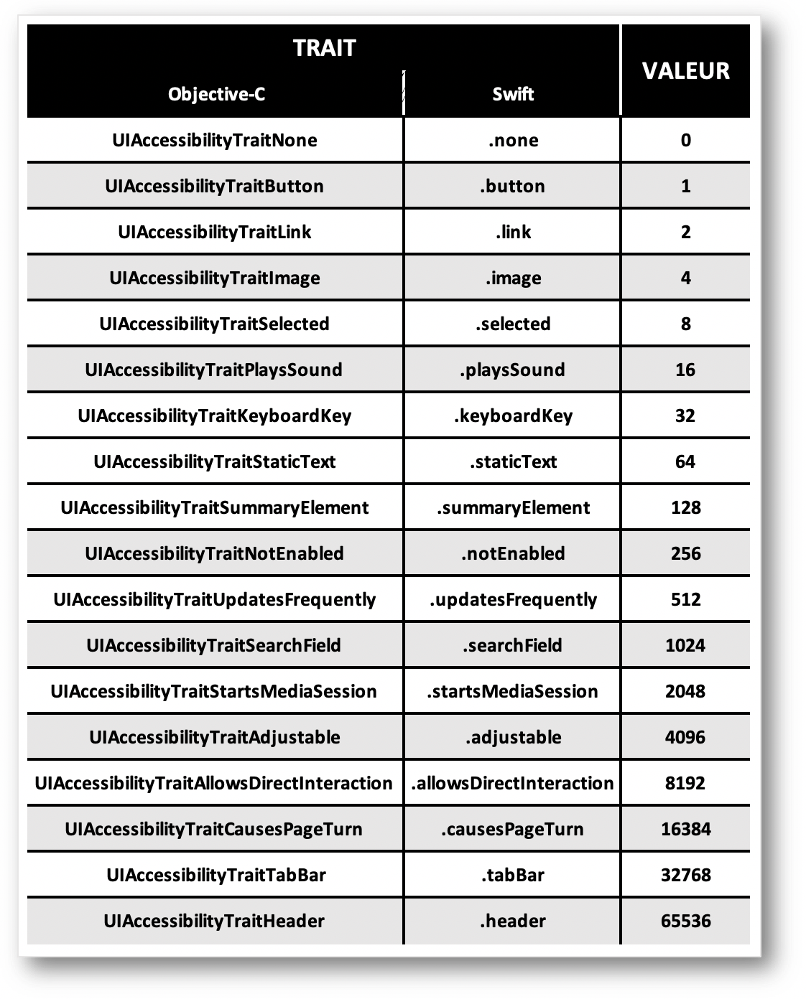
Il est donc possible d'ajouter et d'enlever plusieurs traits présents pour caractériser un élement après avoir vérifié leur existence par exemple.
- (void)changeTraits {
//Création d'un jeu de traits qui efface le contenu précédent du bitmask.
onePageButton.accessibilityTraits = UIAccessibilityTraitButton | UIAccessibilityTraitLink;
//Ajouts de traits au contenu existant du bitmask.
pageControl.accessibilityTraits |= UIAccessibilityTraitHeader; //Only one trait.
pageControl.accessibilityTraits |= UIAccessibilityTraitButton + UIAccessibilityTraitLink; //Many traits.
//Suppression d'un trait.
onePageButton.accessibilityTraits &= ~UIAccessibilityTraitLink;
//Vérification de l'existence d'un trait au sein du bitmask.
if ((pageControl.accessibilityTraits & UIAccessibilityTraitHeader) != 0) {
// Tâches à réaliser si le trait '.header' est présent...
}
}
func changeTraits() {
//Création d'un jeu de traits qui efface le contenu précédent du bitmask.
onePageButton.accessibilityTraits = [.button, .link]
//Ajouts de traits au contenu existant du bitmask.
pageControl.accessibilityTraits.insert(.header) //Only one trait.
pageControl.accessibilityTraits.formUnion([.button, .link]) //Many traits.
//Suppression d'un trait.
onePageButton.accessibilityTraits.remove(.link)
//Vérification de l'existence d'un trait au sein du bitmask.
if (pageControl.accessibilityTraits.rawValue & UIAccessibilityTraits.header.rawValue == UIAccessibilityTraits.header.rawValue) {
// Tâches à réaliser si le trait '.header' est présent...
}
}
Alternatives textuelles
label, hint, value et trait.L’ordre de vocalisation est toujours le même (
label, value, trait et hint), il ne peut pas être changé et la vocalisation est réalisée en une seule fois à l’arrivée sur l’élément.
Une section de ce guide étant dédiée au trait, nous décrivons ici les 3 autres attributs :
- accessibilityLabel : le label permet de préciser le titre spécifique à l’accessibilité qui est lu par VoiceOver en lieu et place du texte du composant si celui-ci en possède un, ce qui permet d’avoir un texte de composant plus explicite que celui affiché à l’écran. Par exemple, dans le cas d’un bouton dont le titre est « OK », on peut indiquer que le bouton sert à valider un choix.
- accessibilityValue : la valeur d’un élément est, par défaut, le pourcentage de progression.
À noter que, pour la plupart des éléments ajustables disponibles dans le SDK, cette
valuen’a pas besoin d’être précisée car le système restitue automatiquement la valeur à l’utilisateur via VoiceOver. - accessibilityHint : le
hintpermet de décrire le comportement du composant en incorporant des explications supplémentaires. Exemple : « cliquez pour obtenir le résultat ».
Ces attributs sont disponibles via l’interface builder de Xcode mais également accessibles en programmation.
Tout élément dérivant de UIView possède ces attributs qui acceptent une chaîne de caractère les rendant ainsi internationalisables.
@interface ChangeTextView() {
__weak IBOutlet UILabel * monLabel;
__weak IBOutlet UIProgressView * maProgressView;
}
@end
@implementation ChangeTextView
- (void)viewDidAppear:(BOOL)animated {
[super viewDidAppear:animated];
monLabel.accessibilityLabel = @"bonjour";
monLabel.accessibilityHint = @"Ceci est un commentaire supplémentaire.";
maProgressView.accessibilityValue = @"45 pour cent";
}
@end
class ChangeTextView: UIViewController {
@IBOutlet weak var monLabel: UILabel!
@IBOutlet weak var maProgressView: UIProgressView!
override func viewDidAppear(_ animated: Bool) {
super.viewDidAppear(animated)
monLabel.accessibilityLabel = "bonjour"
monLabel.accessibilityHint = "Ceci est un commentaire supplémentaire."
maProgressView.accessibilityValue = "45 pour cent"
}
}
Date, heure et nombres
label, on s'aperçoit rapidement que le rendu n'est pas naturel à l'écoute.
 Il faut absolument formater les données en entrée pour obtenir une vocalisation descriptive naturelle et compréhensible.
Il faut absolument formater les données en entrée pour obtenir une vocalisation descriptive naturelle et compréhensible.

NSDateFormatter * dateFormatter = [[NSDateFormatter alloc]init];
[dateFormatter setDateFormat:@"dd/MM/yyyy HH:mm"];
NSDate * date = [dateFormatter dateFromString:@"01/04/2015 05:30"];
dateLabel.text = [NSDateFormatter localizedStringFromDate:date
dateStyle:NSDateFormatterShortStyle
timeStyle:NSDateFormatterNoStyle];
dateLabel.accessibilityLabel = [NSDateFormatter localizedStringFromDate:date
dateStyle:NSDateFormatterMediumStyle
timeStyle:NSDateFormatterNoStyle];
hourLabel.text = [NSDateFormatter localizedStringFromDate:date
dateStyle:NSDateFormatterNoStyle
timeStyle:NSDateFormatterShortStyle];
NSDateComponents * hourComponents = [[NSCalendar currentCalendar] components:NSCalendarUnitHour | NSCalendarUnitMinute
fromDate:date];
hourLabel.accessibilityLabel = [NSDateComponentsFormatter localizedStringFromDateComponents:hourComponents
unitsStyle:NSDateComponentsFormatterUnitsStyleSpellOut];
let dateFormatter = DateFormatter()
dateFormatter.dateFormat = "dd/MM/yyyy HH:mm"
let date = dateFormatter.date(from: "01/04/2015 05:30")
dateLabel.text = DateFormatter.localizedString(from: date!,
dateStyle: .short,
timeStyle: .none)
dateLabel.accessibilityLabel = DateFormatter.localizedString(from: date!,
dateStyle: .medium,
timeStyle: .none)
hourLabel.text = DateFormatter.localizedString(from: date!,
dateStyle: .none,
timeStyle: .short)
let hourComponents = Calendar.current.dateComponents([.hour, .minute],
from: date!)
hourLabel.accessibilityLabel = DateComponentsFormatter.localizedString(from: hourComponents,
unitsStyle: .spellOut)
label, la vocalisation se fera sur chacun des chiffres présentés rendant la véritable valeur du nombre difficile à deviner.
 Comme pour les date et heure, il faut formater la donnée en entrée pour qu'elle puisse être analysée et vocalisée selon la véritable valeur du nombre qu'elle représente.
Comme pour les date et heure, il faut formater la donnée en entrée pour qu'elle puisse être analysée et vocalisée selon la véritable valeur du nombre qu'elle représente.

NSNumber * numberValue = @54038921.7;
NSNumberFormatter * numberFormatter = [[NSNumberFormatter alloc]init];
numberFormatter.numberStyle = NSNumberFormatterDecimalStyle;
numberLabel.text = [numberFormatter stringFromNumber:numberValue];
numberLabel.accessibilityLabel = [NSNumberFormatter localizedStringFromNumber:numberValue
numberStyle:NSNumberFormatterSpellOutStyle];
let numberValue = NSNumber(value: 54038921.7)
numberLabel.text = NumberFormatter.localizedString(from: numberValue,
number: .decimal)
numberLabel.accessibilityLabel = NumberFormatter.localizedString(from: numberValue,
number: .spellOut)
 L'idée est de séparer chaque paire de chiffres par une virgule qui va fournir la ponctuation vocale.
L'idée est de séparer chaque paire de chiffres par une virgule qui va fournir la ponctuation vocale.

NSString * phoneNumberValue = @"06.11.22.33.06";
NSArray * phoneNumberElts = [phoneNumberValue componentsSeparatedByString:@"."];
NSNumberFormatter * nbFormatter = [[NSNumberFormatter alloc]init];
nbFormatter.numberStyle = NSNumberFormatterSpellOutStyle;
NSMutableString * spelledOutString = [[NSMutableString alloc]init];
[phoneNumberElts enumerateObjectsUsingBlock:^(id _Nonnull obj,
NSUInteger idx,
BOOL * _Nonnull stop) {
NSString * elt = (NSString *)obj;
if (idx != 0) {
[spelledOutString appendString:@","];
}
if ([elt hasPrefix:@"0"]) {
NSString * firstFigure = [nbFormatter stringFromNumber:@([[elt substringToIndex:1] integerValue])];
NSString * secondFigure = [nbFormatter stringFromNumber:@([[elt substringFromIndex:1] integerValue])];
[spelledOutString appendString:firstFigure];
[spelledOutString appendString:secondFigure];
} else {
[spelledOutString appendString:[nbFormatter stringFromNumber:@([elt integerValue])]];
}
}];
phoneNumberLabel.text = phoneNumberValue;
phoneNumberLabel.accessibilityLabel = spelledOutString;
let phoneNumberValue = "06.11.22.33.06"
let phoneNumberElts = phoneNumberValue.components(separatedBy: ".")
let nbFormatter = NumberFormatter()
nbFormatter.numberStyle = .spellOut
var spelledOutString = String()
for (index, elt) in phoneNumberElts.enumerated() {
if (index != 0) {
spelledOutString.append(",")
}
if (elt.hasPrefix("0")) {
let firstFigureValue = Int(String(elt[elt.startIndex]))!
let firstFigure = nbFormatter.string(from: NSNumber(value:firstFigureValue))
spelledOutString.append(firstFigure!)
let secondFigureValue = Int(String(elt[elt.index(elt.startIndex, offsetBy: 1)]))!
let secondFigure = nbFormatter.string(from: NSNumber(value:secondFigureValue))
spelledOutString.append(secondFigure!)
} else {
let figure = nbFormatter.string(from: NSNumber(value:Int(elt)!))
spelledOutString.append(figure!)
}
}
phoneNumberLabel.text = phoneNumberValue
phoneNumberLabel.accessibilityLabel = spelledOutString
Déclencher une vocalisation
UIAccessibilityPostNotification(UIAccessibilityAnnouncementNotification,
@"Message pour la vocalisation.");
UIAccessibility.post(notification: .announcement,
argument: "Message pour la vocalisation.")
Modifier la langue de vocalisation
UIAccessibility, cet attribut permet de redéfinir la langue de prononciation d’un texte.
accessibilityLanguage sur un UILabel, alors celui-ci sera vocalisé par VoiceOver dans la nouvelle langue donnée en valeur de l’attribut.
- (IBAction)tapHere:(UIButton *)sender {
myLabel.accessibilityLanguage = @"en";
myLabel.accessibilityLabel = @"This is a new label. Thank you.";
UIAccessibilityPostNotification(UIAccessibilityLayoutChangedNotification, myLabel);
}
@IBAction func tapHere(_ sender: UIButton) {
myLabel.accessibilityLanguage = "en"
myLabel.accessibilityLabel = "This is a new label. Thank you."
UIAccessibility.post(notification: UIAccessibility.Notification.layoutChanged,
argument: myLabel)
}
Informer d’une modification sur la page
- UIAccessibilityLayoutChangedNotification : permet de spécifier à l’API d’accessibilité qu’une partie de la page a été modifiée et doit être accompagné d'un
NSStringou d'unUIObject. Avec unNSString, la notification se comporte comme une UIAccessibilityAnnouncementNotification et lance une vocalisation VoiceOver. Avec unUIObject, le focus est repositionné sur l’élément précisé. Cette notification est très similaire à UIAccessibilityAnnouncementNotification mais son utilisation doit être mise en avant dès lors qu'une modification dynamique du contenu se produit. - UIAccessibilityScreenChangedNotification : permet d’annoncer un changement global de la page et accepte soit
nil, soit l’élément qui doit recevoir le focus. Avecnil, la notification vocalise et sélectionne le premier élément accessible de la page. Avec unUIObject, le focus est repositionné sur l’élément précisé en lançant une vocalisation VoiceOver. Le son utilisé pour notifier la modification est similaire à l'arrivée d'une nouvelle page.
//L'élément 'myLabel' est sélectionné et vocalisé avec sa nouvelle valeur.
- (IBAction)tapHere:(UIButton *)sender {
myLabel.accessibilityLabel = @"Ceci est un nouveau label.";
UIAccessibilityPostNotification(UIAccessibilityLayoutChangedNotification, myLabel);
}
//Le premier élément accessible de la page est sélectioné et vocalisé avec un son spécifique.
- (IBAction)clic:(UIButton *)sender {
UIAccessibilityPostNotification(UIAccessibilityScreenChangedNotification, nil);
}
//L'élément 'myLabel' est sélectionné et vocalisé avec sa nouvelle valeur.
@IBAction func tapHere(_ sender: UIButton) {
myLabel.accessibilityLabel = "Ceci est un nouveau label."
UIAccessibility.post(notification: UIAccessibility.Notification.layoutChanged,
argument: myLabel)
}
//Le premier élément accessible de la page est sélectioné et vocalisé avec un son spécifique.
@IBAction func clic(_ sender: UIButton) {
UIAccessibility.post(notification: UIAccessibility.Notification.screenChanged,
argument: nil)
}
Masquer des éléments
- isAccessibilityElement : booléen qui permet d’indiquer qu’un élément est visible ou non de l’API d’accessibilité (de VoiceOver ou autre).
- accessibilityElementsHidden : booléen qui permet d’indiquer que les éléments fils de l’élément cible sont visibles ou non de l’API d’accessibilité.
- accessibilityViewIsModal : booléen qui permet de rendre visible ou non les éléments frères de l’élément cible à l’API d’accessibilité. Une explication théorique et une application pratique de cette propriété sont fournies par une vidéo détaillée dans la partie WWDC de ce site.
L’attribut accessibilityElement est disponible via l’interface builder de Xcode mais est également utilisable directement via le code.
Les deux autres attributs sont utilisables uniquement via le code.
Fonctionnement.

- (void)viewDidAppear:(BOOL)animated {
[super viewDidAppear:animated];
//Création d'un élément père dans lequel 2 autres éléments fils vont être insérés.
CGRect redParentViewRect = CGRectMake(100.0, 100.0, 40.0, 40.0);
UIView * myRedParentView = [[UIView alloc]initWithFrame:redParentViewRect];
myRedParentView.backgroundColor = [UIColor redColor];
[self.view addSubview:myRedParentView];
//L'élément père ne doit pas être accessible pour servir de conteneur à ses enfants.
//Si la valeur est à 'YES', seul cet élément sera accessible sans ses enfants.
myRedParentView.isAccessibilityElement = NO;
//Indication du conteneur que ses enfants peuvent ne pas être accessibles même s'ils sont définis comme tels.
//Si cette valeur est à 'NO' et la précédente à 'NO', seuls ces élements seront accessibles.
myRedParentView.accessibilityElementsHidden = NO;
[self createViewWithColor:[UIColor yellowColor]
inside:myRedParentView];
[self createViewWithColor:[UIColor blueColor]
inside:myRedParentView];
}
- (void)createViewWithColor:(UIColor*)color
inside:(UIView*)parentView {
float delta = (color == [UIColor yellowColor]) ? 0.0 : 20.0;
CGRect rect = CGRectMake(10.0 + delta, 10.0 + delta, 10.0, 10.0);
UIView * theView = [[UIView alloc]initWithFrame:rect];
theView.backgroundColor = color;
[parentView addSubview:theView];
theView.isAccessibilityElement = YES;
}
override func viewDidAppear(_ animated: Bool) {
super.viewDidAppear(animated)
//Création d'un élément père dans lequel 2 autres éléments fils vont être insérés.
let redParentViewRect = CGRect.init(x: 100.0,
y: 100.0,
width: 40.0,
height: 40.0)
let myRedParentView = UIView.init(frame: redParentViewRect)
myRedParentView.backgroundColor = .red
self.view.addSubview(myRedParentView)
//L'élément père ne doit pas être accessible pour servir de conteneur à ses enfants.
//Si la valeur est à 'true', seul cet élément sera accessible sans ses enfants.
myRedParentView.isAccessibilityElement = false
//Indication du conteneur que ses enfants peuvent ne pas être accessibles même s'ils sont définis comme tels.
//Si cette valeur est à 'false' et la précédente à 'false', seuls ces élements seront accessibles.
myRedParentView.accessibilityElementsHidden = false
self.createViewWithColor(.yellow, inside: myRedParentView)
self.createViewWithColor(.blue, inside: myRedParentView)
}
func createViewWithColor(_ color:UIColor, inside parentView:UIView) {
let delta:CGFloat = ((color == .yellow) ? 0.0 : 20.0)
let rect = CGRect.init(x: 10.0 + delta,
y: 10.0 + delta,
width: 10.0,
height: 10.0)
let theView = UIView.init(frame: rect)
theView.backgroundColor = color
parentView.addSubview(theView)
theView.isAccessibilityElement = true
}
Grouper des éléments
 Création de l'élément accessible qui va regrouper les éléments souhaités :
Création de l'élément accessible qui va regrouper les éléments souhaités :
#import "MyViewController.h"
#import "MyWrapView.h"
@interface MyViewController ()
@property (weak, nonatomic) IBOutlet UILabel * myLabel;
@property (weak, nonatomic) IBOutlet UISwitch * mySwitch;
@end
@implementation MyViewController
- (void)viewDidAppear:(BOOL)animated {
[super viewDidAppear:animated];
//Création de la vue qui va encapsuler le 'label' et le 'Switch Control'.
MyWrapView * wrap = [[MyWrapView alloc] initWith:_myLabel
and:_mySwitch];
[self.view addSubview:wrap];
}
@end
class MyViewController: UIViewController {
@IBOutlet weak var myLabel: UILabel!
@IBOutlet weak var mySwitch: UISwitch!
override func viewDidAppear(_ animated: Bool) {
super.viewDidAppear(animated)
//Création de la vue qui va encapsuler le 'label' et le 'Switch Control'.
let wrap = MyWrapView.init(with: myLabel,
and: mySwitch)
self.view.addSubview(wrap)
}
}
... et implémentation de la classe utilisée pour définir de façon précise l'action à associer au double tap d'activation :
@implementation MyWrapView
//Index utilisés pour repérer les éléments accessibles dans la vue de regroupement.
int indexLabel = 0;
int indexSwitch = 1;
- (instancetype)initWith:(UILabel *)label and:(UISwitch *)aSwitch {
CGRect viewFrame = CGRectUnion(label.frame, aSwitch.frame);
MyWrapView * wrapView = [[MyWrapView alloc]initWithFrame:viewFrame];
wrapView.accessibilityElements = @[label, aSwitch];
NSString * switchValue = (aSwitch.isOn) ? @"activé" : @"désactivé";
wrapView.isAccessibilityElement = YES;
wrapView.accessibilityLabel = [NSString stringWithFormat:@"le contrôle est %@", switchValue.description];
wrapView.accessibilityHint = @"tapez deux fois pour changer sa valeur";
return wrapView;
}
//Fonction appelée par le système quand un double tap est réalisé sur l'élément sélectionné pour l'activer.
- (BOOL)accessibilityActivate {
UISwitch * theSwitch = self.accessibilityElements[indexSwitch];
[theSwitch setOn:!(theSwitch.isOn)];
NSString * switchValue = (theSwitch.isOn) ? @"activé" : @"désactivé";
self.accessibilityLabel = [NSString stringWithFormat:@"le contrôle est %@", switchValue.description];
return YES;
}
@end
class MyWrapView: UIView {
//Index utilisés pour repérer les éléments accessibles dans la vue de regroupement.
let indexLabel = 0
let indexSwitch = 1
override init(frame: CGRect) {
super.init(frame: frame)
}
required init?(coder aDecoder: NSCoder) {
super.init(coder: aDecoder)
}
convenience init(with label: UILabel,and aSwitch: UISwitch) {
let viewFrame = label.frame.union(aSwitch.frame)
self.init(frame: viewFrame)
self.accessibilityElements = [label, aSwitch]
let switchValue = (aSwitch.isOn) ? "activé" : "désactivé"
self.isAccessibilityElement = true
self.accessibilityLabel = "le contrôle est " + switchValue.description
self.accessibilityHint = "tapez deux fois pour changer sa valeur."
}
//Fonction appelée par le système quand un double tap est réalisé sur l'élément sélectionné pour l'activer.
override func accessibilityActivate() -> Bool {
let theSwitch = self.accessibilityElements?[indexSwitch] as? UISwitch
theSwitch?.setOn(!((theSwitch?.isOn)!), animated: false)
let switchValue = (theSwitch?.isOn)! ? "activé" : "désactivé"
self.accessibilityLabel = "le contrôle est" + switchValue.description
return true
}
}
frame créée de façon à avoir son accessibilityActivationPoint directement dessus.
Cela n'étant malheureusement pas toujours possible, il va donc falloir créer un élément accessible qui regroupera tous les objets impactés puis définir son accessibilityActivationPoint sur le 'switch control'.

@interface ActivationPointViewController ()
@property (weak, nonatomic) IBOutlet UIButton * myButton;
@property (weak, nonatomic) IBOutlet UILabel * myLabel;
@property (weak, nonatomic) IBOutlet UISwitch * mySwitch;
@end
@implementation ActivationPointViewController
UIAccessibilityElement * elt;
- (void)viewDidAppear:(BOOL)animated {
[super viewDidAppear:animated];
[_mySwitch addTarget:self
action:@selector(configChanged:)
forControlEvents:UIControlEventValueChanged];
elt = [[UIAccessibilityElement alloc]initWithAccessibilityContainer:self.view];
CGRect a11yFirstEltFrame = CGRectUnion(_myLabel.frame, _myButton.frame);
CGRect a11yEltFrame = CGRectUnion(a11yFirstEltFrame, _mySwitch.frame);
elt.accessibilityLabel = @"regroupement d'éléments";
elt.accessibilityHint = @"tapez deux fois pour modifier le switch";
elt.accessibilityFrameInContainerSpace = a11yEltFrame;
elt.accessibilityActivationPoint = [_mySwitch center];
self.view.accessibilityElements = @[elt];
}
- (void)configChanged:(UISwitch *)sender {
NSString * switchValue = _mySwitch.on ? @"activé" : @"désactivé";
elt.accessibilityLabel = [NSString stringWithFormat:@"le contrôle est %@", switchValue.description];
}
@end
class ActivationPointViewController: UIViewController {
@IBOutlet weak var myButton: UIButton!
@IBOutlet weak var myLabel: UILabel!
@IBOutlet weak var mySwitch: UISwitch!
var elt: UIAccessibilityElement?
override func viewDidAppear(_ animated: Bool) {
super.viewDidAppear(animated)
mySwitch.addTarget(self,
action: #selector(configChanged),
for: .valueChanged)
elt = UIAccessibilityElement(accessibilityContainer: self.view!)
let a11yEltFrame = (myLabel.frame.union(myButton.frame)).union(mySwitch.frame)
if let elt = elt {
elt.accessibilityLabel = "regroupement d'éléments"
elt.accessibilityHint = "tapez deux fois pour modifier le switch"
elt.accessibilityFrameInContainerSpace = a11yEltFrame
elt.accessibilityActivationPoint = mySwitch.center
self.view.accessibilityElements = [elt]
}
}
@objc func configChanged(sender: UISwitch){
if let configGroup = elt {
let switchValue = (mySwitch?.isOn)! ? "activé" : "désactivé"
configGroup.accessibilityLabel = "le contrôle est " + switchValue.description
}
}
}
Une autre possibilité de groupement d'éléments pourrait utiliser l’attribut shouldGroupAccessibilityChildren, booléen qui permet d’indiquer à VoiceOver qu’il doit grouper les enfants de la vue qui porte l’attribut. Cela permet notamment de faire des vocalisations uniques ou de définir un ordre de lecture VoiceOver particulier pour une partie de la page seulement (voir la section Ordre de lecture).
Ordre de lecture

__weak IBOutlet UIView * blueBlock;
__weak IBOutlet UIView * greyColumn;
- (void)viewDidAppear:(BOOL)animated {
[super viewDidAppear:animated];
//Lecture des 3 premiers nombres dans la vue grise.
greyColumn.shouldGroupAccessibilityChildren = YES;
// Lecture des chiffres 6, 8, 9 et 5 au sein du bloc bleu.
blueBlock.isAccessibilityElement = NO;
blueBlock.accessibilityElements = @[key_6,
key_8,
key_9,
key_5];
}
@IBOutlet weak var greyColumn: UIView!
@IBOutlet weak var blueBlock: UIView!
override func viewDidAppear(_ animated: Bool) {
super.viewDidAppear(animated)
//Lecture des 3 premiers nombres dans la vue grise.
greyColumn.shouldGroupAccessibilityChildren = true
// Lecture des chiffres 6, 8, 9 et 5 au sein du bloc bleu.
blueBlock.isAccessibilityElement = false
blueBlock.accessibilityElements = [key_6!,
key_8!,
key_9!,
key_5!]
}
Focus d'un élément
- accessibilityElementDidBecomeFocused : méthode appelée dès que l'élément accessible est sélectionné.
- accessibilityElementDidLoseFocus : méthode appelée dès que l'élément accessible perd le focus.
- accessibilityElementIsFocused : valeur booléenne qui permet de savoir si un élément accessible est sélectionné.
Attention, ces méthodes ne sont pas appelées au sein d'un contrôleur de vue si un de ses élements accessibles est sélectionné mais uniquemnet si elles sont implémentées sur l'élément accessible lui-même. Cette erreur à laquelle on ne pense pas de prime abord provient du caractère informel du protocole UIAccessibilityFocus dont les éléments peuvent subir un override sur tout objet héritant de NSObject même s'il n'est pas accessible... comme un contrôleur de vue par exemple.
accessibleIdentifier.
#import "UIView+focus.h"
@implementation UIView (focus)
- (void)accessibilityElementDidBecomeFocused {
if ([self accessibilityElementIsFocused]) {
NSLog(@"Mon élément est sélectionné.");
}
}
- (void)accessibilityElementDidLoseFocus {
if ([self accessibilityElementIsFocused]) {
NSLog(@"Mon élément a perdu le focus.");
}
}
- (BOOL)accessibilityElementIsFocused {
if ([self.accessibilityIdentifier isEqualToString:@"monEltAccessible"]) {
return YES;
} else {
return NO;
}
}
@end
extension UIView {
override open func accessibilityElementDidBecomeFocused() {
if self.accessibilityElementIsFocused() {
print("Mon élément est sélectionné.")
}
}
override open func accessibilityElementDidLoseFocus() {
if self.accessibilityElementIsFocused() {
print("Mon élément a perdu le focus.")
}
}
override open func accessibilityElementIsFocused() -> Bool {
if (self.accessibilityIdentifier == "monEltAccessible") {
return true
} else {
return false
}
}
}
Modifier la zone de focus de VoiceOver
UIView, il est possible de déterminer la zone géographique d’accessibilité de cet élément, c’est-à-dire la zone que VoiceOver met en surbrillance lors du focus.
- accessibilityFrame : permet de définir cette zone via un rectangle (
CGRect). Par défaut pour un élément dérivant deUIView, cette zone est la partie « visible » de la vue. - accessibilityPath : équivalent à
accessibilityFramemais permet de définir la zone via des courbes de Bézier. - accessibilityActivationPoint : définit un point de contact au sein de la
framedont l'action résultante sera activée par une sélection classique d'élément via un double tap. Par défaut, ce point se trouve au centre de laframemais on peut le définir n'importe à l'intérieur de cette dernière, l'idée étant de pouvoir activer un élement facilement lors d'un regroupement par exemple. 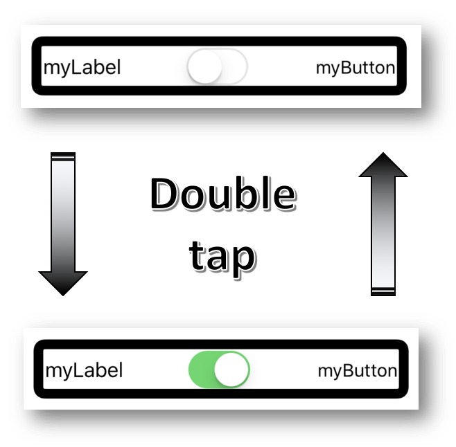 En conservant la valeur par défaut de ce point, on peut aisément se retrouver dans une situation où on active involontairement l'élément situé au milieu de laframeuniquement en activant le regroupement créé.

float xVal;
float yVal;
float widthVal;
float heightVal;
- (void)viewDidAppear:(BOOL)animated {
[super viewDidAppear:animated];
xVal = myLabel.accessibilityFrame.origin.x;
yVal = myLabel.accessibilityFrame.origin.y;
widthVal = myLabel.accessibilityFrame.size.width;
heightVal = myLabel.accessibilityFrame.size.height;
}
//Première façon d'augmenter la zone de focus.
- (IBAction)tapHere:(UIButton *)sender {
myLabel.accessibilityFrame = CGRectMake(xVal,
yVal,
widthVal + 100.0,
heightVal+ 100.0);
UIAccessibilityPostNotification(UIAccessibilityLayoutChangedNotification, myLabel);
}
//Seconde façon d'augmenter la zone de focus (Bézier).
- (IBAction)clic:(UIButton *)sender {
UIBezierPath * bezierPath = [UIBezierPath bezierPath];
[bezierPath moveToPoint:CGPointMake(xVal, yVal)];
[bezierPath addLineToPoint:CGPointMake(xVal + widthVal + 100.0,
yVal)];
[bezierPath addLineToPoint:CGPointMake(xVal + widthVal + 100.0,
yVal + heightVal+ 100.0)];
[bezierPath addLineToPoint:CGPointMake(xVal,
yVal + heightVal+ 100.0)];
[bezierPath closePath];
myLabel.accessibilityPath = bezierPath;
UIAccessibilityPostNotification(UIAccessibilityLayoutChangedNotification, myLabel);
}
var xVal: CGFloat = 0.0
var yVal: CGFloat = 0.0
var widthVal: CGFloat = 0.0
var heightVal: CGFloat = 0.0
override func viewDidAppear(_ animated: Bool) {
super.viewDidAppear(animated)
xVal = myLabel.accessibilityFrame.origin.x;
yVal = myLabel.accessibilityFrame.origin.y;
widthVal = myLabel.accessibilityFrame.size.width;
heightVal = myLabel.accessibilityFrame.size.height;
}
//Première façon d'augmenter la zone de focus.
@IBAction func clicHere(_ sender: UIButton) {
myLabel.accessibilityFrame = CGRect.init(x: xVal,
y: yVal,
width: widthVal + 100.0,
height: heightVal + 100.0)
UIAccessibility.post(notification: UIAccessibility.Notification.layoutChanged,
argument: myLabel)
}
//Seconde façon d'augmenter la zone de focus (Bézier).
@IBAction func clic(_ sender: UIButton) {
let bezierPath = UIBezierPath.init()
bezierPath.move(to: CGPoint.init(x: xVal, y: yVal))
bezierPath.addLine(to: CGPoint.init(x: xVal + widthVal + 100.0,
y: yVal))
bezierPath.addLine(to: CGPoint.init(x: xVal + widthVal + 100.0,
y: yVal + heightVal + 100.0))
bezierPath.addLine(to: CGPoint.init(x: xVal,
y: yVal + heightVal + 100.0))
bezierPath.close()
myLabel.accessibilityPath = bezierPath
UIAccessibility.post(notification: UIAccessibility.Notification.screenChanged,
argument: myLabel)
}
Vue modale
accessibilityViewIsModal = true risque de ne pas produire toujours l'effet escompté en vocalisant certains éléments situés en arrière-plan.
En effet, seuls les éléments accessibles situés au même niveau hiérarchique que la vue impactée sur laquelle cette propriété sera activée seront exclus de l'analyse VoiceOver.
Une illustration pédagogique et interactive présente dans cet article de David RÖNNQVIST (section 'Implementing accessible modal views') permet de parfaitement comprendre graphiquement comment fonctionne une vue modale si les explications fournies dans l'onglet Exemples ne sont pas suffisamment claires.
- Une première vue (parent A) avec 3 sous-vues (A1, A2, A3).
- Une seconde vue (parent B) avec un premier niveau (B1 et B2) possédant lui-même des sous-vues (B1.1, B1.2, B2.1, B2.2 et B3.3).
Exemple 1 : passer Parent A en vue modale.
Sachant que Parent A et Parent B sont au même niveau de la hiérarchie des vues, le simple fait d'activer accessibilityViewIsModal sur Parent A permet d'obtenir le résulat souhaité.
Exemple 2 : passer A2 en vue modale.
Les vues A1 et A3 ne sont pas prises en compte par VoiceOver car elles sont au même niveau de la hiérarchie des vues que A2 MAIS Parent B (ou éventuellement ses sous-vues) sera vocalisé... ce qui n'est pas souhaité.
Pour solutionner ce problème, l'idée est de masquer les éléments non désirables dès lors qu'on active la vue modale.
parentA.isAccessibilityElement = NO;
parentA.accessibilityElementsHidden = NO;
A2.accessibilityViewIsModal = YES;
//Résout le problème de Parent B et de ses sous-vues.
parentB.isAccessibilityElement = NO;
parentB.accessibilityElementsHidden = YES;
parentA.isAccessibilityElement = false
parentA.accessibilityElementsHidden = false
A2.accessibilityViewIsModal = true
//Résout le problème de Parent B et de ses sous-vues.
parentB.isAccessibilityElement = false
parentB.accessibilityElementsHidden = true
Exemple 3 : passer B1.1 en vue modale.
Dans ce cas, les vues parent A et B2 (ou éventuellement leurs sous-vues) sont vocalisées tout comme la vue modale.
Seule B1.2 qui est au même niveau que B1.1 n'est pas analysée par VoiceOver.
Là encore, il faut masquer tous les éléments accessibles non désirables dès lors qu'on active la vue modale.
parentB.isAccessibilityElement = NO;
parentB.accessibilityElementsHidden = NO;
B1.isAccessibilityElement = NO;
B1.accessibilityElementsHidden = NO;
B11.accessibilityViewIsModal = YES;
//Résout le problème de Parent A et de B2.
parentA.isAccessibilityElement = NO;
parentA.accessibilityElementsHidden = YES;
B2.isAccessibilityElement = NO;
B2.accessibilityElementsHidden = YES;
parentB.isAccessibilityElement = false
parentB.accessibilityElementsHidden = false
B1.isAccessibilityElement = false
B1.accessibilityElementsHidden = false
B11.accessibilityViewIsModal = true
//Résout le problème de Parent A et de B2.
parentA.isAccessibilityElement = false
parentA.accessibilityElementsHidden = true
B2.isAccessibilityElement = false
B2.accessibilityElementsHidden = true
Taille des textes

Quelques points sont néanmoins essentiels pour la bonne utilisation du Dynamic Type mis à disposition :
- Utiliser impérativement les styles de texte proposés selon la version d'iOS avec laquelle l'application est développée. 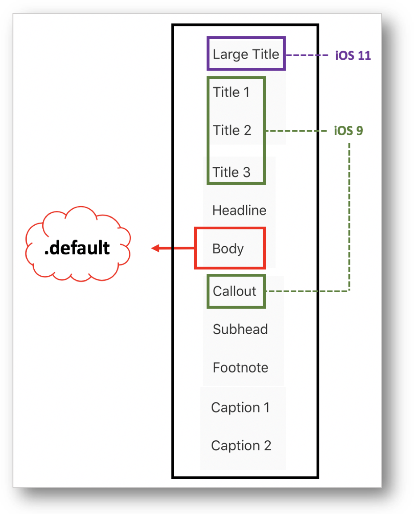
Utiliser la police système pour les textes de l’application afin de se faciliter grandement la tâche même si l'utilisation d'autres polices est devenue nettement plus aisée depuis l'arrivée de
UIFontMetricsavec iOS11.__weak IBOutlet UILabel * fontHeadline; __weak IBOutlet UILabel * fontFootNote; //Utilisation de la font native. fontFootNote.font = [UIFont preferredFontForTextStyle:UIFontTextStyleHeadline]; //Définition de la font pour le titre principal d'une page. UIFont * fontHead = [UIFont fontWithName:@"Chalkduster" size:30.0]; UIFontMetrics * fontHeadMetrics = [[UIFontMetrics alloc]initForTextStyle:UIFontTextStyleHeadline]; fontHeadline.font = [fontHeadMetrics scaledFontForFont:fontHead];@IBOutlet weak var fontHeadline: UILabel! @IBOutlet weak var fontFootNote: UILabel! //Utilisation de la police native. fontFootNote.font = .preferredFont(forTextStyle: .headline) //Définition personnalisée de la police pour le titre principal d'une page. let fontHead = UIFont(name: "Chalkduster", size: 30.0) let fontHeadMetrics = UIFontMetrics(forTextStyle: .headline) fontHeadline.font = fontHeadMetrics.scaledFont(for: fontHead!)Penser à écouter la notification UIContentSizeCategoryDidChange qui annonce le changement de la taille du texte à partir des paramètres du téléphone. Cette tâche est simplifiée depuis iOS10 où l'attribut adjustsFontForContentSizeCategory se charge de la mise à jour automatique de la nouvelle taille de la police système au sein de l'application (cet attribut ne peut s'appliquer aux polices personnalisées qu'avec l'utilisation de
UIFontMetricsen iOS11). Il est aussi possible d'utiliser la méthode traitCollectionDidChange du protocole informelUITraitEnvironmentqui sera automatiquement appelée dès qu'une modification concernant l'environnement de l'interface iOS surviendra (class/content size, portrait/paysage, constraste des couleurs).//Écoute de la notification annonçant le changement de taille de la police. [[NSNotificationCenter defaultCenter] addObserver:self selector:@selector(methodToBeCalled:) name:UIContentSizeCategoryDidChangeNotification object:nil]; //Modification automatique de la taille de la police sans utiliser la notification. fontHeadline.adjustsFontForContentSizeCategory = YES; - (void)methodToBeCalled:(NSNotification *)notification { //Il faut de nouveau affecter la police des éléments impactés lors du traitement de cette notification. fontFootNote.font = [UIFont preferredFontForTextStyle:UIFontTextStyleFootnote]; }//Écoute de la notification annonçant le changement de taille de la police. NotificationCenter.default.addObserver(self, selector:#selector(methodToBeCalled(notification:)), name: UIContentSizeCategory.didChangeNotification, object: nil) //Modification automatique de la taille de la police sans utiliser la notification. fontHeadline.adjustsFontForContentSizeCategory = true @objc func methodToBeCalled(notification: Notification) { //Il faut de nouveau affecter la police des éléments impactés lors du traitement de cette notification. fontFootNote.font = UIFont.preferredFont(forTextStyle: .footnote) }- Ne pas oublier d'adapter les contraintes graphiques aux éléments susceptibles de voir leur taille modifiée en privilégiant l'utilisation de valeurs dynamiques : penser à paramétrer les éléments inclus dans les navigation/tab/status bar et toolbar qui seront affichés via le Large Content Viewer.
- Penser à adapter le contraste des couleurs à la taille de texte modifiée si nécessaire.
Trait d'union de troncature
Dynamic Type exposé dans le paragraphe précédent s'accompagne indéniablement de la troncature de mots en fonction du grossissement de texte choisi par l'utilisateur.
Malheureusement, cela n'est pas pris en compte nativement par le système et seule une intervention au niveau programmatique permet d'obtenir ce rendu visuel particulièrement apprécié.
 L'idée est de spécifier l'utilisation d'un
L'idée est de spécifier l'utilisation d'un NSMutableAttributedString auquel on ajoute une propriété de type NSMutableParagraphStyle comme indiqué par l'exemple ci-dessous :
@interface TruncationHyphen () {
__weak IBOutlet UILabel * myLabel;
}
@end
@implementation TruncationHyphen
- (void)viewDidLoad {
[super viewDidLoad];
NSString * myString = @"anticonstitutionnellement";
NSMutableParagraphStyle * paraph = [[NSMutableParagraphStyle alloc] init];
paraph.alignment = NSTextAlignmentJustified;
paraph.hyphenationFactor = 1.0;
UIFont * myFont = [UIFont fontWithName:@"HoeflerText-Black" size:18.0];
UIFont * myTextFont = [[UIFontMetrics metricsForTextStyle:UIFontTextStyleTitle1] scaledFontForFont:myFont];
NSDictionary * attributesDictionary = @{NSFontAttributeName:myTextFont};
NSMutableAttributedString * myText = [[NSMutableAttributedString alloc]initWithString:myString
attributes:attributesDictionary];
[myText addAttribute:NSParagraphStyleAttributeName
value:paraph
range:NSMakeRange(0, 1)];
myLabel.attributedText = myText;
}
@end
class TruncationHyphen: UIViewController {
@IBOutlet weak var myLabel: UILabel!
override func viewDidLoad() {
super.viewDidLoad()
let myString = "anticonstitutionnellement"
let paraph = NSMutableParagraphStyle()
paraph.alignment = .justified
paraph.hyphenationFactor = 1.0
let myTextFont = UIFontMetrics(forTextStyle: .title1).scaledFont(for:UIFont(name:"HoeflerText-Black", size:18)!)
let myText = NSMutableAttributedString(string:myString,
attributes: [.font: myTextFont])
myText.addAttribute(.paragraphStyle,
value: paraph,
range: NSMakeRange(0,1))
myLabel.attributedText = myText
}
}
Taille des éléments graphiques
pdf à la résolution x1 dans le catalogue xcassets.
2. Dans l'Image Set qui vient d'être créé, cocher la case Preserve Vector Data et spécifier Single Scale :
 3. Si un storyboard est utilisé pour intégrer l'image, cocher
3. Si un storyboard est utilisé pour intégrer l'image, cocher Adjusts Image Size dans la partie Image View, sinon mettre à true la propriété adjustsImageSizeForAccessibilityContentSizeCategory de l'image si cette opération se fait de façon programmatique :
 4. Si une barre de tabulation ou une barre d'outils est aussi à intégrer dans l'application, renouveler les 3 étapes précédentes pour chacune des images à utiliser en grossissement de l'onglet au milieu de l'écran puis associer l'image souhaitée aux différents éléments impactés :
4. Si une barre de tabulation ou une barre d'outils est aussi à intégrer dans l'application, renouveler les 3 étapes précédentes pour chacune des images à utiliser en grossissement de l'onglet au milieu de l'écran puis associer l'image souhaitée aux différents éléments impactés :
 ATTENTION : s'assurer que les contraintes mises en place initialement permettent toujours un affichage cohérent et désiré après grossissement.
De façon à pouvoir tester à la fois le grossissement des images et celui d'un onglet sélectionné, on crée une application contenant une barre de tabulations contenant 2 onglets dont seul le second nous intéresse et affiche l'image du logo Orange.
Après modification du grossissement de texte dans les réglages (voir la rubrique précédente), on revient dans l'application pour constater :
ATTENTION : s'assurer que les contraintes mises en place initialement permettent toujours un affichage cohérent et désiré après grossissement.
De façon à pouvoir tester à la fois le grossissement des images et celui d'un onglet sélectionné, on crée une application contenant une barre de tabulations contenant 2 onglets dont seul le second nous intéresse et affiche l'image du logo Orange.
Après modification du grossissement de texte dans les réglages (voir la rubrique précédente), on revient dans l'application pour constater :
- Une taille de l'image Orange nettement plus conséquente.
- Au milieu de l'écran, l'affichage grossi de l'onglet sur lequel on doit appuyer de façon continue pour provoquer cette apparition ⟹ fonctionnalité Large Content Viewer disponible depuis iOS 11.

Large Content Viewer
Dynamic Type permet le grossissement de tous les éléments graphiques avec une particularité pour les éléments {navigation/tab/status bars + toolbars} pour lesquels un appui long est nécessaire pour afficher un HUD en plein écran appelé Large Content Viewer (voir Taille des éléments graphiques).
Disponible depuis iOS 11, cette fonctionnalité était confinée aux seuls éléments UIKit mentionnés précédemment jusqu'à iOS 13 où son utilisation est désormais possible sur tout élément graphique qui se conforme au protocole UILargeContentViewerItem.
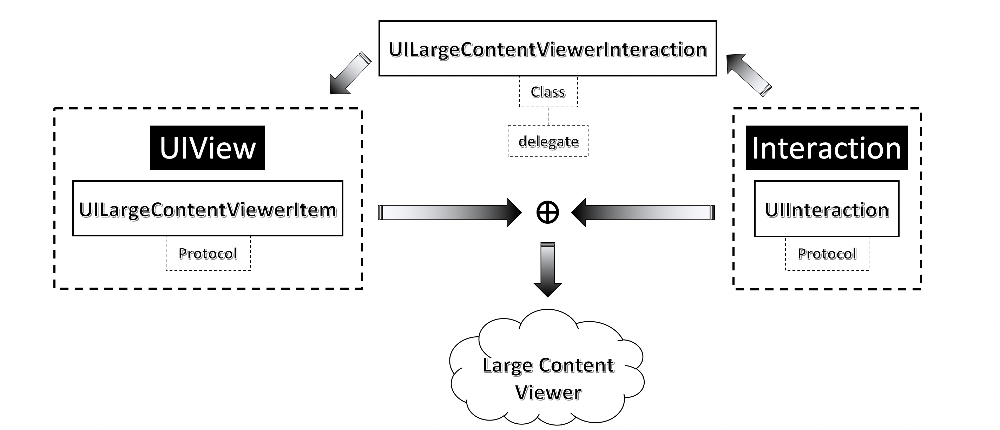
Avant d'implémenter le Large Content Viewer, il y a deux points importants qu'il est nécessaire de préciser :
- Cette fonctionnalité n'est disponible que pour les cinq dernières tailles de grossissement activées en accessibilité dans les réglages du terminal.
- Il est très important d'avoir à l'esprit que les modifications de taille liées au
Dynamic Typedoivent toujours être implémentées de façon P.R.I.O.R.I.T.A.I.R.E. : leLarge Content Viewern'est à utiliser qu'à partir du moment où l'élément graphique impacté ne peut pas répondre aux changements souhaités ⟹ recommandation Apple.
Large Content Viewer sur cette vue pour obtenir le résultat grossi an milieu d'écran :
@interface LogoViewController ()
@property (weak, nonatomic) IBOutlet UIImageView * myView;
@end
NS_ASSUME_NONNULL_BEGIN
@implementation LogoViewController
- (void)viewDidLoad {
[super viewDidLoad];
_myView.showsLargeContentViewer = YES;
_myView.largeContentTitle = @"logo";
_myView.largeContentImage = [UIImage systemImageNamed:@"hand.thumbsup"];
[_myView addInteraction:[[UILargeContentViewerInteraction alloc] init]];
}
@end
NS_ASSUME_NONNULL_END
class LogoViewController: UIViewController {
@IBOutlet weak var myView: UIImageView!
override func viewDidAppear(_ animated: Bool) {
super.viewDidAppear(animated)
myView.isUserInteractionEnabled = true
myView.showsLargeContentViewer = true
myView.largeContentTitle = "logo"
myView.largeContentImage = UIImage(systemName: "hand.thumbsup")
myView.addInteraction(UILargeContentViewerInteraction())
}
}
De la même façon, pour un élément cliquable comme un bouton dont le grossissement pourrait devenir problématique, il est tout à fait possible d'utiliser cette fonctionnalité pour afficher son contenu et s'assurer que son action sera déclenchée dès que le doigt sera relevé :
@interface ButtonViewController ()
@property (weak, nonatomic) IBOutlet UIButton * myButton;
@end
NS_ASSUME_NONNULL_BEGIN
@implementation ButtonViewController
- (void)viewDidLoad {
[super viewDidLoad];
_myButton.showsLargeContentViewer = YES;
_myButton.largeContentTitle = @"button";
_myButton.largeContentImage = @"hand.thumbsup";
[_myButton addInteraction:[[UILargeContentViewerInteraction alloc] init]];
}
- (IBAction)tapButton:(UIButton *)sender {
//Actions à réaliser dès que le bouton est activé.
}
@end
NS_ASSUME_NONNULL_END
class ButtonViewController: UIViewController {
@IBOutlet weak var myButton: UIButton!
override func viewDidAppear(_ animated: Bool) {
super.viewDidAppear(animated)
myButton.showsLargeContentViewer = true
myButton.largeContentTitle = "button"
myButton.largeContentImage = UIImage(systemName: "hand.thumbsup")
myButton.addInteraction(UILargeContentViewerInteraction())
}
@IBAction func tapButton(_ sender: UIButton) {
//Actions à réaliser dès que le bouton est activé.
}
}
Lorsque la gestuelle 'appui long' est déjà implémentée sur l'élément impacté, il est nécessaire d'utiliser la méthode gestureRecognizer(_:shouldRecognizeSimultaneouslyWith:) qui permettra de mettre en place concomitamment les deux gestuelles.
Valeurs continûment ajustables
picker, le stepper ou encore le slider permettent de changer de façon continue la valeur qu'ils proposent de modifier.
 Quand on ne voit pas la modification dynamique se faire ou qu'on n'en est pas informé vocalement, il devient très compliqué de pouvoir se rendre compte de ce qui se passe.
Quand on ne voit pas la modification dynamique se faire ou qu'on n'en est pas informé vocalement, il devient très compliqué de pouvoir se rendre compte de ce qui se passe.
stepper sera traité.
L'implémentation de cet objet graphique est relativement simple mais son utilisation avec VoiceOver requiert quelques ajustements pour obtenir un meilleur parcours utilisateur.
Si on crée un stepper auquel on ajoute un label pour afficher sa valeur, on obtient le résultat suivant :
 À partir de là, on s'aperçoit que le focus doit être déplacé pour :
À partir de là, on s'aperçoit que le focus doit être déplacé pour :
- Atteindre chacun des deux éléments permettant d'augmenter ou de diminuer la valeur.
- Connaître la valeur obtenue via le
label.
De plus, il n'y a aucune indication de changement de la valeur en temps réel.
Certes, rien n'est bloquant mais, si l'on souhaite réellement mettre en place cet objet avec un rendu le plus fluide possible, ces quelques remarques conduisent tout naturellement à concevoir différemment cet exemple pourtant si simple.
L'idée est de pouvoir changer la valeur du stepper, être informé de son changement et d'en connaître la valeur par le biais d'un unique objet.
Il faut donc regrouper le stepper et le label (à l'aide d'une StackView par exemple) puis associer UIAccessibilityTraitAdjustable à ce nouveau groupe accessible.
Ce nouveau trait va permettre de modifier de façon continue la valeur de l'objet auquel il est associé en implémentant OBLIGATOIREMENT les méthodes accessibilityIncrement() et accessibilityDecrement().
On élimine ainsi toutes les contraintes rencontrées initialement et on obtient, en plus, un hint lié à ce nouveau trait qui indique la manipulation nécessaire au bon fonctionnement.

- Pour aboutir à ce résultat, on définit tout d'abord une classe conteneur {stepper +
label} qui va permettre la délégation pour la modification ultérieure de la valeur.
-===== StepperWrapper.h =====-
NS_ASSUME_NONNULL_BEGIN
@class StepperWrapper;
@protocol AdjustableForAccessibilityDelegate <NSObject>
- (void)adjustableDecrementForView:(StepperWrapper *)view;
- (void)adjustableIncrementForView:(StepperWrapper *)view;
@end
@interface StepperWrapper : UIStackView
@property(nonatomic,weak) id <AdjustableForAccessibilityDelegate> delegate;
@end
NS_ASSUME_NONNULL_END
-===== StepperWrapper.m =====-
NS_ASSUME_NONNULL_BEGIN
@implementation StepperWrapper
- (instancetype)initWithCoder:(NSCoder *)coder {
self = [super initWithCoder:coder];
self.isAccessibilityElement = YES;
self.accessibilityTraits = UIAccessibilityTraitAdjustable;
return self;
}
- (void)accessibilityDecrement {
if ([_delegate respondsToSelector:@selector(adjustableDecrementForView:)]) {
[_delegate adjustableDecrementForView:self];
}
}
- (void)accessibilityIncrement {
if ([_delegate respondsToSelector:@selector(adjustableIncrementForView:)]) {
[_delegate adjustableIncrementForView:self];
}
}
@end
NS_ASSUME_NONNULL_END
protocol AdjustableForAccessibilityDelegate: class {
func adjustableDecrementFor(_ view: StepperWrapper)
func adjustableIncrementFor(_ view: StepperWrapper)
}
class StepperWrapper: UIStackView {
weak var delegate: AdjustableForAccessibilityDelegate?
override init(frame: CGRect) {
super.init(frame: frame)
}
required init(coder: NSCoder) {
super.init(coder: coder)
isAccessibilityElement = true
accessibilityTraits = .adjustable
}
override func accessibilityDecrement() {
delegate?.adjustableDecrementFor(self)
}
override func accessibilityIncrement() {
delegate?.adjustableIncrementFor(self)
}
}
- Ensuite, il faut redéfinir les 2 méthodes du protocole implémenté pour indiquer ce qu'elles doivent réaliser avant de mettre à jour la valeur modifiée et de la présenter vocalement dans le ViewController.
NS_ASSUME_NONNULL_BEGIN
@interface ContinuousAdjustableValues () <AdjustableForAccessibilityDelegate>
@property (weak, nonatomic) IBOutlet StepperWrapper * stepperStackViewAccess;
@property (weak, nonatomic) IBOutlet UIStepper * stepperAccess;
@property (weak, nonatomic) IBOutlet UILabel * stepperValueAccess;
@end
@implementation ContinuousAdjustableValues
- (void)viewWillAppear:(BOOL)animated {
[super viewWillAppear:animated];
_stepperStackViewAccess.delegate = self;
_stepperStackViewAccess.accessibilityLabel = @"augmenter ou diminuer la valeur";
_stepperStackViewAccess.accessibilityValue = _stepperValueAccess.text;
}
- (void)adjustableDecrementForView:(StepperWrapper *)view {
_stepperAccess.value -= _stepperAccess.stepValue;
[self updateStepperValue];
}
- (void)adjustableIncrementForView:(StepperWrapper *)view {
_stepperAccess.value += _stepperAccess.stepValue;
[self updateStepperValue];
}
- (void) updateStepperValue {
_stepperValueAccess.text = [NSString stringWithFormat:@"Valeur = %0.1f",_stepperAccess.value];
_stepperStackViewAccess.accessibilityValue = _stepperValueAccess.text;
}
@end
NS_ASSUME_NONNULL_END
class ContinuousAdjustableValues: UIViewController, AdjustableForAccessibilityDelegate {
@IBOutlet weak var stepperStackViewAccess: StepperWrapper!
@IBOutlet weak var stepperAccess: UIStepper!
@IBOutlet weak var stepperValueAccess: UILabel!
override func viewDidLoad() {
super.viewDidLoad()
stepperStackViewAccess.delegate = self
stepperStackViewAccess.accessibilityLabel = "augmenter ou diminuer la valeur"
stepperStackViewAccess.accessibilityValue = stepperValueAccess.text
}
func adjustableDecrementFor(_ view: StepperWrapper) {
stepperAccess.value -= stepperAccess.stepValue
updateStepperValue()
}
func adjustableIncrementFor(_ view: StepperWrapper) {
stepperAccess.value += stepperAccess.stepValue
updateStepperValue()
}
private func updateStepperValue() {
stepperValueAccess.text = "Valeur = \(stepperAccess.value)"
stepperStackViewAccess.accessibilityValue = stepperValueAccess.text
}
}
Actions personnalisées
 La gestuelle utilisée sans utilisation du lecteur d'écran ne peut pas convenir à VoiceOver pour obtenir le résultat désiré : un balayage vers la gauche sélectionnerait l'élément accessible suivant au lieu de proposer les actions à réaliser sur le mail sélectionné.
Dans un cas comme celui-là, il conviendrait de réaliser les opérations décrites dans l'onglet
La gestuelle utilisée sans utilisation du lecteur d'écran ne peut pas convenir à VoiceOver pour obtenir le résultat désiré : un balayage vers la gauche sélectionnerait l'élément accessible suivant au lieu de proposer les actions à réaliser sur le mail sélectionné.
Dans un cas comme celui-là, il conviendrait de réaliser les opérations décrites dans l'onglet Exemple pour donner accès à ces opérations si elles n'étaient pas implémentées nativement.
Exemple.
@interface CustomActions ()
@property (weak, nonatomic) IBOutlet UILabel * persoElt;
@end
@implementation CustomActions
- (void)viewDidLoad {
[super viewDidLoad];
UIAccessibilityCustomAction * a11yOptionsAction = [[UIAccessibilityCustomAction alloc]initWithName:@"options"
target:self
selector:@selector(optionsAction)];
UIAccessibilityCustomAction * a11yDrapeauAction = [[UIAccessibilityCustomAction alloc]initWithName:@"drapeau"
target:self
selector:@selector(drapeauAction)];
UIAccessibilityCustomAction * a11yCorbeilleAction = [[UIAccessibilityCustomAction alloc]initWithName:@"corbeille"
target:self
selector:@selector(corbeilleAction)];
_persoElt.accessibilityCustomActions = @[a11yOptionsAction,
a11yDrapeauAction,
a11yCorbeilleAction];
}
- (BOOL)optionsAction {
//Code à implémenter pour cette action.
return YES;
}
- (BOOL)drapeauAction {
//Code à implémenter pour cette action.
return YES;
}
- (BOOL)corbeilleAction {
//Code à implémenter pour cette action.
return YES;
}
@end
class CustomActions: UIViewController {
@IBOutlet weak var persoElt: UILabel!
override func viewDidLoad() {
super.viewDidLoad()
let a11yOptionsAction = UIAccessibilityCustomAction(name: "options",
target: self,
selector: #selector(optionsAction))
let a11yDrapeauAction = UIAccessibilityCustomAction(name: "drapeau",
target: self,
selector: #selector(drapeauAction))
// Nouvelle syntaxe iOS 13 avec une 'closure'.
let a11yCorbeilleAction = UIAccessibilityCustomAction(name: "corbeille",
actionHandler: { (customAction: UIAccessibilityCustomAction) -> Bool in
//Code à implémenter pour cette action.
return true
})
persoElt.accessibilityCustomActions = [a11yOptionsAction,
a11yDrapeauAction,
a11yCorbeilleAction]
}
@objc func optionsAction() -> Bool {
//Code à implémenter pour cette action.
return true
}
@objc func drapeauAction() -> Bool {
//Code à implémenter pour cette action.
return true
}
}
Le code implémenté ci-dessus permet d'obtenir le résultat suivant par balayages successifs sur l'élément accessible sélectionné : 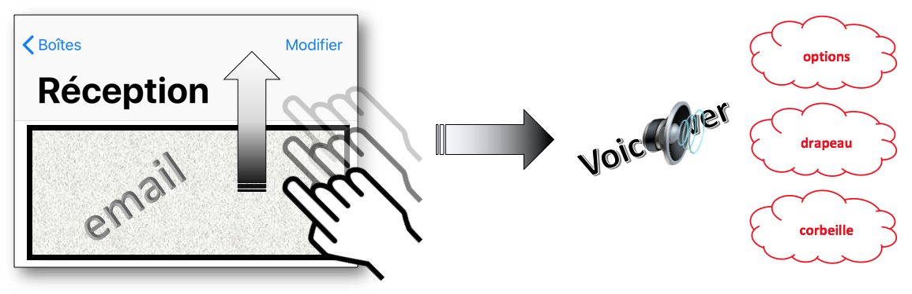 Pour plus d'informations sur ce sujet, ne pas hésiter à visualiser la vidéo Utiliser les actions personnalisées dont le résumé détaillé se trouve dans la section WWDC de ce site.
Rotor personnalisé
- UIAccessibilityCustomRotorSearchPredicate : définit la logique à mettre en oeuvre selon le type de balayage effectué sur l'écran.
- UIAccessibilityCustomRotorItemResult : correspond à l'élément issu de la logique précedente.

@interface CustomRotor ()
@property (weak, nonatomic) IBOutlet UILabel * rotorTitle;
@property (weak, nonatomic) IBOutlet UILabel * upLabel;
@property (weak, nonatomic) IBOutlet UILabel * downLabel;
@end
@implementation CustomRotor
static NSInteger flicksUp;
static NSInteger flicksDown;
+ (void)initialize {
flicksUp = 0;
flicksDown = 0;
}
- (void)viewDidLoad {
[super viewDidLoad];
UIAccessibilityCustomRotor * rotor = [self buildMyRotor:@"Rotor info"];
self.accessibilityCustomRotors = @[rotor];
}
- (UIAccessibilityCustomRotor *)buildMyRotor:(NSString * _Nonnull)name{
return [[UIAccessibilityCustomRotor alloc]initWithName:name
itemSearchBlock:^UIAccessibilityCustomRotorItemResult * _Nullable(UIAccessibilityCustomRotorSearchPredicate * _Nonnull predicate) {
if (predicate.searchDirection == UIAccessibilityCustomRotorDirectionNext) {
flicksDown += 1;
self.downLabel.text = [NSString stringWithFormat:@"%ld",(long)flicksDown];
} else {
flicksUp += 1;
self.upLabel.text = [NSString stringWithFormat:@"%ld",(long)flicksUp];
}
return [[UIAccessibilityCustomRotorItemResult alloc] initWithTargetElement:self.rotorTitle
targetRange:nil];
}];
}
@end
class CustomRotor: UIViewController {
@IBOutlet weak var rotorTitle: UILabel!
static var flicksUp = 0
@IBOutlet weak var upLabel: UILabel!
static var flicksDown = 0
@IBOutlet weak var downLabel: UILabel!
override func viewDidLoad() {
super.viewDidLoad()
let rotor = buildMyRotor("Rotor info")
self.accessibilityCustomRotors = [rotor]
}
func buildMyRotor(_ name: String) -> UIAccessibilityCustomRotor {
return UIAccessibilityCustomRotor.init(name: name,
itemSearch: { predicate -> UIAccessibilityCustomRotorItemResult? in
if (predicate.searchDirection == UIAccessibilityCustomRotor.Direction.next) {
CustomRotor.flicksDown += 1
self.downLabel.text = String(CustomRotor.flicksDown)
} else {
CustomRotor.flicksUp += 1
self.upLabel.text = String(CustomRotor.flicksUp)
}
return UIAccessibilityCustomRotorItemResult.init(targetElement:self.rotorTitle,
targetRange: nil)
})
}
}
Le code implémenté ci-dessus permet d'obtenir le résultat suivant :
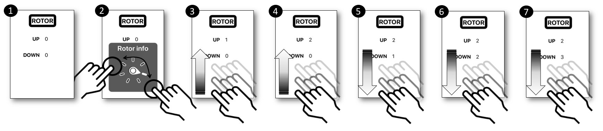
L'utilisation d'un rotor personnalisé n'est pas du tout naturelle au sein d'une application, c'est pourquoi il est primordial de bien annoncer son fonctionnement et sa finalité pour faciliter au maximum l'expérience utilisateur.
La majeure différence du rotor avec les actions personnalisées ou encore les valeurs continûment ajustables réside dans sa possible utilisation quel que soit l'élément sélectionné sur l'écran.
Cependant, si l'élément sélectionné est ajustable ou contient des actions personnalisées, ses actions prévaudront sur celles du rotor.
L'implémentation d'une telle fonctionnalité au sein d'une application est donc à envisager selon des besoins bien spécifiques dont le seul objectif doit être de faciliter l'expérience utilisateur.
Options d’accessibilité
UIKit permettent de connaître le statut de ces options d'accessibilité.
La plus utile est certainement celle qui permet de savoir si VoiceOver est activé au moment de l’appel (UIAccessibilityIsVoiceOverRunning).
Une présentation très visuelle de certaines fonctions, peut-être moins utiles à première vue, est faite lors d'une vidéo WWDC (Fournir une expérience exceptionnelle en accessibilité) dont le contenu est parfaitement détaillé sur ce site.
BOOL isVoiveOverRunning = (UIAccessibilityIsVoiceOverRunning() ? 1 : 0);
BOOL isSwitchControlRunning = (UIAccessibilityIsSwitchControlRunning() ? 1 : 0);
NSLog(@"VoiceOver vaut %d et SwitchControl vaut %d.", isVoiveOverRunning, isSwitchControlRunning);
let isVoiceOverRunning = (UIAccessibility.isVoiceOverRunning ? 1 : 0)
let isSwitchControlRunning = (UIAccessibility.isSwitchControlRunning ? 1 : 0)
print("VoiceOver vaut \(isVoiceOverRunning) et SwichControl vaut \(isSwitchControlRunning).")
Dans cet exemple, on appelle une méthode spécifique au moment où le statut de VoiceOver ou du Switch Control change.
- (void)viewDidAppear:(BOOL)animated {
[super viewDidAppear:animated];
[[NSNotificationCenter defaultCenter] addObserver:self
selector:@selector(methodToBeCalled:)
name:UIAccessibilitySwitchControlStatusDidChangeNotification
object:nil];
[[NSNotificationCenter defaultCenter] addObserver:self
selector:@selector(methodToBeCalled:)
name:UIAccessibilityVoiceOverStatusDidChangeNotification
object:nil];
}
- (void)methodToBeCalled:(NSNotification *)notification {
NSArray * checkStatus = @[@"NOK", @"OK"];
NSLog(@"SWITCH CONTROL est %@ et VOICE OVER est %@",
checkStatus[UIAccessibilityIsSwitchControlRunning()],
checkStatus[UIAccessibilityIsVoiceOverRunning()]);
}
override func viewDidAppear(_ animated: Bool) {
super.viewDidAppear(animated)
NotificationCenter.default.addObserver(self,
selector: #selector(methodToBeCalled(notification:)),
name: UIAccessibility.switchControlStatusDidChangeNotification,
object: nil)
NotificationCenter.default.addObserver(self,
selector: #selector(methodToBeCalled(notification:)),
name: UIAccessibility.voiceOverStatusDidChangeNotification,
object: nil)
}
@objc private func methodToBeCalled(notification: Notification) {
let switchControlStatus = (UIAccessibility.isSwitchControlRunning ? "OK" : "NOK")
let voiceOverStatus = (UIAccessibility.isVoiceOverRunning ? "OK" : "NOK")
print("SWITCH CONTROL est \(switchControlStatus) et VOICE OVER est \(voiceOverStatus).")
}
- Options d'accessibilité (conception iOS)
Barre de navigation
label une fois la barre de navigation chargée.
self.navigationController.navigationBar.backItem.accessibilityLabel = @"nouveau label pour le bouton de retour";
navigationController?.navigationBar.backItem?.accessibilityLabel = "nouveau label pour le bouton de retour"
La personnalisation de cet élément consiste souvent à afficher un chevron particulier sans texte.
 Les deux façons possibles de réalisation détaillées dans les exemples ci-dessous s'appuient sur le remplacement de l'élément standard par un UIBarButtonItem personnalisé avec une simple image fournie en entrée qui définit le chevron à présenter :
Les deux façons possibles de réalisation détaillées dans les exemples ci-dessous s'appuient sur le remplacement de l'élément standard par un UIBarButtonItem personnalisé avec une simple image fournie en entrée qui définit le chevron à présenter :
UIBarButtonItem * _a11yLeftBarButton;
_a11yLeftBarButton = [[UIBarButtonItem alloc]initWithImage:[UIImage imageNamed:@"info_chevron"]
style:UIBarButtonItemStyleDone
target:self
action:@selector(goBackToThePreviousView:)];
_a11yLeftBarButton.accessibilityLabel = @"écran précédent";
self.navigationItem.leftBarButtonItem = _a11yLeftBarButton;
var a11yLeftBarButton: UIBarButtonItem?
a11yLeftBarButton = UIBarButtonItem(image: UIImage(named: "info_chevron"),
style: .done,
target: self,
action: #selector(goBackToThePreviousView(info:)))
a11yLeftBarButton!.accessibilityLabel = "écran précédent"
navigationItem.leftBarButtonItem = a11yLeftBarButton
... ou avec une UIView pour laquelle une action doit être ajoutée pour définir le rôle du nouveau bouton : cette implémentation est plus longue que la précédente mais a l'avantage de fournir une frame dont on va avoir besoin si l'on souhaite travailler sur l'ordre de lecture des éléments de la barre de navigation par exemple.
var a11yLeftBarButton: UIBarButtonItem?
UIImage * img = [UIImage imageNamed:@"info_chevron"];
UIImageView * imgView = [[UIImageView alloc]initWithImage:img];
_a11yLeftBarButton = [[UIBarButtonItem alloc]initWithCustomView:imgView];
UITapGestureRecognizer * tap = [[UITapGestureRecognizer alloc]initWithTarget:self
action:@selector(goBackToThePreviousView:)];
[_a11yLeftBarButton.customView addGestureRecognizer:tap];
_a11yLeftBarButton.isAccessibilityElement = YES;
_a11yLeftBarButton.accessibilityTraits = UIAccessibilityTraitButton;
_a11yLeftBarButton.accessibilityLabel = @"écran précédent";
self.navigationItem.leftBarButtonItem = _a11yLeftBarButton;
var a11yLeftBarButton: UIBarButtonItem?
let a11yLeftBarButtonImage = UIImage(named: "info_chevron")
a11yLeftBarButton = UIBarButtonItem(customView: UIImageView(image: a11yLeftBarButtonImage))
let tap = UITapGestureRecognizer(target: self,
action: #selector(goBackToThePreviousView(info:)))
a11yLeftBarButton?.customView?.addGestureRecognizer(tap)
a11yLeftBarButton?.isAccessibilityElement = true
a11yLeftBarButton?.accessibilityTraits = .button
a11yLeftBarButton?.accessibilityLabel = "écran précédent"
navigationItem.leftBarButtonItem = a11yLeftBarButton
L'implémentation de l'une ou l'autre de ces solutions va donc dépendre de l'utilisation ultérieure du nouvel élément avec VoiceOver.
 À la création d'éléments dans la partie droite de la barre de navigation, l'utilisation de UIView est recommandée de façon à pouvoir interagir avec VoiceOver sans effectuer trop de modifications ultérieurement.
À la création d'éléments dans la partie droite de la barre de navigation, l'utilisation de UIView est recommandée de façon à pouvoir interagir avec VoiceOver sans effectuer trop de modifications ultérieurement.
UIBarButtonItem * _a11yRightBarButton;
UILabel * a11y = [[UILabel alloc]init];
a11y.text = @"OK";
[a11y sizeToFit];
[a11y setUserInteractionEnabled:YES]; //Obligatoire pour reconnaître le 'tap gesture'.
_a11yRightBarButton = [[UIBarButtonItem alloc]initWithCustomView:a11y];
UITapGestureRecognizer * tap = [[UITapGestureRecognizer alloc]initWithTarget:self
action:@selector(validateActions:)];
[_a11yRightBarButton.customView addGestureRecognizer:tap];
_a11yRightBarButton.isAccessibilityElement = YES;
_a11yRightBarButton.accessibilityTraits = UIAccessibilityTraitButton;
_a11yRightBarButton.accessibilityLabel = @"validation des actions";
self.navigationItem.rightBarButtonItem = _a11yRightBarButton;
var a11yRightBarButton: UIBarButtonItem?
let a11y = UILabel()
a11y.text = "OK"
a11y.sizeToFit()
a11y.isUserInteractionEnabled = true //Obligatoire pour reconnaître le 'tap gesture'.
a11yRightBarButton = UIBarButtonItem(customView: a11y)
let tap = UITapGestureRecognizer(target: self,
action: #selector(validateActions(info:)))
a11yRightBarButton?.customView?.addGestureRecognizer(tap)
a11yRightBarButton?.isAccessibilityElement = true
a11yRightBarButton?.accessibilityTraits = .button
a11yRightBarButton?.accessibilityLabel = "validation des actions"
navigationItem.rightBarButtonItem = a11yRightBarButton
RightBarItem permet de passer à la page suivante.
De façon à pouvoir illustrer une modification d'ordre de lecture impactant les éléments de la barre de navigation, nous allons supposer que le RightBarItem doit être le dernier élément de la page atteint à l'aide de balayages horizontaux successifs avec un seul doigt.
La page étudiée comprendra :
- Une barre de navigation avec un chevron simple (LeftBarItem), un titre et un bouton 'OK' (RightBarItem).
- Cinq labels non consécutifs.
- Un bouton 'ACTION' centré en milieu de page.
 L'idée est de lire les éléments dans l'ordre suivant : LeftBarItem, titre, Label1, Label2, Label3, bouton 'ACTION', Label4, Label5 et RightBarItem.
Dans un premier temps, on personnalise les éléments de la barre de navigation en s'appuyant sur les exemples de code fournis dans les autres onglets de cette section.
L'idée est de lire les éléments dans l'ordre suivant : LeftBarItem, titre, Label1, Label2, Label3, bouton 'ACTION', Label4, Label5 et RightBarItem.
Dans un premier temps, on personnalise les éléments de la barre de navigation en s'appuyant sur les exemples de code fournis dans les autres onglets de cette section.
@interface NavigationBarReadingOrder() {
UIBarButtonItem * _a11yLeftBarButton;
UIView * _a11yBarTitle;
UIBarButtonItem * _a11yRightBarButton;
}
@end
@implementation NavigationBarReadingOrder
- (void)viewDidLoad {
[super viewDidLoad];
[self setBackItem];
[self setTitle];
[self setNextPageBarButton];
}
- (void)setBackItem {
UIImage * img = [UIImage imageNamed:@"info_chevron"];
UIImageView * imgView = [[UIImageView alloc]initWithImage:img];
_a11yLeftBarButton = [[UIBarButtonItem alloc]initWithCustomView:imgView];
UITapGestureRecognizer * tap = [[UITapGestureRecognizer alloc]initWithTarget:self
action:@selector(goBackToThePreviousView:)];
[_a11yLeftBarButton.customView addGestureRecognizer:tap];
self.navigationItem.leftBarButtonItem = _a11yLeftBarButton;
}
- (void)setTitle {
UILabel * a11yTitleLabel = [[UILabel alloc]init];
a11yTitleLabel.text = @"TITRE";
[a11yTitleLabel sizeToFit];
self.navigationItem.titleView = a11yTitleLabel;
_a11yBarTitle = self.navigationItem.titleView;
}
- (void)setNextPageBarButton {
UILabel * a11y = [[UILabel alloc]init];
a11y.text = @"OK";
[a11y sizeToFit];
[a11y setUserInteractionEnabled:YES];
_a11yRightBarButton = [[UIBarButtonItem alloc]initWithCustomView:a11y];
UITapGestureRecognizer * tap = [[UITapGestureRecognizer alloc]initWithTarget:self
action:@selector(validateActions:)];
[_a11yRightBarButton.customView addGestureRecognizer:tap];
self.navigationItem.rightBarButtonItem = _a11yRightBarButton;
}
@end
class OrderViewController: UIViewController {
var a11yLeftBarButton: UIBarButtonItem?
var a11yBarTitle: UIView?
var a11yRightBarButton: UIBarButtonItem?
override func viewDidLoad() {
super.viewDidLoad()
setBackItem()
setTitle()
setNextPageBarButton()
}
private func setBackItem() {
let a11yLeftBarButtonImage = UIImage(named: "infoChevron")
a11yLeftBarButton = UIBarButtonItem(customView: UIImageView(image: a11yLeftBarButtonImage))
let tap = UITapGestureRecognizer(target: self,
action: #selector(goBackToThePreviousView(info:)))
a11yLeftBarButton?.customView?.addGestureRecognizer(tap)
navigationItem.leftBarButtonItem = a11yLeftBarButton
}
private func setTitle() {
let a11yTitleLabel = UILabel()
a11yTitleLabel.text = "TITRE"
a11yTitleLabel.sizeToFit()
navigationItem.titleView = a11yTitleLabel
a11yBarTitle = navigationItem.titleView
}
private func setNextPageBarButton() {
let a11y = UILabel()
a11y.text = "OK"
a11y.sizeToFit()
a11y.isUserInteractionEnabled = true
a11yRightBarButton = UIBarButtonItem(customView: a11y)
let tap = UITapGestureRecognizer(target: self,
action: #selector(goToTheNextPage(info:)))
a11yRightBarButton?.customView?.addGestureRecognizer(tap)
navigationItem.rightBarButtonItem = a11yRightBarButton
}
}
Ensuite, on crée des éléments accessibles pour la barre de navigation et on spécifie l'ordre de lecture VoiceOver pour les éléments de la vue à l'aide de son tableau accessibilityElements.
La vue et la barre de navigation étant deux conteneurs différents, on cache les éléments de la barre de navigation à VoiceOver et on les transfère à la vue en les créant avec des coordonnées de focus appropriées.
@interface NavigationBarReadingOrder() {
UIBarButtonItem * _a11yLeftBarButton;
UIView * _a11yBarTitle;
UIBarButtonItem * _a11yRightBarButton;
}
@property (weak, nonatomic) IBOutlet UILabel * a11yLabel1;
@property (weak, nonatomic) IBOutlet UILabel * a11yLabel2;
@property (weak, nonatomic) IBOutlet UILabel * a11yLabel3;
@property (weak, nonatomic) IBOutlet UILabel * a11yLabel4;
@property (weak, nonatomic) IBOutlet UILabel * a11yLabel5;
@property (weak, nonatomic) IBOutlet UIButton * a11yCentralButton;
@end
@implementation NavigationBarReadingOrder
- (void)viewDidAppear:(BOOL)animated {
[super viewDidAppear:animated];
[self createA11yElts];
self.navigationController.navigationBar.accessibilityElementsHidden = YES;
}
- (void)createA11yElts {
UIView * navBarView = [[[_a11yBarTitle superview] superview] superview];
UIView * leftButtonView = [_a11yLeftBarButton valueForKey:@"view"];
UIAccessibilityElement * a11yLBB = [[UIAccessibilityElement alloc] initWithAccessibilityContainer:self.view];
a11yLBB.accessibilityFrameInContainerSpace = [navBarView convertRect:[[leftButtonView superview] superview].frame toView:self.view];
a11yLBB.accessibilityLabel = @"écran précédent";
a11yLBB.accessibilityTraits = UIAccessibilityTraitButton;
UIAccessibilityElement * a11yTBV = [[UIAccessibilityElement alloc] initWithAccessibilityContainer:self.view];
a11yTBV.accessibilityFrameInContainerSpace = [navBarView convertRect:[self.navigationItem.titleView superview].frame toView:self.view];
a11yTBV.accessibilityLabel = @"vocalisation du titre différente de l'écrit";
a11yTBV.accessibilityTraits = UIAccessibilityTraitHeader;
UIView * rightButtonView = [_a11yRightBarButton valueForKey:@"view"];
UIAccessibilityElement * a11yRBB = [[UIAccessibilityElement alloc] initWithAccessibilityContainer:self.view];
a11yRBB.accessibilityFrameInContainerSpace = [navBarView convertRect:[[rightButtonView superview] superview].frame toView:self.view];
a11yRBB.accessibilityLabel = @"écran suivant";
a11yRBB.accessibilityTraits = UIAccessibilityTraitButton;
self.view.accessibilityElements = @[a11yLBB,
a11yTBV,
_a11yLabel1,
_a11yLabel2,
_a11yLabel3,
_a11yCentralButton,
_a11yLabel4,
_a11yLabel5,
a11yRBB];
}
@end
@IBOutlet weak var a11yLabel1: UILabel!
@IBOutlet weak var a11yLabel2: UILabel!
@IBOutlet weak var a11yLabel3: UILabel!
@IBOutlet weak var a11yLabel4: UILabel!
@IBOutlet weak var a11yLabel5: UILabel!
@IBOutlet weak var a11yCentralButton: UIButton!
override func viewDidAppear(_ animated: Bool) {
super.viewDidAppear(animated)
createA11yElts()
navigationController?.navigationBar.accessibilityElementsHidden = true
}
private func createA11yElts() {
let navBarView = a11yBarTitle?.superview?.superview?.superview
let leftButtonView = a11yLeftBarButton?.value(forKey: "view") as? UIView
let a11yLBB = UIAccessibilityElement(accessibilityContainer: self.view!)
a11yLBB.accessibilityFrameInContainerSpace = navBarView!.convert((leftButtonView?.superview?.superview!.frame)!,to:self.view)
a11yLBB.accessibilityLabel = "écran précédent"
a11yLBB.accessibilityTraits = .button
let a11yTBV = UIAccessibilityElement(accessibilityContainer: self.view!)
a11yTBV.accessibilityFrameInContainerSpace = navBarView!.convert((navigationItem.titleView?.superview!.frame)!,to:self.view)
a11yTBV.accessibilityLabel = "vocalisation du titre différente de l'écrit"
a11yTBV.accessibilityTraits = .header
let rightButtonView = a11yRightBarButton?.value(forKey: "view") as? UIView
let a11yRBB = UIAccessibilityElement(accessibilityContainer: self.view!)
a11yRBB.accessibilityFrameInContainerSpace = navBarView!.convert((rightButtonView?.superview?.superview!.frame)!,to:self.view)
a11yRBB.accessibilityLabel = "écran suivant"
a11yRBB.accessibilityTraits = .button
self.view.accessibilityElements = [a11yLBB,
a11yTBV,
a11yLabel1!,
a11yLabel2!,
a11yLabel3!,
a11yCentralButton!,
a11yLabel4!,
a11yLabel5!,
a11yRBB]
}
Le résultat correspond bien à l'ordre de lecture souhaité à l'aide de balayages successifs avec un doigt pour sélectionner les différents éléments accessibles. 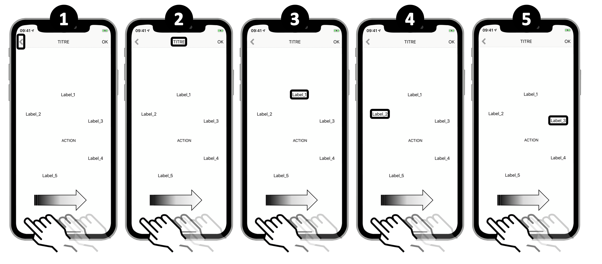 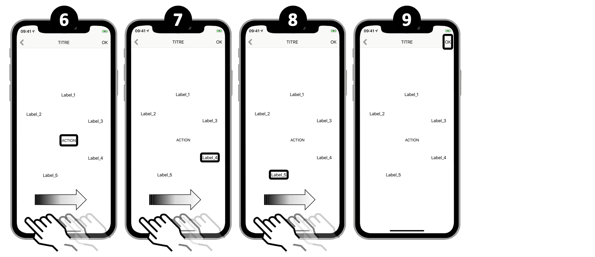
Vocalisation synthétisée
- Le texte à fournir : se présente sous forme d'instance
AVSpeechUtterancecomprenant une propriétévoicetypéeAVSpeechSynthesisVoice. - Le synthétiseur : instance
AVSpeechSynthesizerqui se charge de traiter le texte à fournir en assurant un contrôle d'événements grâce au protocoleAVSpeechSynthesizerDelegate.
AVSpeechUtterance, il est primordial de conserver l'instance AVSpeechSynthesizer jusqu'à la fin de l'ensemble de la vocalisation.
L'exemple suivant va permettre de définir le débit vocal, la hauteur tonale ainsi que le volume de la voix pour chaque type de texte passé au synthétiseur vocal tout en permettant aussi de :
- Mettre en avant le mot vocalisé grâce au protocole
AVSpeechSynthesizerDelegate. - Réaliser une pause et repartir de l'endroit d'où l'on vient avec des méthodes d'instance
AVSpeechSynthesizer.
@interface SpeechSynthesis() {
NSMutableArray * playerQueue;
AVSpeechSynthesizer * synthesizer;
__weak IBOutlet UILabel * textLabel;
}
@end
NS_ASSUME_NONNULL_BEGIN
@implementation SpeechSynthesis
- (void)viewDidLoad {
[super viewDidLoad];
playerQueue = [[NSMutableArray alloc] init];
synthesizer = [[AVSpeechSynthesizer alloc] init];
}
- (void)viewDidAppear:(BOOL)animated {
[super viewDidAppear:animated];
for (int i = 1 ; i < 11 ; i++) {
NSString * stringNbPrefix = @"phrase numéro ";
NSString * stringNbSuffix = @" de la voix synthétisée.";
NSString * stringNb = [NSString stringWithFormat:@"%@%i%@", stringNbPrefix, i, stringNbSuffix];
AVSpeechUtterance * utterance = [[AVSpeechUtterance alloc] initWithString:stringNb];
utterance.rate = AVSpeechUtteranceDefaultSpeechRate; //débit vocal
utterance.pitchMultiplier = 1.0; //hauteur tonale
utterance.volume = 1.0; //volume de la voix
[playerQueue addObject:utterance];
}
synthesizer.delegate = self;
for (AVSpeechUtterance * utterance in playerQueue) {
[synthesizer speakUtterance:utterance];
}
}
//Méthode du protocole AVSpeechSynthesizerDelegate pour déterminer visuellement le mot vocalisé.
- (void)speechSynthesizer:(AVSpeechSynthesizer *)synthesizer
willSpeakRangeOfSpeechString:(NSRange)characterRange
utterance:(AVSpeechUtterance *)utterance {
NSMutableAttributedString * attributedString = [[NSMutableAttributedString alloc] initWithString:utterance.speechString];
[attributedString addAttribute:NSFontAttributeName
value:[UIFont systemFontOfSize:19.0]
range:characterRange];
NSAttributedString * subString = [attributedString attributedSubstringFromRange:characterRange];
textLabel.attributedText = attributedString;
NSString * output = [NSString stringWithFormat:@"%@%@", @"mot : ", subString.string];
NSLog(@"%@", output);
}
- (IBAction)pauseButton:(UIButton *)sender {
if (synthesizer.isSpeaking == TRUE) {
if ([synthesizer pauseSpeakingAtBoundary:AVSpeechBoundaryImmediate] == TRUE) {
NSLog(@"PAUSE");
} else {
NSLog(@"P.R.O.B.L.È.M.E. avec la PAUSE.");
}
}
}
- (IBAction)resumeButton:(UIButton *)sender {
if (synthesizer.isPaused == TRUE) {
if ([synthesizer continueSpeaking] == TRUE) {
NSLog(@"REPRISE");
} else {
NSLog(@"P.R.O.B.L.È.M.E. avec la REPRISE.");
}
}
}
@end
class SpeechSynthesis: UIViewController, AVSpeechSynthesizerDelegate {
@IBOutlet weak var textLabel: UILabel!
var synthesizer = AVSpeechSynthesizer()
var playQueue = [AVSpeechUtterance]()
override func viewDidAppear(_ animated: Bool) {
super.viewDidAppear(animated)
for i in 1...10 {
let stringNb = "phrase numéro " + String(i) + " de la voix synthétisée."
let utterance = AVSpeechUtterance(string: stringNb)
utterance.rate = AVSpeechUtteranceDefaultSpeechRate //débit vocal
utterance.pitchMultiplier = 1.0 //hauteur tonale
utterance.volume = 1.0 //volume de la voix
playQueue.append(utterance)
}
synthesizer.delegate = self
for utterance in playQueue {
synthesizer.speak(utterance)
}
}
//Méthode du protocole AVSpeechSynthesizerDelegate pour déterminer visuellement le mot vocalisé.
func speechSynthesizer(_ synthesizer: AVSpeechSynthesizer,
willSpeakRangeOfSpeechString characterRange: NSRange,
utterance: AVSpeechUtterance) {
let attributedString = NSMutableAttributedString(string: utterance.speechString)
attributedString.addAttribute(.font,
value: UIFont.boldSystemFont(ofSize: 19),
range: characterRange)
textLabel.attributedText = attributedString
let subString = attributedString.attributedSubstring(from: characterRange)
print("mot : \(subString.string)")
}
@IBAction func pauseAction(_ sender: UIButton) {
if (synthesizer.isSpeaking == true) {
if (synthesizer.pauseSpeaking(at: .immediate) == true) {
print("PAUSE")
} else {
print("P.R.O.B.L.È.M.E. avec la PAUSE.")
}
}
}
@IBAction func resumeAction(_ sender: UIButton) {
if (synthesizer.isPaused == true) {
if (synthesizer.continueSpeaking() == true) {
print("REPRISE")
} else {
print("P.R.O.B.L.È.M.E. avec la REPRISE.")
}
}
}
}
NSMutableAttributedString * attrStr = [[NSMutableAttributedString alloc] initWithString:@"blablabla"
attributes:@{AVSpeechSynthesisIPANotationAttribute:@"mɔ̃.daj.fɔ.nə.fɔ̃.ksjɔ.nə.paʀ.fɛ.tə.ˈmɑ̃"}];
AVSpeechUtterance * utterance = [[AVSpeechUtterance alloc] initWithAttributedString:attrStr];
AVSpeechSynthesizer * synthesizer = [[AVSpeechSynthesizer alloc] init];
[synthesizer speakUtterance:utterance];
let pronunciationKey = NSAttributedString.Key(rawValue: AVSpeechSynthesisIPANotationAttribute)
let attrStr = NSMutableAttributedString(string: "blablabla",
attributes: [pronunciationKey: "mɔ̃.daj.fɔ.nə.fɔ̃.ksjɔ.nə.paʀ.fɛ.tə.ˈmɑ̃"])
let utterance = AVSpeechUtterance(attributedString: attrStr)
let synthesizer = AVSpeechSynthesizer()
synthesizer.speak(utterance)

Une fois le menu Prononciations activé...
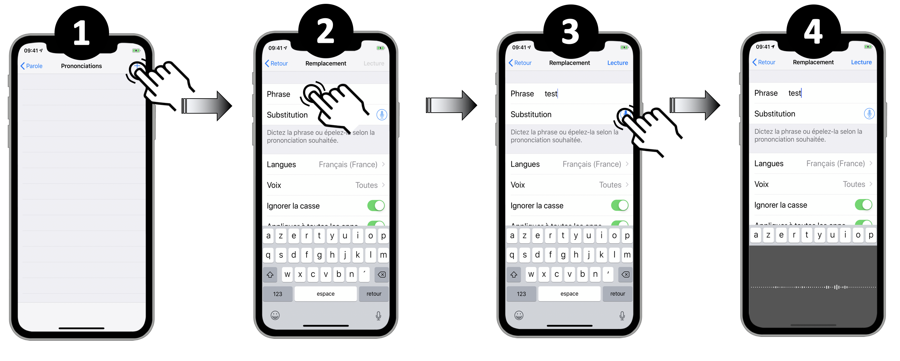
- Sélectionner l'icône '+' pour ajouter une nouvelle phonétique.
- Donner un nom à la nouvelle entrée de façon à la retrouver plus facilement ultérieurement.
- Taper sur l'icône micro.
- Vocaliser la phrase ou le mot souhaité.
- Écouter les différentes propositions faites par le système.
- Valider le choix à l'aide du bouton 'OK' ou annuler pour recommencer l'opération.
- Sélectionner le bouton de retour pour valider la nouvelle phonétique créée.
- Retrouver l'ensemble des éléments ainsi générés sur la page
Prononciations.
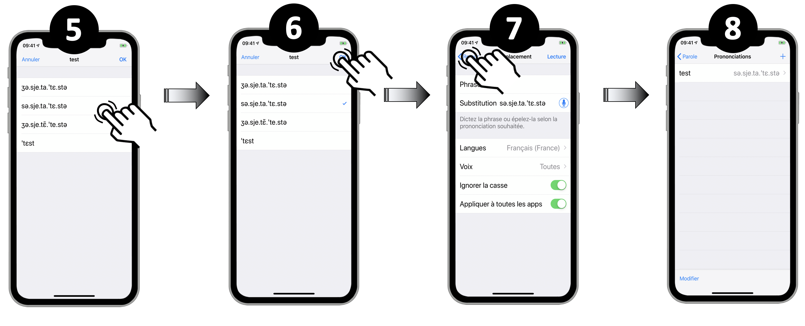
Une des possibilités pour copier cette expression dans le code est de passer par l'application locale Notes dans laquelle on copiera la phonétique pour la synchroniser avec l'application iCloud Notes d'où on pourra aisément transférer l'information désirée au sein de Xcode.
L'ensemble des fonctionnalités proposées par le synthétiseur vocal sont présentées dans une vidéo WWDC (Utiliser une voix synthétisée avec AVSpeechSynthesizer) parfaitement résumée dans la partie WWDC de ce site.
Retour haptique
NS_ASSUME_NONNULL_BEGIN
@implementation HapticFeedback
int i = 0;
- (IBAction)myButton:(UIButton *)sender {
i += 1;
switch (i) {
case 1: {
UINotificationFeedbackGenerator * generator = [[UINotificationFeedbackGenerator alloc] init];
[generator notificationOccurred:UINotificationFeedbackTypeError];
break;
}
case 2: {
UINotificationFeedbackGenerator * generator = [[UINotificationFeedbackGenerator alloc] init];
[generator notificationOccurred:UINotificationFeedbackTypeSuccess];
break;
}
case 3: {
UINotificationFeedbackGenerator * generator = [[UINotificationFeedbackGenerator alloc] init];
[generator notificationOccurred:UINotificationFeedbackTypeWarning];
break;
}
case 4: {
UIImpactFeedbackGenerator * generator = [[UIImpactFeedbackGenerator alloc] initWithStyle:UIImpactFeedbackStyleLight];
[generator impactOccurred];
break;
}
case 5: {
UIImpactFeedbackGenerator * generator = [[UIImpactFeedbackGenerator alloc] initWithStyle:UIImpactFeedbackStyleMedium];
[generator impactOccurred];
break;
}
case 6: {
UIImpactFeedbackGenerator * generator = [[UIImpactFeedbackGenerator alloc] initWithStyle:UIImpactFeedbackStyleHeavy];
[generator impactOccurred];
break;
}
case 7: {
UIImpactFeedbackGenerator * generator = [[UIImpactFeedbackGenerator alloc] initWithStyle:UIImpactFeedbackStyleSoft];
[generator impactOccurred];
break;
}
case 8: {
UIImpactFeedbackGenerator * generator = [[UIImpactFeedbackGenerator alloc] initWithStyle:UIImpactFeedbackStyleRigid];
[generator impactOccurred];
break;
}
default: {
i = 0;
UISelectionFeedbackGenerator * generator = [[UISelectionFeedbackGenerator alloc] init];
[generator selectionChanged];
break;
}
}
}
@end
NS_ASSUME_NONNULL_END
class HapticViewController: UIViewController {
var i = 0
@IBAction func tapButton(_ sender: UIButton) {
i += 1
switch i {
case 1:
let generator = UINotificationFeedbackGenerator()
generator.notificationOccurred(.error)
case 2:
let generator = UINotificationFeedbackGenerator()
generator.notificationOccurred(.success)
case 3:
let generator = UINotificationFeedbackGenerator()
generator.notificationOccurred(.warning)
case 4:
let generator = UIImpactFeedbackGenerator(style: .light)
generator.impactOccurred()
case 5:
let generator = UIImpactFeedbackGenerator(style: .medium)
generator.impactOccurred()
case 6:
let generator = UIImpactFeedbackGenerator(style: .heavy)
generator.impactOccurred()
case 7:
let generator = UIImpactFeedbackGenerator(style: .soft)
generator.impactOccurred()
case 8:
let generator = UIImpactFeedbackGenerator(style: .rigid)
generator.impactOccurred()
default:
let generator = UISelectionFeedbackGenerator()
generator.selectionChanged()
i = 0
}
}
}
Contrôle de sélection
 La sélection des éléments avec le mode élément fonctionne globalement bien quand les éléments proposés sont natifs et que l'application n'est pas trop compliquée graphiquement.
Il peut très bien arriver que ce mode de sélection ne suive pas la logique souhaitée et ne propose pas les éléments dans l'ordre désiré.
La sélection des éléments avec le mode élément fonctionne globalement bien quand les éléments proposés sont natifs et que l'application n'est pas trop compliquée graphiquement.
Il peut très bien arriver que ce mode de sélection ne suive pas la logique souhaitée et ne propose pas les éléments dans l'ordre désiré.
 Afin de personnaliser la sélection de ces éléments, on souhaite :
Afin de personnaliser la sélection de ces éléments, on souhaite :
- Créer 2 groupes {Test_1 + Test_2 ; Btn 5 + Btn 6} sélectionnables en mode élément.
- Avoir uniquement les éléments restants Btn 1 et Btn 2 accessibles séparément.
@interface ViewController ()
@property (weak, nonatomic) IBOutlet UIStackView * btnsParentView;
@property (weak, nonatomic) IBOutlet UIButton * btn1;
@property (weak, nonatomic) IBOutlet UIButton * btn2;
@property (weak, nonatomic) IBOutlet UIButton * btn5;
@property (weak, nonatomic) IBOutlet UIButton * btn6;
@end
@implementation ViewController
- (void)viewDidAppear:(BOOL)animated {
[super viewDidAppear:animated];
//Création du premier groupe 'testWrap' en COMBINANT les boutons 'Test_1' et 'Test_2'.
UIButton * testOneButton = [self.view viewWithTag:1];
UIButton * testTwoButton = [self.view viewWithTag:2];
CGRect testWrapFrame = CGRectUnion(testOneButton.frame, testTwoButton.frame);
UIAccessibilityElement * testWrap = [[UIAccessibilityElement alloc]initWithAccessibilityContainer:self.view];
testWrap.isAccessibilityElement = false;
testWrap.accessibilityFrame = testWrapFrame;
testWrap.accessibilityNavigationStyle = UIAccessibilityNavigationStyleCombined; //Property specifique au contrôle de sélection.
testWrap.accessibilityElements = @[testOneButton, testTwoButton];
//Création du second groupe 'secondGroup' en SÉPARANT les boutons 1 et 2.
CGRect secondGroupRect = CGRectUnion(_btn1.frame, _btn2.frame);
CGRect secondGroupFrame = [_btnsParentView convertRect:secondGroupRect
toView:self.view];
UIAccessibilityElement * secondGroup = [[UIAccessibilityElement alloc]initWithAccessibilityContainer:_btnsParentView];
secondGroup.isAccessibilityElement = false;
secondGroup.accessibilityFrame = secondGroupFrame;
secondGroup.accessibilityNavigationStyle = UIAccessibilityNavigationStyleSeparate;
secondGroup.accessibilityElements = @[_btn1, _btn2];
//Création du troisième groupe 'thirdGroup' en COMBINANT les boutons 5 et 6.
CGRect thirdGroupRect = CGRectUnion(_btn1.frame, _btn2.frame);
CGRect thirdGroupFrame = [_btnsParentView convertRect:thirdGroupRect
toView:self.view];
UIAccessibilityElement * thirdGroup = [[UIAccessibilityElement alloc]initWithAccessibilityContainer:_btnsParentView];
thirdGroup.isAccessibilityElement = false;
thirdGroup.accessibilityFrame = thirdGroupFrame;
thirdGroup.accessibilityNavigationStyle = UIAccessibilityNavigationStyleCombined;
thirdGroup.accessibilityElements = @[_btn5, _btn6];
self.view.accessibilityElements = @[testWrap,
secondGroup,
thirdGroup];
}
@end
class ViewController: UIViewController {
@IBOutlet weak var btnsParentView: UIStackView!
@IBOutlet weak var btn1: UIButton!
@IBOutlet weak var btn2: UIButton!
@IBOutlet weak var btn5: UIButton!
@IBOutlet weak var btn6: UIButton!
override func viewDidAppear(_ animated: Bool) {
super.viewDidAppear(animated)
//Création du premier groupe 'testWrap' en COMBINANT les boutons 'Test_1' et 'Test_2'.
let testOneButton = self.view.viewWithTag(1) as? UIButton
let testTwoButton = self.view.viewWithTag(2) as? UIButton
let testWrapFrame = testOneButton?.frame.union((testTwoButton?.frame)!)
let testWrap = UIAccessibilityElement(accessibilityContainer: self.view!)
testWrap.isAccessibilityElement = false
testWrap.accessibilityFrame = testWrapFrame!
testWrap.accessibilityNavigationStyle = .combined //Property specifique au contrôle de sélection.
testWrap.accessibilityElements = [testOneButton!, testTwoButton!]
//Création du second groupe 'secondGroup' en SÉPARANT les boutons 1 et 2.
let secondGroupRect = btn1.frame.union(btn2.frame)
let secondGroupFrame = btnsParentView.convert(secondGroupRect,
to: self.view)
let secondGroup = UIAccessibilityElement(accessibilityContainer: btnsParentView!)
secondGroup.isAccessibilityElement = false
secondGroup.accessibilityFrame = secondGroupFrame
secondGroup.accessibilityNavigationStyle = .separate
secondGroup.accessibilityElements = [btn1!, btn2!]
//Création du troisième groupe 'thirdGroup' en COMBINANT les boutons 5 et 6.
let thirdGroupRect = btn5.frame.union(btn6.frame)
let thirdGroupFrame = btnsParentView.convert(thirdGroupRect,
to: self.view)
let thirdGroup = UIAccessibilityElement(accessibilityContainer: btnsParentView!)
thirdGroup.isAccessibilityElement = false
thirdGroup.accessibilityFrame = thirdGroupFrame
thirdGroup.accessibilityNavigationStyle = .combined
thirdGroup.accessibilityElements = [btn5!, btn6!]
self.view.accessibilityElements = [testWrap,
secondGroup,
thirdGroup]
}
}
Le rendu de ce code est visualisable ci-dessous :
 Les groupes créés permettent d'accéder directement aux éléments qu'ils contiennent dès qu'ils sont activés.
Les groupes créés permettent d'accéder directement aux éléments qu'ils contiennent dès qu'ils sont activés.
Vocalisation du nom de l'application
 On passe alors d'un sigle incompréhensible avec une icône éventuellement plus parlante à une expression parfaitement compréhensible par un utilisateur pour lequel l'icône n'est peut-être pas du tout accessible.
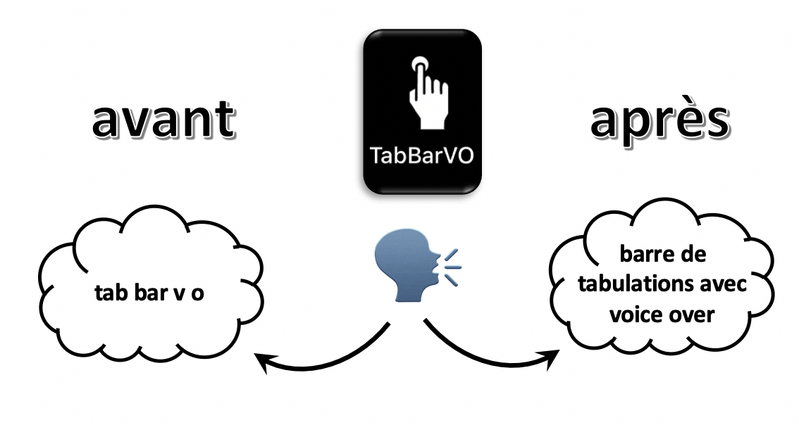
On passe alors d'un sigle incompréhensible avec une icône éventuellement plus parlante à une expression parfaitement compréhensible par un utilisateur pour lequel l'icône n'est peut-être pas du tout accessible.
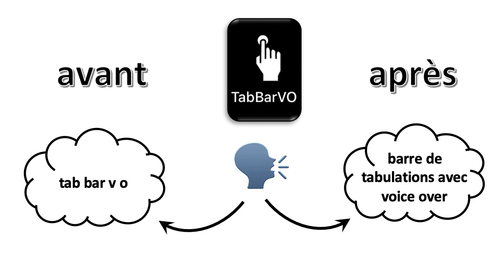
L'accessibilité avec Flutter
Si vous développez des applications avec Flutter, sachez qu'il est possible de produire des applications accessibles. Le framework offre notamment la gestion des lecteurs d'écran ainsi que l'agrandissement de la taille des textes.
Ressources
Pour obtenir des informations sur le sujet, commencez par la page officielle sur l'accessibilité qui ne reflète pour le moment pas toute l'étendue des possibilités.
Vous pouvez également visionner les vidéos suivantes qui permettront d'approfondir certaines notions :
- Building in accessibility with Flutter (Flutter Interact '19)
- Beyond Mobile: Material Design, Adaptable UIs, and Flutter (Google I/O'19)
- Ok Flutter elle est où la rampe d'accès - Cédric Creusot
Les critères incontournables sous Android pour la conception
Ce guide a pour objectif de présenter les différents critères d’accessibilité à respecter pour obtenir une application Android accessible. Chaque critère est présenté en expliquant pour qui ce critère est important, quand on peut le mettre en place, pourquoi il est important et la règle d’accessibilité qui en découle. Les critères sont explicités par des exemples de code et des captures d’exemples réels. Nous vous invitons à installer l’application mDAN pour obtenir des exemples fonctionnels avec TalkBack, le lecteur d’écran d’Android, et d’autres outils d’assistance. Pour plus d’information sur l’outil (comment l’activer, comment s’en servir…) nous vous invitons à vous référer à la section concernant TalkBack.
Pour le web, le niveau d’accessibilité demandé à toute interface HTML par le groupe Orange est le respect des critères du niveau AA des Web Content Accessibility Guidelines (WCAG) 2.1, sans point bloquant suite à un test utilisateur d’aide technique pour les principaux scénarios d’utilisation des fonctionnalités du site ou de l’application. Pour les applications mobiles natives, une transposition de ces critères et le respect des recommandations de la plateforme Android en terme d’accessibilité est demandé, voir ces recommandations. L’objet de ces pages étant d’en faire un « digest » sans s’y substituer.
Images
Cible : tout le monde (sur réseau à faible bande passante…) et en particulier les personnes déficientes visuelles.
Quand : lors de la conception et pendant le développement.
Description :
Les images sont très souvent utilisées pour transmettre de nombreuses informations. Comme le dit l’adage, une image vaut mille mots. Les non-voyants ne pouvant voir les images, il est important que celles-ci possèdent une alternative qui donne toutes les informations portées par l’image.
Dans le cas d’une image contenant du texte, l’alternative sera ledit texte. Dans le cas d’une image qui apporte des informations sous la forme d’un graphe, dessin ou autre, l’alternative devra contenir toutes les informations nécessaires présentes dans l’image.
Certaines images sont utilisées à des fins décoratives. Ces images ne nécessitent pas d’alternative. Par défaut sous Android, les images ne sont pas vocalisées par le lecteur d’écran TalkBack.
Les illustrations de l’application sont également considérées comme des images décoratives. La règle est donc la même : il n’y a pas d’alternative textuelle à ajouter.
Les icônes sont, a contrario, largement utilisées en tant que bouton pour des fonctionnalités diverses. Elles ont donc besoin d’alternatives textuelles pertinentes.
L’alternative d’une image est renseignée via l’attribut contentDescription (disponible pour tout élément héritant de View).
À vérifier :
- les images portant de l’information restituent cette information à travers leur alternative textuelle,
- les images décoratives n’ont pas d’alternative textuelle.
Objectif utilisateur :
Permettre l’accès à l’information incluse dans une image pour des utilisateurs qui n’y ont pas accès. Point bloquant : une image sans description textuelle est inexploitable par des personnes ayant des déficiences visuelles.
Exemples :

En décomposant l’image :
 pas de
pas de contentDescription
imageView.setContentDescription("paramètres")
imageView.setContentDescription("éditer le nom de l’image")
Couleurs
Cible : tout le monde (soleil sur l’écran, impression noir et blanc…) et en particulier les personnes malvoyantes, les seniors et les personnes avec des problèmes de vision (daltonisme, vision des contrastes, etc.)
Quand : dès la phase de conception et lors du développement.
Description :
Les couleurs jouent un rôle très important dans la transmission des informations. On associe certaines couleurs à des concepts ou à des sensations, mais il ne faut pas oublier qu’une partie de la population ne distingue pas correctement les couleurs.
À vérifier :
- La couleur ne doit jamais être le seul canal de transmission d’une information, d’indication d’une action, de sollicitation d’une réponse ou de distinction d’un élément.
- Le contraste entre les couleurs de texte et de fond doit aussi être suffisant (7:1 sur mobile, 4,5:1 pour les textes larges, à calculer avec Colour Constrast Analyzer par exemple). Du fait des contraintes des mobiles (écran, luminosité,…) un niveau AAA est demandé.
Objectif utilisateur :
Faciliter la lecture à tous les utilisateurs, déficients visuels ou personnes dans un environnement lumineux défavorable (en mobilité).
Permettre aux utilisateurs ne distinguant pas les couleurs (daltoniens, déficients visuels, déficients auditifs, utilisateurs de mobile en luminosité extérieure… ) d’accéder tout de même à l’information par d’autres moyens.
Outil : L’application Colour Constrast Analyzer permet de mesurer rapidement des niveaux de contraste de couleurs (gratuit pour Mac et Windows).
L’application AccessibilityScanner permet de tester directement vos applications sur certains critères d’accessibilité et notamment les couleurs. Disponible à partir d’Android 6.
Exemple de contraste non valide :
Le texte "film | 20h40 …" ne présente pas un contraste suffisant. Celui-ci ne sera pas lisible par tous les utilisateurs.

Exemple de passage d’information par la couleur valide et non valide :

Alternative textuelle
Cible : tout le monde et en particulier les personnes déficientes visuelles.
Quand : dès la conception, à la rédaction du contenu et pendant le développement.
Description :
Les alternatives textuelles sont au cœur de l’accessibilité sur mobile. Grâce à elles, un utilisateur non-voyant peut utiliser une application sans perte d’information.
Tout comme pour les images, il est important de renseigner une alternative textuelle lorsque l’information n’est pas disponible pour les personnes malvoyantes/non-voyantes. C’est le cas des composants fournissant de l’information par la couleur, la forme, la position, le son… Sur mobile, tous les composants peuvent recevoir une alternative textuelle, il est donc possible d’enrichir la vocalisation native d’un élément, y compris celle d’un simple texte.
La place sur mobile étant réduite, on utilise bien souvent des abréviations pour les textes. Mais cependant, cela pose un problème aux utilisateurs de synthèse vocale qui restituent les abréviations telles quelles. Pour corriger ces vocalisations, il suffit de placer une alternative textuelle sur le texte. Cette alternative contient le texte non abrégé. À noter que TalkBack sait reconnaître quelques abréviations courantes. Par exemple, « etc. » et « Dr. » sont bien vocalisées « et cetera » et « Docteur ».
Certaines images sont régulièrement associées à du texte pour donner une information. C’est le cas notamment des « messages non lus » où une infobulle donne le nombre de messages à lire et où une image donne l’information « message ». Dans ce cas, la solution consiste à placer une alternative textuelle sur le texte qui donne toutes les informations nécessaires. Par exemple : « 3 messages non lus ». On peut également placer cette alternative sur l’image, mais dans ce cas, il faut penser à rendre le texte « invisible » pour le lecteur d’écran.
L’alternative textuelle d’un élément est renseignée via l’attribut contentDescription (disponible pour tout élément héritant de View). Pour les boutons présents dans l’ActionBar (ou ToolBar), c’est l’attribut title qu’il faut renseigner.
Le texte ou son alternative est vocalisé automatiquement avec des informations sur le type de composant (bouton, case à cocher…), de son état éventuel (coché décoché, sélectionné), s’il est utilisable (désactivé). Pour plus d’informations techniques sur ces attributs, nous vous conseillons de lire la section des alternatives textuelles dans le guide développeur.
À vérifier :
- Les éléments de l’application qui nécessitent une alternative en possèdent bien une,
- Les alternatives textuelles de l’application sont explicites et compréhensibles.
Objectif utilisateur :
Permettre aux utilisateurs du lecteur d’écran d’accéder à toutes les informations véhiculées par l’application.
Exemple :
Ci-dessous, un exemple fréquent d’une icône qu’on couple avec du texte (infobulle) pour ajouter de l’information. Dans notre cas, l’icône « mail » couplée à l’infobulle de valeur « 3 » nous fait comprendre que nous avons « 3 mails non lus ». Si aucune alternative textuelle n’est ajoutée, 2 vocalisations seront lues « bouton sans libellé » et « 3 ». On comprend bien ici l’importance d’ajouter des alternatives textuelles.
containerView.setContentDescription("3 mails non lus, bouton"); //On ajoute l’alternative complète (construite dynamiquement au préalable) sur le conteneur
containerView.setImportantForAccessibility(View.IMPORTANT_FOR_ACCESSIBILITY_YES); //Le conteneur est une View, non visible par l’API d’accessibilité par défaut. On le rend visible.
mailImageView.setImportantForAccessibility(View.IMPORTANT_FOR_ACCESSIBILITY_NO); //On masque le bouton-icône pour éviter une redondance d’information
infobulleTextView.setImportantForAccessibility(View.IMPORTANT_FOR_ACCESSIBILITY_NO); //On masque le texte pour éviter une redondance d’information
containerView.contentDescription = "3 mails non lus, bouton" //On ajoute l’alternative complète (construite dynamiquement au préalable) sur le conteneur
containerView.importantForAccessibility = View.IMPORTANT_FOR_ACCESSIBILITY_YES //Le conteneur est une View, non visible par l’API d’accessibilité par défaut. On le rend visible.
mailImageView.importantForAccessibility = View.IMPORTANT_FOR_ACCESSIBILITY_NO //On masque le bouton-icône pour éviter une redondance d’information
infobulleTextView.importantForAccessibility = View.IMPORTANT_FOR_ACCESSIBILITY_NO) //On masque le texte pour éviter une redondance d’information
Titre et en-tête
Cible : tout le monde
Quand : dès la conception et à la rédaction du contenu.
Description :
Le titre de la page est le premier élément qui est vocalisé ou vu sur un écran mobile. Il facilite la navigation pour tout le monde : à tout moment, on sait où on se trouve dans l’application.
Une erreur commune est de mettre un titre unique pour toutes les pages d’une application (ou même pas de titre du tout).
À vérifier :
- Chaque écran doit avoir un titre qui lui est propre ou qui permet de se repérer dans la navigation (couplé avec le bouton de retour).
Objectif utilisateur :
Permettre aux utilisateurs d’identifier le sujet d’une page, de se repérer et de se faire une idée précise du contenu de la page sans avoir à le lire.
Exemple non valide :

État des éléments
Cible : tout le monde et en particulier les personnes déficientes visuelles.
Quand : lors du développement.
Description :
Si un élément ne restitue pas à la vocalisation son statut, sa nature ou son état, l’utilisateur de TalkBack est dans l’impossibilité de comprendre ce qui se passe à l’écran. Ne pas préciser qu’une zone est dépliée ou que l’on se trouve face à un système d’onglets sont des exemples très fréquents.
Grand classique de ce problème : les onglets. Les différents types d’onglets proposés dans Android ne donnent pas toutes les informations sur leur nature et sur leur état. Il est donc à la charge du développeur de donner ces informations à l’utilisateur via les attributs d’accessibilité correspondants (contentDescription). En l’occurrence, une bonne alternative pour le titre d’un onglet peut être : "sélectionné, titre de l’onglet, onglet 1 sur 3"
Autre classique d’élément qui ne restitue pas par défaut son état : les zones dépliables. Encore une fois, c’est grâce à l’alternative textuelle du titre de la zone dépliable que l’on peut donner à l’utilisateur de TalkBack le statut de celle-ci.
Pour renseigner ce genre d’information, il faut utiliser l’attribut contentDescription (disponible pour tout élément héritant de View).
À vérifier :
- Tout élément dont le statut est modifié durant l’utilisation de l’application doit restituer son état à travers son alternative textuelle. Par exemple, un élément qui peut être sélectionné/non sélectionné doit restituer son état à travers une alternative textuelle.
Objectif utilisateur :
Permettre aux utilisateurs de lecteurs d’écran d’avoir accès aux informations des composants, leur état, leur nature afin qu’ils puissent les utiliser sans difficultés.
Exemple :

Pour obtenir un exemple de code qui corrige ce problème, nous vous invitons à vous référer à la page du guide développeur correspondante.
Composant standard
Cible : tout le monde.
Quand : en phase de sélection des briques logicielles et lors des développements.
Description :
L’accessibilité est prise en compte dans les composants natifs (la plupart du temps). De plus, l’utilisation de composants standards permet à l’utilisateur de se retrouver dans une situation et un comportement habituels. La navigation dans une interface standard est donc plus confortable.
Utiliser au maximum les composants natifs en modifiant leur apparence. Si aucun composant standard ne permet de répondre au besoin, créer un composant dédié basé sur un composant standard en veillant à conserver la cohérence de navigation et l’accessibilité.
Objectif utilisateur :
Permet à tous les utilisateurs d’interagir plus intuitivement avec l’interface.
Objectif technique :
Améliore globalement la maintenabilité. Réduit les temps de développement.
Zone de clic
Cible : pour tous et en particulier les personnes avec des déficiences motrices
Quand : dès la phase de conception et lors du développement.
Description :
Une taille insuffisante pour la zone d’action d’un composant peut empêcher certains utilisateurs de profiter pleinement de l’application. Cela peut engendrer des frustrations qui peuvent conduire à la désinstallation de l’application. Chaque élément cliquable de l’application doit donner à l’utilisateur une taille suffisante pour sa zone d’action.
À vérifier :
- Google définit pour son système une taille de zone de clic minimum de 48dp (en hauteur ET largeur, avec 8 dp de marge autour de l’élément).
Objectif utilisateur :
Améliorer le confort de navigation au toucher (touch).
Outil :
L’application AccessibilityScanner permet de tester directement vos applications sur certains critères d’accessibilité et notamment la taille des zones de clic. Disponible à partir d’Android 6.
Exemple valide :
Dans les exemples ci-dessous, le cadre noir correspond à la taille de la zone interactive.
Exemple non-valide :

Élément fantôme
Cible : les personnes déficientes visuelles.
Quand : lors du développement.
Description :
Bien qu’invisibles à l’écran, certains éléments peuvent être lus par le lecteur d’écran (éléments positionnés en dehors de la zone visible ou masqués par d’autres éléments). La superposition d’écrans est quelque chose de courant sur mobile, mais cela engendre des problèmes d’accessibilité très lourds à corriger si elle n’est pas faite correctement dès le départ. Un lecteur d’écran tel que TalkBack est capable de lire les informations d’une vue qui est placée « sous » une autre. Mais si l’utilisateur n’est plus capable d’interagir avec cette vue, cela perturbe totalement sa navigation et celle-ci devient vite impossible.
Grand classique du problème : les fragments. Un fragment est un composant qu’on peut facilement superposer par-dessus un autre sous Android. Une mauvaise utilisation des fragments peut aboutir à une navigation impossible avec le lecteur d’écran.
Consulter l’article sur l’utilisation des fragments pour plus d’informations.
À vérifier :
- TalkBack ne doit pas vocaliser d’éléments indésirables appartenant à un autre écran que celui en cours de consultation.
Objectif utilisateur :
Permettre la navigation dans l’application sans avoir d’élément perturbant, non utilisable, sur la vue courante.
Exemple non-valide :
Dans l’exemple ci-dessous, le cadre vert correspond au focus de TalkBack. Ce dernier vocalise (la vocalisation est affichée en bas de l’écran sur la capture) un contenu se trouvant derrière la vue active.
Taille des textes
Cible : tout le monde et en particulier les personnes déficientes visuelles.
Quand : lors de la conception et lors du développement.
Description :
L’utilisateur a la possibilité d’augmenter la taille du texte via une option d’accessibilité. Afin que l’application réagisse correctement à cette option, il est nécessaire d’utiliser des tailles de texte dynamiques qui s’ajusteront en fonction des paramètres utilisateurs. Un texte trop petit sera facilement ignoré par certains utilisateurs malvoyants.
L’application devra mettre en œuvre des tailles de textes dynamiques, s’assurer de la bonne réactivité des zones d’affichage au grossissement de texte (conteneurs qui s’adaptent à la taille de leur contenu). Il faut aussi assurer une taille minimum pour les textes (14sp).
Afin de permettre à l’option « grand caractère » d’interagir correctement avec l’application, plusieurs points sont à respecter durant les développements :
- Utiliser une taille de police dynamique : le « sp ». Cette unité, spécifique à Android, permet d’obtenir une taille de police en fonction de la densité de pixel de l’écran. Il est plus que recommandé de l’utiliser pour les textes, ne serait-ce que pour obtenir un design uniforme sur tous les types de devices Android.
- Gérer les débordements de contenu : une erreur courante est d’utiliser une taille de texte dynamique (« sp » donc) mais de ne pas faire attention au conteneur. Si le texte grossit, le conteneur doit en faire autant pour ne pas qu’il y ait de débordement. On peut parfaitement jouer avec le
min-heightet leheightdes conteneurs pour obtenir un résultat correct (leheightàwrap_contentet lemin-heightà la hauteur voulue par défaut).
À vérifier :
- L’application réagit correctement à l’option grand caractère,
- Les textes de l’application ont une taille minimum de 14sp.
Objectif utilisateur :
Permettre aux utilisateurs (malvoyants, en mobilité, seniors…) d’augmenter la taille du texte sans perte d’information pour accéder plus aisément au contenu.
Outil : L’application AccessibilityScanner permet de tester directement vos applications sur certains critères d’accessibilité et notamment la taille des textes. Disponible à partir d’Android 6.
Exemple :

Contrôle de contenu
Cible : tout le monde et en particulier les personnes déficientes visuelles et cognitives.
Quand : lors de la conception et lors du développement.
Description :
Sur mobile, les lecteurs d’écran essayent de transmettre au maximum à l’utilisateur les changements de contexte. Dans certains cas, cela peut donner des vocalisations permanentes, et donc inaudibles, ou empêcher toute action de l’utilisateur.
L’utilisateur doit rester maître du contenu à tout instant. C’est particulièrement vrai avec le contenu interactif. Il faut donc éviter par exemple qu’une vidéo ne se lance directement en plein écran, qu’une vidéo ne se lance directement sans une action au préalable de l’utilisateur, qu’un carrousel ne défile de manière automatique, etc.
À vérifier :
- Les contenus interactifs peuvent être maîtrisés par l’utilisateur (présence d’un bouton pause sur carrousel automatique, bouton accessible pour sortir du mode plein-écran etc)
Objectif utilisateur :
Permettre aux utilisateurs de rester maîtres de l’application. Permettre à l’utilisateur de lecteur d’écran d’éviter une pollution sonore qui peut nuire à sa navigation.
Objectif technique :
Améliorer le référencement naturel.
Changement de contenu
Cible : tout le monde et en particulier les personnes déficientes visuelles.
Quand : lors de la conception et lors du développement.
Description :
Lorsque du contenu est modifié dynamiquement à la suite d’une action de l’utilisateur, il faut le notifier à la synthèse vocale. Sans retour vocal, l’utilisateur ne sait pas qu’une action a été déclenchée.
Sur une page, si du contenu est modifié dynamiquement suite à une action utilisateur, il est important que le lecteur d’écran soit notifié afin qu’il déclenche une vocalisation. Par exemple, les listes qui se rafraîchissent, ou un compteur de temps.
Une simple vocalisation peut suffire à avertir l’utilisateur. Il est très facile de déclencher des vocalisations avec TalkBack. Attention : nous parlons de la vocalisation si TalkBack est activé et non pas de TTS (Text To Speech) qui peut fonctionner indépendamment du statut de TalkBack. Il suffit de faire appel à la méthode announceForAccessibility en lui passant en paramètre l’id de la chaîne de caractère à vocaliser. À noter : la méthode announceForAccessibility est disponible sur tout élément qui hérite de View et se fait dans la langue du système.
Il est également possible de spécifier à une vue qu’elle est une région live, c’est-à-dire que son contenu est susceptible d’être modifié dynamiquement et qu’elle doit dans ce cas prévenir l’API d’accessibilité. Cela aura pour conséquence de générer des vocalisations avec TalkBack par exemple. Un exemple type d’utilisation : sur un formulaire, si l’utilisateur fait une erreur et qu’un message d’erreur apparaît, la vue contenant le message doit être définie comme une région live. Il faut passer par la méthode setAccessibilityLiveRegion qui prend en paramètre un mode pour la région live. Il existe 3 modes :
ACCESSIBILITY_LIVE_REGION_NONE: cette vue n’est pas une région live. C’est la valeur par défaut de la plupart des vues.ACCESSIBILITY_LIVE_REGION_POLITE: en cas de changement dans la vue, des vocalisations sont effectuées sur les changements. Ces vocalisations sont « polies » ; elles sont moins prioritaires que les vocalisations système par exemple.ACCESSIBILITY_LIVE_REGION_ASSERTIVE: en cas de changement dans la vue, des vocalisations seront effectuées sur les changements. Ces vocalisations sont « rude » ; elles sont prioritaires et immédiatement vocalisées. À noter, la méthodesetAccessibilityLiveRegionest disponible sur tout élément qui hérite deView.
À vérifier :
- Avec un lecteur d’écran, s’assurer que les modifications dynamiques dans les pages sont bien vocalisées.
Objectif utilisateur :
Donner accès aux modifications des informations de l’application aux utilisateurs de lecteurs d’écran.
Scroll horizontal
Cible : tout le monde et en particulier les personnes déficientes visuelles.
Quand : dès la phase de conception et lors du développement.
Description :
Un scroll horizontal peut être très difficile à détecter si aucun visuel n’aide l’utilisateur à comprendre qu’il existe plusieurs pages.
Ne pas hésiter à afficher un élément pour indiquer un scroll horizontal (des « points » par exemple). Quand cela est nécessaire, ajouter également des boutons « suivant » et « précédent ».
À vérifier :
- Les scrolls horizontaux sont indiqués visuellement
- Avec le lecteur d’écran activé, un mécanisme permet de passer de page en page lorsqu’un scroll horizontal est présent.
Objectif utilisateur :
Donner une indication visuelle aux utilisateurs lors de la présence de scrolls horizontaux. Permettre aux utilisateurs de lecteur d’écran d’utiliser les scrolls horizontaux.


Formulaire
Cible : tout le monde et en particulier les personnes déficientes visuelles.
Quand : lors de la conception et lors du développement.
Description :
Lier les champs de formulaires avec leurs labels apporte une vocalisation supplémentaire qui permet à l’utilisateur de comprendre quoi remplir lorsqu’il arrive sur un champ de formulaire.
Il existe 2 grandes techniques pour réaliser cette liaison :
labelFor: permet de spécifier à une vue qu’elle est le label d’une autre vue. Cette méthode prend en paramètre l’idde la vue que l’on labellise. On peut utiliser cette méthode avec quasiment tout type de champ de formulaire. Utilisable depuis le xmlandroid:labelForou le codesetLabelFor.hint: permet d’ajouter un texte d’exemple quand le champ de texte est vide. Cette méthode ne marche que pour lesTextView. Prend en paramètre l’idd’une chaîne de caractère. Utilisable depuis le xmlandroid:hintou le codesetHint.
À vérifier :
- les champs de formulaire doivent être liés à un label si celui-ci est visible, sinon un
hintest présent.
Objectif utilisateur :
Améliorer la navigation et la compréhension globale de la page, car les champs de formulaires décrivant le contenu attendu facilitent leur saisie par les utilisateurs déficients visuels.
Ordre de lecture
Cible : les personnes déficientes visuelles.
Quand : lors du développement.
Description :
L’ordre de lecture permet à l’utilisateur de lecteur d’écran de se repérer dans la navigation et d’assurer une cohérence fonctionnelle. Il est donc important d’y faire attention.
Par défaut, l’ordre de lecture de la synthèse vocale prend en compte plusieurs paramètres : la lecture « logique » (en France), soit de gauche à droite et de haut en bas, et la lecture du xml (ordre de déclaration des éléments). Il existe cependant certain cas où le lecteur d’écran n’arrive pas à déterminer un ordre et dans ce cas, il utilise l’ordre de définition des éléments, ce qui peut amener des vocalisations incohérentes.
Il est tout à fait possible de redéfinir cet ordre de lecture avec deux attributs :
accessibilityTraversalAfter: prend uniden paramètre et permet de spécifier à la vue qu’elle doit être « vue » par l’accessibilité après la vue passée en paramètre.accessibilityTraversalBefore: prend uniden paramètre et permet de spécifier à la vue qu’elle doit être « vue » par l’accessibilité avant la vue passée en paramètre.
À noter : ces attributs peuvent être utilisés directement dans le xml mais également dans le code via les méthodes setAccessibilityTraversalAfter et setAccessibilityTraversalBefore. Ces méthodes sont disponibles pour tout élément qui hérite de View.
À vérifier :
- L’ordre de lecture (celui de TalkBack) est logique et cohérent.
Objectif utilisateur :
Assurer un ordre de lecture logique et cohérent aux utilisateurs de lecteurs d’écran pour leur assurer une complète compréhension du contenu.
Exemple :
Dans cet exemple, l’ordre de lecture par défaut dépend complètement de l’implémentation et de l’ordre de déclaration des éléments. Dans ce cas-ci : vol+, vol-, 1, 2, 3, 4, 5, 6, 7, 8, 9, p+, p-, 0. Un ordre de lecture plus cohérent serait 1, 2, 3, 4, 5, 6, 7, 8, 9, 0, vol+, vol-, p+, p-.

volupButton.setAccessibilityTraversalAfter(myView.findViewById(R.id.remote0).getId());
voldownButton.setAccessibilityTraversalAfter(myView.findViewById(R.id.volup).getId());
chaineplusButton.setAccessibilityTraversalAfter(myView.findViewById(R.id.voldown).getId());
chainemoinsButton.setAccessibilityTraversalAfter(myView.findViewById(R.id.chaineplus).getId());
[…]
volupButton.accessibilityTraversalAfter = remote0.id
voldownButton.accessibilityTraversalAfter = volup.id
chaineplusButton.accessibilityTraversalAfter = voldown.id
chainemoinsButton.accessibilityTraversalAfter = chaineplus.id
[…]
Navigation au focus
Cible : tout le monde et en particulier les personnes déficientes motrices qui utilisent un clavier pour naviguer.
Quand : lors de la conception et lors du développement.
Description :
La navigation au focus est très utile pour les personnes qui présentent des difficultés motrices ou cognitives. Cette navigation permet de passer d’élément interactif en élément interactif (élément sur lequel on peut effectuer une action). Elle correspond à la navigation que l’on peut faire avec un clavier Bluetooth lié à un smartphone.
Pour gérer la navigation au focus, il faut s’assurer de 3 choses :
- Permettre le focus sur les éléments interactifs : la navigation au focus ne concerne que les éléments interactifs. Si, par exemple, votre application possède des vues custom cliquables, il faut s’assurer que ces vues soient focusables en positionnant l’attribut
focusableàtrue. - Gérer l’affichage du focus : tout élément interactif peut recevoir le focus, il faut donc que le
state_focusedsoit défini et permette de distinguer d’un seul coup d’œil quel élément a le focus. - Gérer l’ordre du focus : à travers les options
nextFocusDown,nextFocusUp,nextFocusRightetnextFocusLeft, vous pouvez spécifier quelle vue doit prendre le focus selon l’utilisation des flèches tab, bas, haut, droit et gauche.
À noter : nextFocusDown, nextFocusUp, nextFocusRight, nextFocusLeft, focusable ainsi que d’autres options de gestion du focus sont accessibles directement dans le xml ou dans le code à travers les méthodes correspondantes.
Pour plus d’information sur la gestion du focus sous Android.
À vérifier :
- L’ordre de navigation au focus (clavier) est logique et cohérent.
- À la navigation au focus (clavier), il est possible de déterminer visuellement l’élément qui a le focus
Objectif utilisateur :
Permettre l’utilisation de l’application avec un clavier, dock tablette ou tout autre dispositif de navigation séquentielle.
Orientation de l’écran
Cible : tout le monde et en particulier les personnes avec des déficiences visuelles ou motrices.
Quand : lors de la conception et lors du développement.
Description : L’accès au contenu d’une application ne doit pas dépendre de l’orientation de l’écran (portrait et paysage), sauf si une orientation particulière est essentielle pour la compréhension ou l’utilisation du contenu (projection, tableau…).
À vérifier :
- L’utilisation de composants graphiques standard qui supportent les deux modes (fragments…), ou définir un
designspécifique à chaque orientation. - Que l’application n’est pas verrouillée dans un mode (portrait ou paysage).
Objectif utilisateur :
- Assurer une meilleure lisibilité du contenu pour les personnes qui utilisent le grossissement de caractères et passent du portrait au paysage en fonction de leur besoin.
- Assurer une meilleure lisibilité du contenu pour les écrans fixés sur support (lit d’hôpital, chaise roulante…).
Les critères de conception iOS
Ce guide a pour objectif de présenter les différents critères d’accessibilité à respecter pour obtenir une application iOS accessible. Chacun de ces critères est présenté en expliquant pour qui il est important, quand on peut le mettre en place, pourquoi il est important et la règle d’accessibilité qui en découle.
Images
Permettre l’accès à l’information incluse dans une image pour des utilisateurs qui n’y ont pas accès.
Le point bloquant est une image sans description textuelle qui est inexploitable par des personnes ayant des déficiences visuelles.
Cible : tout le monde et en particulier les personnes déficientes visuelles.
Quand : lors de la conception et pendant le développement.
accessibilityLabel (via le protocole UIAccessibility implémenté par tout élément standard dérivant de UIView).
En décomposant l’image, on obtient :
- pas d’
accessibilityLabel -
buttonView.accessibilityLabel = "example_image_edit_accessibilityLabel".localized -
buttonView.accessibilityLabel = "example_image_settings_accessibilityLabel".localized
Couleurs
Quand : dès la phase de conception et lors du développement.
 Ne pas mettre des polices en gras va demander un contraste des couleurs plus fort que dans le cas précédent.
Ne pas mettre des polices en gras va demander un contraste des couleurs plus fort que dans le cas précédent.
 Avec l’apparition du Dynamic Type permettant de grossir de façon conséquente la taille de police, le contraste des couleurs n’est pas nécessairement figé et doit s’adapter au grossissement souhaité.
Avec l’apparition du Dynamic Type permettant de grossir de façon conséquente la taille de police, le contraste des couleurs n’est pas nécessairement figé et doit s’adapter au grossissement souhaité.
 Il existe des cas où rajouter des motifs pour différencier les informations véhiculées uniquement par la couleur surcharge inutilement l'interface graphique si l'utilisateur n'en a pas besoin.
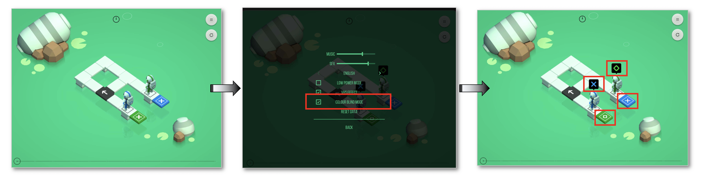
Dans ce cas, l'utilisation de l'option d'accessibilité différencier sans couleur (nouveauté iOS 13) va permettre ce type d'affichage uniquement à la demande de l'utilisateur.
Outil :
L’application Colour Contrast Analyzer permet de mesurer rapidement des niveaux de contraste de couleurs (gratuit pour mac et windows).
L'outil Accessibility Inspector dispose aussi d'une fonctionnalité Color Contrast Calculator depuis Xcode 11 qui permet d'obtenir les mêmes résultats.
Il existe des cas où rajouter des motifs pour différencier les informations véhiculées uniquement par la couleur surcharge inutilement l'interface graphique si l'utilisateur n'en a pas besoin.
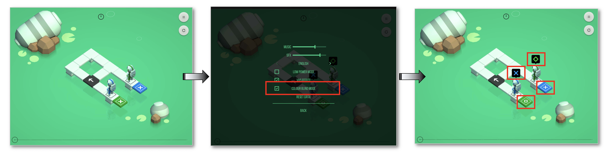
Dans ce cas, l'utilisation de l'option d'accessibilité différencier sans couleur (nouveauté iOS 13) va permettre ce type d'affichage uniquement à la demande de l'utilisateur.
Outil :
L’application Colour Contrast Analyzer permet de mesurer rapidement des niveaux de contraste de couleurs (gratuit pour mac et windows).
L'outil Accessibility Inspector dispose aussi d'une fonctionnalité Color Contrast Calculator depuis Xcode 11 qui permet d'obtenir les mêmes résultats.
Le texte « film | 20h40 … » ne présente pas un contraste suffisant : celui-ci ne sera pas lisible par tous les utilisateurs.
Passage d’information par la couleur valide et non valide :

- La couleur ne doit jamais être le seul canal de transmission d’une information, d’indication d’une action, de sollicitation d’une réponse ou de distinction d’un élément.
- Le contraste entre les couleurs de texte et de fond doit aussi être suffisant (à calculer avec Colour Contrast Analyzer ou avec la fonctionnalité Color Contrast Calculator de l'outil Accessibility Inspector sous Xcode 11).
- Avec l'arrivée du Mode Sombre en iOS 13, une attention toute particulière doit être portée sur les contrastes utilisés au sein des différents thèmes et pouvant être modifiés avec l'option d'accessibilité augmenter le contraste.
Alternative textuelle
Quand : dès la conception, à la rédaction du contenu et pendant le développement.
À noter que VoiceOver sait reconnaître quelques abréviations courantes : « etc. » est bien vocalisé « et cetera ».
Certaines images sont régulièrement associées à du texte pour donner une information.
C’est le cas notamment des « messages non lus » où une infobulle donne le nombre de messages à lire et où une image donne l’information « message ».
Dans ce cas, la solution consiste à placer une alternative textuelle sur le texte qui donne toutes les informations nécessaires.
Par exemple : « 3 messages non lus ».
On peut également placer cette alternative sur l’image, mais dans ce cas, il faut penser à rendre le texte « invisible » pour le lecteur d’écran.
L’alternative textuelle d’un élément est renseignée via les attributs accessibilityLabel, accessibilityHint, accessibilityValue et accessibilityTrait (via le protocole UIAccessibility implémenté par tout élément standard dérivant de UIView).
L’ordre de vocalisation est toujours le suivant : label, value, trait et hint.
Cet ordre ne peut pas être changé et la vocalisation est réalisée en une seule fois, à l’arrivée sur l’élément.
Pour plus d’informations techniques sur ces attributs, nous vous conseillons de lire la section des alternatives textuelles dans le guide développeur.
- Les éléments de l’application qui nécessitent une alternative en possède bien une.
- Les alternatives textuelles de l’application sont explicites et compréhensibles.
Titre et en-tête
Quand : dès la conception et à la rédaction du contenu.

- Chaque écran doit avoir un titre qui lui est propre ou qui permet de se repérer dans la navigation (couplé avec le bouton de retour).
- Les éléments identifiés visuellement comme des en-têtes doivent être déclarés à l’API d’accessibilité comme tels.
État des éléments
Quand : lors du développement.
accessibilityLabel et accessibilityTrait.
 Par exemple, un élément qui peut être sélectionné/non sélectionné doit restituer son état à travers une alternative textuelle.
Par exemple, un élément qui peut être sélectionné/non sélectionné doit restituer son état à travers une alternative textuelle.
Composant standard
Quand : en phase de sélection des briques logicielles et lors des développements.
Zone de clic
Quand : dès la phase de conception et lors du développement.
Exemple non-valide :
Elément fantôme
Quand : lors du développement.

Contrôle de contenu
Quand : lors de la conception et lors du développement.
Changement de contenu
Quand : lors du développement.
UIAccessibilityPostNotification avec en paramètre la notification permettant de déclencher une vocalisation UIAccessibilityAnnouncementNotification et la chaîne de caractère à vocaliser.
Il est également conseillé de notifier l’API d’accessibilité lorsqu’un changement de contexte survient.
Pour ce faire, il faut envoyer une notification de modification à l’API d’accessibilité via la méthode UIAccessibilityPostNotification.
Il existe plusieurs notifications de modification, mais les deux plus utiles sont :
UIAccessibilityLayoutChangedNotification: permet de spécifier à l’API d’accessibilité qu’une partie de la page a été modifiée.UIAccessibilityScreenChangedNotification: permet d’annoncer un changement global de la page.
Pour plus d’information technique sur ces méthodes, nous vous invitons à regarder la section correspondante dans le guide développeur pour iOS.
Scroll horizontal
Quand : dès la phase de conception et lors du développement.
UIPageControl).
Quand cela est nécessaire, ajouter également des boutons « suivant » et « précédent ».


- Les scrolls horizontaux sont indiqués visuellement
- Avec le lecteur d’écran activé, un mécanisme permet de passer de page en page lorsqu’un scroll horizontal est présent.
Formulaire
Quand : lors de la conception et lors du développement.
accessibilityLabel).
Ordre de lecture
Quand : lors du développement.
1, 2, 3, vol+, 4, 5, 6, p+, vol-, 7, 8, 9, p-, 0.
Un ordre de lecture plus cohérent serait 1, 2, 3, 4, 5, 6, 7, 8, 9, 0, vol+, vol-, p+, p-.
Langue
Quand : lors du développement.
accessibilityLanguage disponible via le protocole UIAccessibility (voir la partie développeur).
Orientation de l’écran
Quand : lors de la conception et lors du développement.
- Le cahier des charges
designparfaitement détaillé et comprenant l’ensemble des écrans à implémenter selon leur orientation. - La définition très précise de la façon dont les transitions entre les modes doivent être réalisées.
- La parfaite adaptation du contenu aux modes portrait et paysage par le biais d’une batterie de tests graphiques sur tous les mobiles compatibles avec la version iOS déployée (très important pour le grossissement de texte).
- Le paramétrage approprié dans l’éditeur de code.
Écran spécifique accessibilité
- Le lecteur d'écran est utilisé pour les personnes aveugles mais aussi par les personnes illétrées. Pour ces dernières, s'apercevoir qu'un écran d'application change en fonction de l'activation de cette fonctionnalité peut laisser croire que toutes les informations fournies initialement ne sont peut-être pas les mêmes que celles proposées en accessibilité, ce qui peut conduire à un sentiment discriminant.
- D'un point de vue pratique pour la maintenabilité de l'application, le fait de rajouter un écran qui ne sera utilisé que lorsqu'une option d'accessibilité est activée risque de rapidement l'oublier si des modifications ultérieures sont à apporter sur l'écran initial.
Options d'accessibilité
- Comprendre comment chacune de ces options peut impacter la conception et la réalisation d'une application.
- Tester chacune des options appropriées afin de s'assurer que son effet est bien pris en compte au sein de l'application proposée.
Cible : tout le monde.
Quand : lors de la conception et lors du développement.
- Augmenter le contraste.
- Activer l'AssistiveTouch.
- Mettre le texte en gras.
- Afficher les sous-titres.
- Modifier les couleurs en échelle de gris.
- Activer l'Accès Guidé.
- Inverser les couleurs.
- Passer l'audio en mono.
- Limiter les animations visuelles.
- Réduire le floutage et la transparence.
- Secouer pour annuler.
- Énoncer le contenu de l'écran.
- Énoncer la sélection.
- Activer le Contrôle de Sélection.
- Activer VoiceOver.
- Prévisualisation vidéo ⟹ nouveauté iOS 13
- Différencier sans couleur ⟹ nouveauté iOS 13
- Boutons avec I/O ⟹ nouveau dans iOS 13
- Augmenter le contraste (UIAccessibilityDarkerSystemColorsEnabled) : voir WWDC 2018 pour un descriptif de la fonctionnalité.
traitCollection.
- Activer l'AssistiveTouch (UIAccessibilityIsAssistiveTouchRunning) : affiche le menu homonyme au premier plan quelle que soit l'application lancée.

- Mettre le texte en gras (UIAccessibilityIsBoldTextEnabled) : voir WWDC 2018 pour un descriptif de la fonctionnalité.

- Afficher les sous-titres (UIAccessibilityIsClosedCaptioningEnabled) : permet l'affichage de sous-titres codés (SC) ou pour sourds/malentendants selon leur disponibilité au visionnage dans l'
appTVou dansVidéos.


- Modifier les couleurs en échelle de gris (UIAccessibilityIsGrayscaleEnabled) : permet aux personnes ne distinguant pas les couleurs de pouvoir cerner sans problèmes les écrans particulièrement bigarrés.


- Activer l'Accès Guidé (UIAccessibilityIsGuidedAccessEnabled) : limite l'utilisation du terminal à une seule et unique application.

- Inverser les couleurs (UIAccessibilityIsInvertColorsEnabled) : limite l'éblouissement tout en atténuant fortement les contraintes et la fatigue occulaires en passant le terminal en
mode sombre.

- Passer l'audio en mono (UIAccessibilityIsMonoAudioEnabled) : aide les personnes malentendantes ou sourdes d'une oreille par exemple.


- Limiter les animations visuelles (UIAccessibilityIsReduceMotionEnabled) : voir WWDC 2018 pour un descriptif de la fonctionnalité.


- Réduire le floutage et la transparence (UIAccessibilityIsReduceTransparencyEnabled) : voir WWDC 2018 pour un descriptif de la fonctionnalité.

- Secouer pour annuler (UIAccessibilityIsShakeToUndoEnabled) : affichage d'un menu par secousse du terminal qui permet de rétablir une action supprimée ou encore d'éviter de rester appuyé sur la touche d'effacement pour regarder les lettres s'effacer l'une après l'autre.

- Énoncer le contenu de l'écran (UIAccessibilityIsSpeakScreenEnabled) : permet l'accès au player natif pour lire automatiquement une page web par exemple.


- Énoncer la sélection (UIAccessibilityIsSpeakSelectionEnabled) : donne accès à l'affichage d'un menu qui propose d'énoncer la sélection qui a déclenché son apparition.


- Activer le Contrôle de Sélection (UIAccessibilityIsSwitchControlRunning) : active la fonctionnalité en
mode pointou enmode élément.
- Activer VoiceOver (UIAccessibilityIsVoiceOverRunning) : active le lecteur d'écran.
- Prévisualisation vidéo (UIAccessibilityIsVideoAutoplayEnabled) : voir WWDC 2019 pour un descriptif de cette nouvelle fonctionnalité iOS 13. 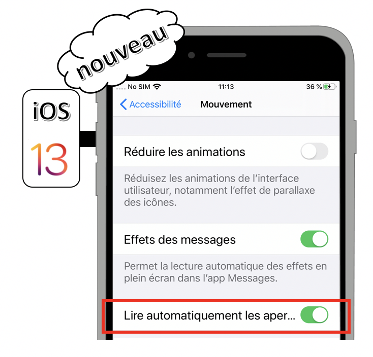
- Différencier sans couleur (UIAccessibilityShouldDifferentiateWithoutColour) : voir WWDC 2019 pour un descriptif de cette nouvelle fonctionnalité iOS 13. 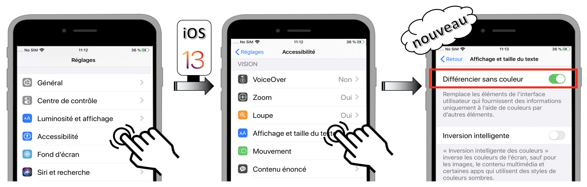
- Boutons avec I/O (UIAccessibilityIsOnOffSwitchLabelsEnabled) : une fois activée, cette option dont l'accès programmatique est une nouveauté iOS 13 affiche directement l'état des boutons à bascule pour éviter que seule la couleur soit porteuse de l'information.

Les critères incontournables sous Android
Pour la conception
Ce socle de critères destiné aux applications mobiles Android Orange pose les fondations qui permettent de s’engager dans une démarche de mise en accessibilité.
Le respect de la charte Orange pour Android, document disponible sur le site de la marque Orange est un prérequis à l’utilisation de ce socle. Certains points déjà présents dans la charte Orange (utilisation des couleurs notamment) n’ont pas été repris dans cette liste de critères.
Pour le développement
Les critères incontournables pour le développement ont pour vocation d’aider les développeurs avec les principales options d’accessibilité du SDK Android. À travers différentes catégories, ce guide explique comment utiliser les attributs et méthodes d’accessibilité et propose des liens vers la documentation officielle de Google.
Pour le test
Pour vérifier le respect des critères, un certain nombre d’outils sont disponibles sous Android. Certains sont des outils dédiés au test comme l’accessibility scanner, d’autres sont les outils permettant de palier à des déficiences comme Talkback.
Le test de l’accessibilité sous Android
Pour le web, le niveau d’accessibilité demandé à toute interface HTML par le groupe Orange est le respect des critères du niveau AA des Web Content Accessibility Guidelines (WCAG) 2.1, sans point bloquant suite à un test utilisateur d’aide technique pour les principaux scénarios d’utilisation des fonctionnalités du site ou de l’application. Pour les applications mobiles natives, une transposition de ces critères et le respect des recommandations de la plateforme Android en terme d’accessibilité est demandé.
Des recommandations pour le test de l’accessibilité sous Android sont décrites sur le site de la plateforme, voir ces recommandations.
L’objet de ces pages est de décrire les tests techniques et fonctionnels. Ces tests sont des pré-requis aux tests utilisateurs.
Les tests d’accessibilité doivent être effectués tout au long du cycle de vie des projets :
Au démarrage du projet, lors du choix du Framework, du logiciel ou progiciel…
Dès la phase de conception sur les maquettes ou les prototypes lors des développements et des tests en production, pour les nouveaux contenus.
Dans l’idéal, les tests doivent être effectués sur des mobiles Android sans surcouche constructeur comme le Pixel. Ils doivent ensuite être réalisés sur les mobiles avec surcouche constructeur les plus utilisés par l’application.
Dans les premières versions des outils, il n’était pas possible d’en activer plusieurs en même temps. Au fil des versions, les outils se sont stabilisés et il est possible de les combiner pour vérifier plus de critères à la fois.
Pour tester l’accessibilité sur Android, il faut commencer par télécharger sur le Google Play, Android Accessibility Suite et Accessibility Scanner.
Accessibility Scanner
Le scanner est téléchargeable sur le playstore.
Le scanner prend des captures d’écran de la page et vérifie :
- que l’écran contient des “vocalisations ou label” pour le lecteur d’écran,
- que les zones cliquables sont suffisamment grandes et qu’elles ont un label propre,
- Les contrastes de couleur.
Attention, c’est une aide à la vérification, l’outil remonte parfois des faux positifs.
Certaines de ces vérifications font doublon avec lint.
En cas de doute sur les contrastes, Colour contrast analysor permet de faire un diagnostic plus précis.
Mode opératoire :
- Activer le scanner dans les paramètres/accessibilité/Accessibility Scanner. Cela affiche un bouton, “floatting action button” sur l’écran.
- Actioner le bouton sur les écrans à tester. Une capture d’écran est réalisée et la liste des suggestions de correction s’affiche.
Agrandissement
Android propose plusieurs options d’agrandissement :
- Taille de la police
- Taille d’affichage
- Agrandissement (zoom)
Lire les instructions lors de l’activation des outils.
Positionner Taille de la police et Taille d’affichage au maximum. Parcourir l’application et noter les textes qui ne sont plus lisibles car ils ont disparu ou se chevauchent.
Positionner Agrandissement sur Utiliser le service. Revenir à l’application, cliquer 3 fois sur l’écran. Vérifier que les écrans sont lisibles dans ce mode. Pour agrandir, placer 2 doigts sur l’écran puis écarter les, se déplacer avec deux doigts sur l’écran et un doigt dans certaines listes. Toutes les informations de l’écran doivent être lisibles en mode zoom.
Lecteur d’écran
Le lecteur d’écran est un outil pour les personnes non voyantes et mal-voyantes. Il a deux fonctions, la vocalisation et la navigation dans l’écran. Tous les éléments signifiants doivent être vocalisés et dans un ordre logique.
Pour l’activation et l’utilisation du lecteur, voir la section concernant TalkBack.
La navigation peut être utilisée en :
- lecture automatique de la page ou lecture élément par élément, balayage au doigt vers la droite pour l’élément suivant (obligatoire)
- lecture par niveau : Par défaut (obligatoire), si l’application s’y prête, le mode En-têtes peut avoir de l’intérêt (page structurée à plusieurs niveaux), ou Liens, Commandes, Mots, Paragraphes.
Une option développeur (Paramètres / Accessibilité / Talkback / Paramètres / Paramètres du développeur / Afficher la sortie vocale) permet d’afficher à l’écran ce qui est vocalisé et ainsi de faire un rapport de bug plus facile. Lorsque Talkback est utilisé avec l’option activée, les vocalisations sont affichées en bas de l’écran (en sur-impression), il est donc possible d’en faire un screenshot. Il est néanmoins nécessaire d’écouter le rendu audible qui n’est pas toujours correct (comme certaines abréviations).
Parcourir l’application sur les scénarios utilisateurs et vérifier que toutes les informations sont vocalisées dans un ordre logique et compréhensible ainsi que :
- les actions associées (bouton, case à cocher… Appuyer deux fois pour activer),
- avec l’état des éléments (désactivé, coché…),
- les messages d’erreurs,
- les transitions entre les écrans,
- Les images signifiantes vocalisées, les images décoratives ignorées,
- Les titres des pages vocalisés,
- Pas d’élément fantôme,
- Les scrolls horizontaux vocalisés,
- les contenus dynamiques et les erreurs,
- les formulaires (compréhension des champs à remplir, des messages d’erreur),
- dans les vidéos, les boutons de contrôles de la vidéo.
Idéalement, le test peut se faire sans regarder l’écran, ou en activant l’écran noir (Assombrir l’écran).
Navigation au focus (au clavier)
Pour cela, connecter un clavier d’ordinateur sur votre smartphone soit avec un adaptateur (USB - USB C par exemple) soit si le clavier est bluetooth, en appairant le clavier et le téléphone. Le clavier bluetooth a l’avantage de faciliter le débuggage.
La navigation dans une application ou une page web doit être possible à l’aide du clavier seul, notamment pour les personnes qui ne peuvent pas utiliser l’écran tactile. Il est important de vérifier son fonctionnement, car certains développements peuvent entraîner des difficultés pour naviguer correctement dans la page.
Parcourir l’application à l’aide du clavier, toutes les fonctionnalités doivent être accessibles.
De plus le focus doit rester suffisamment visible sur chaque élément recevant ce focus (éléments activables, boutons, éléments cliquables, cases à cocher,…).
Liste des raccourcis clavier principaux :
- La touche TAB : pour faire avancer le focus.
- Les touches maj+TAB : pour faire reculer le focus.
- La touche entrée pour activer l’élément qui a le focus (lien, bouton, menu…).
- La barre espace pour cocher/décocher une case à cocher.
- Les flèches directionnelles pour modifier la sélection des boutons radio, pour se déplacer dans une liste déroulante, ou faire défiler les ascenseurs scrollbar ) lorsque ceux-ci sont présents.
Il s'agit des touches également utilisées pour tester l'accessibilité d'un site web, néanmoins un distingo moins strict est fait entre l’usage du Tab et des flèches ainsi qu’entre l’usage de la barre et la touche entrée : on considère le test comme réussi lorsqu’au moins l’un des deux permet de réaliser l’action.
Il est considéré comme bloquant l’impossibilité de sortir d’une fonctionnalité ou de l’application.
Colour Contrast Analyser
Les contrastes de couleurs se vérifient sur les maquettes de l’application, ou via Accessibility Scanner sur un mobile Android. Si un doute subsiste, il est possible de faire un screenshot de l’application, puis de faire une vérification sur un ordinateur Mesurer le niveau de contraste des couleurs via l'outil Colour Contrast Analyser.
Pour les valeurs à respecter voir la section concernant les couleurs.
Autres outils - optionnels
Sélectionner pour prononcer
Sélectionner pour prononcer est un outil intégré à l’Android Accessibility Suite qui permet de lire certaines parties de l’écran qui sont sélectionnées.
Lorsqu’un seul élément est sélectionné, il réalise la vocalisation de l’élément. Lorsque plusieurs éléments sont sélectionnés, il implémente un ordre logique de lecture comme Talkback mais il n’implémente pas les actions ni l’état des éléments.
Il est utile pour les malvoyants, lorsque l’écran n’est pas lisible, pour l’apprentissage de la lecture (fonctionne comme un karaoké), pour l’apprentissage d’une langue étrangère.
Il peut être utilisé dans un but de démonstration mais est redondant avec Talkback pour des tests d’accessibilité, sans pouvoir le remplacer.
Voice Access
Voice Access est une applicationl intégrée à Android Accessibility Suite, à destination des personnes présentant des troubles moteur. Elle permet de commander à la voix l’application à la place de l’écran tactile.
Switch Access
Switch Access est une application à destination des personnes présentant des troubles moteur. Elle permet de contrôler le téléphone en programmant des touches. Elle pourrait remplacer la navigation clavier mais peut introduire des incompréhensions du fait de son paramétrage ou de l’application. Elle ne peut donc se substituer aux tests au clavier.
Accessibilité sous iOS
De façon à pouvoir implémenter au mieux l'accessibilité au sein d'applications iOS, la parfaite compréhension d'un ensemble de notions est nécessaire pour apporter la meilleure expérience utilisateur possible. Toutes ces notions élémentaires et avancées sont illustrées et développées dans les différentes rubriques ci-dessous :
Critères de conception
Ce socle de critères pose les fondations qui permettent de s’engager dans une démarche de mise en accessibilité. Le respect de la charte Orange pour iOS, document disponible sur le site de la marque Orange, est un prérequis à l’utilisation de ce socle. Certains points déjà présents dans cette charte (utilisation des couleurs notamment) n’ont pas été repris dans cette liste de critères.
Guide pour les développeurs
L'aide au développement a pour vocation d’aider les développeurs avec les éléments programmatiques d’accessibilité disponibles sous iOS. L'intérêt principal de cette partie réside dans tous les exemples concrets comprenant des illustrations et des exemples de code (ObjC et Swift) qui permettront aux développeurs de trouver rapidement une solution à leurs problèmes.
VoiceOver
Afin de comprendre parfaitement les problématiques liées au lecteur d'écran, toutes les gestuelles sont illustrées et expliquées de façon détaillée. La maîtrise parfaite de ces gestes permet de mettre en place une application qui colle au mieux aux attentes des utilisateurs, l'effort à fournir pour la pratique se faisant tant au niveau des concepteurs que des développeurs et des testeurs.
WWDC
Cette section regroupe des présentations concernant l'accessibilité faites par Apple à la World Wide Developers Conference présentée chaque année. Chacune de ces présentations est détaillée et chaque thème décrit fait référence à une indication temporelle au sein de la vidéo de façon à pouvoir le visualiser le plus rapidement possible.
Tests
Cette partie contient l'ensemble des tests à réaliser afin de s'assurer que les recommandations iOS sont bien suivies.
Tester l'accessibilité d'une application iOS
Cette page décrit l'ensemble des tests nécessaires à l'évaluation d'une application iOS dans le cadre de l'accessibilité. Il est indispensable que TOUS les intervenants du projet connaissent les spécificités d'accessibilité iOS présentées sur ce site de façon à comprendre parfaitement le lien entre les besoins des utilisateurs et leur implémentation au sein de l'application à développer. Chacune des fonctionnalités doit être vue comme un élément impactant fortement le confort de l'utilisateur, comme une brique essentielle à connotation humaine et pas juste fonctionnelle. Que ce soit dans la conception, la réalisation ou la vérification, chaque décision se doit d'être particulièrement empathique de façon à fournir la meilleure expérience utilisateur possible.
Pré-requis fondamentaux
- Consacrer le temps nécessaire à la maîtrise de la gestuelle (VoiceOver, contrôle de sélection).
- Visionner les exemples d'utilisation fournis dans les vidéos WWDC.
- Assimiler les critères de conception pour s'asurer de la bonne voie sur laquelle on s'engage.
- Pour les développeurs, ne pas hésiter à se créer des projets vierges en n'y incorporant que la partie impactant la fonctionnalité désirée afin de s'assurer qu'elle est parfaitement fonctionnelle et que seul l'environnement au sein de laquelle elle va être introduite risque éventuellement d'altérer son comportement.
- Il faut absolument que les contenus web et les éléments tiers qui pourraient être utilisés au sein de l'application soient eux-mêmes déjà parfaitement accessibles.
Environnement de travail
Quatre grandes familles peuvent être dépeintes au sein de chaque projet :
- À l'initiative de tout ce qui va être créé, la personne en charge de prioriser les fonctionnalités à implémenter doit parfaitement comprendre les besoins utilisateurs et la façon de les décliner sous iOS. Cette personne doit s'assurer que des critères d'acceptations sont parfaitement définis pour chacune des fonctionnalités et que leur réalisation répond exactement à ce qui était demandé en vérifiant elle-même le fonctionnement souhaité.
- L'équipe DESIGN doit réellement se mettre à la place de l'utilisateur de façon à fournir les préconisations les plus précises possibles en fonction des demandes projet en amont.
- L'équipe DÉVELOPPEMENT doit grandement s'appuyer sur les vidéos WWDC et sur le guide pour les développeurs afin de trouver les solutions les plus appropriées aux différentes situations rencontrées.
- L'équipe TEST doit parfaitement maîtriser la gestuelle spécifique et comprendre toutes les possibilités offertes par iOS pour réaliser chacun des tests de façon optimum avant mise en production.
Quel que soit le mode de fonctionnement (SCRUM, ...), les fonctions dévolues à chacune de ces équipes doivent être présentes au sein du projet. De façon à pouvoir s'assurer que les recommandations d'accessibilité iOS ont bien été prises en compte, deux modes d'évaluation sont à prévoir :
- FONCTIONNEL : on s'assure que l'utilisateur peut naviguer parmi tous les écrans sans soucis, en ayant accès à toute l'information visuelle mise à disposition et surtout sans avoir à se poser de questions. Le parcours utilisateur doit être fluide, simple et sans équivoque.
- TECHNIQUE : on vérifie la conformité technique de certains éléments (contraste des couleurs, taille d'icônes...) tout en pouvant mettre en place des tests liés au code utilisé (TDD, UI). Ce mode vient aussi souvent confirmer et solutionner certains problèmes fonctionnels rencontrés.
Évaluation fonctionnelle
La participation aux tests de cette partie ne nécessite aucune connaissance technique particulière si ce n'est savoir (dés)activer et utiliser des fonctionnalités d'accessibilité iOS. En plus des critères de base à respecter, il est primordial de s'assurer que des options d'accessibilité activées par un utilisateur sont parfaitement opérationnelles dans toutes les pages de l'application développée. Ci-dessous, quelques critères importants à tester impérativement :
- Orientation de l'écran : il est très fortement recommandé de pouvoir utiliser une application en mode portrait ou paysage. Cette fonctionnalité doit absolument être vérifiée pour tous les écrans d'une application.
- Limiter les animations visuelles : lorsque des personnes sont susceptibles d'être plus ou moins gênées par les mouvements visuels, il faut absolument s'assurer que les éventuelles animations proposées répondent bien aux souhaits de l'utilisateur.
- Réduire le floutage et la transparence : victime de problèmes visuels, une personne peut rapidement trouver les effets de flou et de transparence très inconfortables. Il faut donc vérifier que l'atténuation proposée par le système est bien prise en compte sur les pages applicatives où ces effets sont implémentés.
- Mode sombre : le résultat graphique de cette nouvelle fonctionnalité iOS 13 doit absolument être vérifié pour s'assurer que les différents contrastes de couleurs utilisées sont conformes aux critères de conception, sans oublier l'option d'accessibilité augmenter le contraste qui est aussi un élément incontournable à vérifer dans ce contexte.
En plus de ces critères fondamentaux, il y a bien évidemment les incontournables iOS pour qualifer à minima une application d'accessible :
Dynamic Type
Pour bien comprendre comment le grossissement de texte fonctionne, il est fortement recommandé de visionner l'exemple proposé dans la vidéo WWDC 2017 parfaitement résumée dans la partie WWDC de ce site. Afin de prendre en compte un panel conséquent de terminaux, il est conseillé de réaliser les tests avec trois terminaux de taille différente (iPhone5SE, iPhoneX et iPhone8Plus par exemple) avec lesquels chaque page devra être visualisée. Trois types de grossissement doivent être particulièrement étudiés de façon à déterminer le comportement visuel aux extrêmes :
- Seuil le plus bas SANS accessibilité.
- Seuil le plus haut SANS accessibilité.
- Seuil le plus haut AVEC accessibilité.
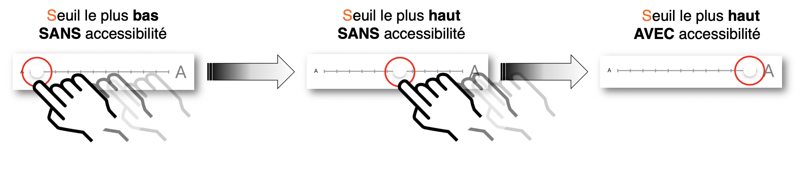 Enfin, les quelques points suivants sont à examiner minutieusement :
- La troncature '...' est à éviter pour laisser place à la coupure du mot impacté identifiée par un trait d'union en fin de phrase.

- Les illustrations comme les icônes doivent s'adapter au grossissement souhaité : l'utilisation du Large Content Viewer après un appui long, l'implémentation d'un pinch à 2 doigts afin d’éviter à l’utilisateur d’avoir recours à la fonctionnalité
Zoomou encore le simple grossissement d'un élément graphique peuvent être des solutions selon les cas rencontrés. - Penser à modifier le grossissement de texte au sein de chaque écran pour s’assurer que tous ses éléments répondent parfaitement aux contraintes graphiques mises en place.
- Dès que la correction d’une anomalie remontée sur un terminal est effective, elle doit être vérifiée sur les autres terminaux utilisés en tests afin de s'assurer que le problème est réellement éradiqué.
Les tests à réaliser pour le Dynamic Type sont assez longs car plusieurs terminaux sont à étudier et chaque écran est à vérifier avec une modification de la taille du texte à faire pour chacun des écrans.
VoiceOver
L'activation du lecteur d'écran natif change radicalement les résultats obtenus par les gestes standards effectués sur l’écran tactile, c'est pourquoi son utilisation demande un certain temps d'adaptation pour une maîtrise de sa gestuelle spécifique. Il est donc très fortement recommandé de connaître au moins les gestes de base avant d'activer cette fonctionnalité à partir des réglages du terminal.

Pour aboutir à une parfaite implémentation de VoiceOver, il ne faut surtout pas croire que chaque élément doit absolument être vocalisé et se contenter de passer au suivant pour renouveler cette opération : ce type de réalisation est tout sauf productif ! Il faut bien avoir à l'esprit que l'information diffusée visuellement est assimilée en très peu de temps alors que celle fournie par le lecteur d'écran arrive de façon séquentielle à la vitesse de sélections successives d'éléments : un effort énorme de mémorisation est à fournir pour avoir une vision synoptique de l'écran et comprendre réellement ce qui est proposé. Pour mieux comprendre cette situation, il est recommandé de passer son écran en mode "rideau" puis naviguer comme si on voyait l'écran. Cette opération est particulièrement utile lors de premiers tests sur une application qu'on découvre car on n'est pas influencé sur le parcours utilisateur qui serait déjà visionné inconsciemment. En plus des critères de conception à respecter, quatre grands principes doivent rester à l'esprit lors de tests :
- L'information visuelle doit être retranscrite vocalement.
- L'utilisateur doit toujours savoir où il est et où il peut aller.
- L'utilisateur ne doit pas se poser de questions, sa navigation doit se faire sans équivoque.
- L'utilisateur doit réaliser un minimum de sélections au sein de l'écran.
Ici encore, les tests demandent beaucoup de temps et requièrent une forte empathie pour avancer des critiques constructives sur la façon dont l'information vocale doit être diffusée par VoiceOver. Maintenant, si le lecteur d'écran n'est pas encore implémenté sur une application déjà en diffusion publique, il est primordial d'en informer l'utilisateur dès sélection de l'icône applicatif en indiquant très clairement la situation de façon à en éviter une consultation catastrophique et décevante.
Contrôle de sélection
L'utilisation du contrôle de sélection s'articule autour du mode point et du mode élément.
 La sélection des éléments avec le mode élément fonctionne globalement bien quand les éléments proposés sont natifs et que l'application n'est pas trop compliquée graphiquement.
Il peut très bien arriver que ce mode de sélection ne suive pas la logique souhaitée et ne propose pas les éléments dans l'ordre désiré.
Dans ce cas, les tests réalisés devront donc remonter toute amélioration nécessaire pour aboutir à la meilleure expérience utilisateur possible.
Remarque : l'activation de cette fonctionnalité se fait elle aussi via les réglages du terminal.
La sélection des éléments avec le mode élément fonctionne globalement bien quand les éléments proposés sont natifs et que l'application n'est pas trop compliquée graphiquement.
Il peut très bien arriver que ce mode de sélection ne suive pas la logique souhaitée et ne propose pas les éléments dans l'ordre désiré.
Dans ce cas, les tests réalisés devront donc remonter toute amélioration nécessaire pour aboutir à la meilleure expérience utilisateur possible.
Remarque : l'activation de cette fonctionnalité se fait elle aussi via les réglages du terminal.

Évaluation technique
Comme son nom l'indique, cette partie requiert des connaissances plus ou moins pointues selon ce que l'on souhaite vérifer.
Contraste des couleurs
Graphiquement, ce point est très certainement le plus facilement vérifiable grâce à certains logiciels à installer en local (Colour Contrast Analyzer...) ou à des sites web publics (WebAIM...). L'outil Accessibility Inspector dispose d'une fonctionnalité Color Contrast Calculator depuis Xcode 11 qui permet aussi de réaliser le même type de vérifications.
Inspection de code
L'interface de développement Apple (Xcode) fournit un outil particulièrement intéressant intitulé Accessibility Inspector.
L'intérêt et l'utilisation de cet outil ne seront pas développés ici car ils sont très bien expliqués dans les vidéos parfaitement détaillées Audit d'une app en accessibilité et Découvrir Accessibility Inspector dont le visionnage est très fortement recommandé.
Tests liés au code
De façon à assurer une stabilité temporelle au niveau du code, des tests unitaires (TDD) et graphiques (UI) sont à mettre en place par les développeurs. Ces bonnes pratiques permettent de garantir une pérennité fonctionnelle en étant informé d'un éventuel écart introduit lors de développements ultérieurs.
WWDC : World Wide Developers Conference
Cette partie regroupe des présentations faites à la WWDC et liées à l'accessibilité.
Chacune de ces présentations est détaillée et comprend une description de chaque thème qui fait référence à une indication temporelle au sein de la vidéo.
La plupart des illustrations proviennent des supports de présentations fournies par Apple et sont disponibles dans la partie Resources de l'onglet Overview propre à chaque vidéo.
L'accès au résumé de chacune de ces vidéos se fait en cliquant sur le titre ou directement sur l'image de présentation.
2019 - Large Content Viewer
Cette courte vidéo concerne la fonctionnalité Large Content Viewer apparue avec iOS 11 et les nouveautés iOS 13 associées.
2019 - Quelques enseignements en accessibilité
Cette session regroupe quatre courtes interventions toutes liées à l'accessibilité. 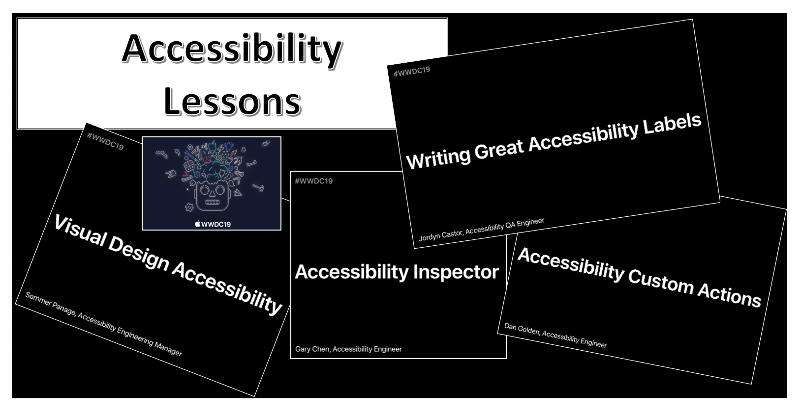
2018 - Fournir une expérience exceptionnelle en accessibilité
Présentation de toutes les fonctionnalités qui vont permettre de créer une application accessible répondant parfaitement aux attentes des utilisateurs.
Le détail de leurs mises en oeuvre est exposé aux développeurs par le biais d'une démonstration de façon à saisir la logique à suivre quel que soit le contexte.

2018 - Utiliser une voix synthétisée
Cette très courte vidéo présente les éléments principaux à mettre en oeuvre pour implémenter une vocalisation synthétisée.

2017 - Les nouveautés en accessibilité
Présentation des nouvelles fonctionnalités d'accessibilité iOS 11 en associant la pratique de l'utilisateur à la conception du développeur.

2017 - Application du Dynamic Type
Permettre à l'utilisateur de déterminer la taille de texte nécessaire à son confort visuel et adapter son application à cette modification sont des éléments essentiels que le Dynamic Type met en avant.
Cette vidéo propose à la fois une approche théorique pour bien comprendre les possibilités offertes par le Dynamic Type ainsi qu'une partie purement pratique au niveau développeur pour lui éviter de tomber dans les écueils classiques de programmation.

2016 - Les nouveautés en accessibilité
Présentation des nouvelles fonctionnalités d'accessibilité iOS, MacOS, tvOS et WatchOS en associant la pratique de l'utilisateur à la conception du développeur.

2016 - Audit d'une app en accessibilité
Après un rappel sur le fonctionnement de VoiceOver au niveau programmatique, cette présentation va détailler les différentes fonctionnalités proposées par l'outil Accessibility Inspector de Xcode en s'appuyant sur un exemple très simple pour une mise en situation concrète.

WWDC 2016 : Les nouveautés en accessibilité
Cette présentation visualisable sur le site développeur officiel d'Apple (session 202) a pour buts de mettre en avant les principales nouveautés en terme d'accessibilité et de rappeler quelques fondamentaux avec une importance notable pour VoiceOver.
Les thèmes abordés ainsi que leur référence temporelle au sein de la vidéo sont décrits ci-dessous :
Fonctionnalités
- MOTEUR - Switch Control (02:29) ⟹ nouveauté tvOS 10
- MOTEUR - Dwell Control (03:36)
- VUE - Adaptation des couleurs (04:15) ⟹ nouveauté tvOS 10
- VUE - Taptic time (04:53)
- VUE - Loupe (05:17) ⟹ nouveauté iOS 10
- OUÏE - TTY (06:51) ⟹ nouveauté iOS 10
- APPRENTISSAGE - Retour audio d'écriture (07:51)
Programmation
- Découvrir le protocole UIAccessibility (14:19)
- accessibilityElements (18:00)
- accessibilityFrameInContainerSpace (19:02) ⟹ nouveauté iOS 10
- accessibilityCustomRotors (24:19) ⟹ nouveauté iOS 10
- tvOS header elements (31:20)
Exemple : au cours de cette présentation, de nombreuses solutions sont proposées par le biais d'une application d'exemple pour répondre aux questions que se posent les développeurs face aux problèmes rencontrés en accessibilité avec VoiceOver. Il est vivement conseillé de regarder l'application d'exemple sans améliorations avant de consulter les solutions. Une fois tous les problèmes soulevés par ces questions solutionnés, l'accessibilité VoiceOver de l'application s'améliore nettement pour aboutir à la démonstration réalisée en séance.
- Rendre une
table view cellactivable (19:58). - Mettre un
labeldynamique sur un bouton (20:21). - Rendre accessibles des éléments
CALayerutilisés pour créer un graphe par exemple (20:45). - Comprendre la problématique de navigation sur un plan avec VoiceOver (23:33).
- Effectuer une recherche concernant les éléments d'une
table view(25:37) et d'un plan (27:45) avec lerotor.
- Rendre une
Par la suite, le fait de cliquer sur un titre permet d'ouvrir la vidéo de présentation Apple directement au moment indiqué.
MOTEUR - Switch Control (02:29)
Après un petit rappel sur l'utilisation iOS de cette fonctionnalité, un focus particulier est mis sur son introduction avec tvOS.

MOTEUR - Dwell Control (03:36)
Des appareils spécifiques connectés à l'ordinateur permettent de l'utiliser sans avoir à manipuler la souris en associant le mouvement de cette dernière à celui des yeux. Lorsque le curseur se stabilise, un timer est lancé à l'expiration duquel une action dédiée est déclenchée (nouveauté MacOS). 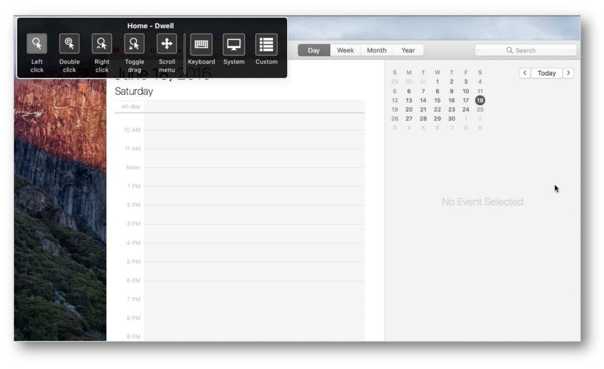
VUE - Adaptation des couleurs (04:15)
Toutes les facilités déjà présentes sur iOS et MacOS pour aider au maximum les personnes ayant des problèmes de reconnaissance de couleurs ou une forte sensibilité à la lumière sont désormais aussi disponibles sur tvOS.
VUE - Taptic time (04:53)
WatchOS 3 introduit cette fonctionnalité qui permet via VoiceOver de mettre en oeuvre toute une série de taps spécifiques pour donner l'heure d'une façon très silencieuse et discrète.
VUE - Loupe (05:17)
Cette nouveauté iOS 10 permet d'utiliser son appareil mobile comme une loupe en associant des fonctionnalités d'accessibilité (stabilisateur d'écran, filtres de couleurs...) mises en situation par une démonstration au sein de cette présentation.
OUÏE - TTY (06:51)
L'utilisation du TTY (Typewriter) qui permet de faire passer du texte sur une ligne téléphonique grâce des appareils dédiés est désormais possible sur iOS. Cette nouveauté iOS 10 sous forme d'implémentation software permet donc de réaliser ce type de conversation directement sur son appareil mobile sans avoir à ajouter quelque complément matériel que ce soit.
APPRENTISSAGE - Retour audio d'écriture (07:51)
Outre les améliorations réalisées sur Énoncer la sélection et Énoncer le contenu de l'écran dans la partie Accessibilité - Parole des réglages, un retour audio sur ce qui est tapé à l'écran par l'utilisateur a aussi été implémenté.
Cette nouveauté iOS 10 permet à des personnes dyslexiques par exemple de vérifier directement leurs écrits qu'une démonstration au sein de cette présentation met en évidence.
Découvrir le protocole UIAccessibility (14:19)
Petit rappel sur les fondements du protocole informel UIAccessibility qui va être utilisé dans la suite de la présentation.

accessibilityElements (18:00)
Rappel sur l'intérêt de créer ce type d'objets et le contexte au sein duquel ils évoluent. 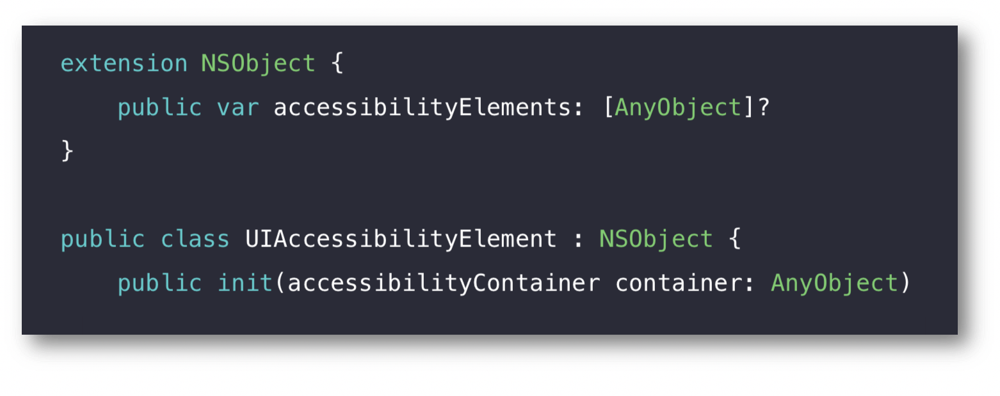
accessibilityFrameInContainerSpace (19:02)
Nouveauté iOS 10 qui permet la gestion automatique des coordonnées d'un élément accessible dans son container.
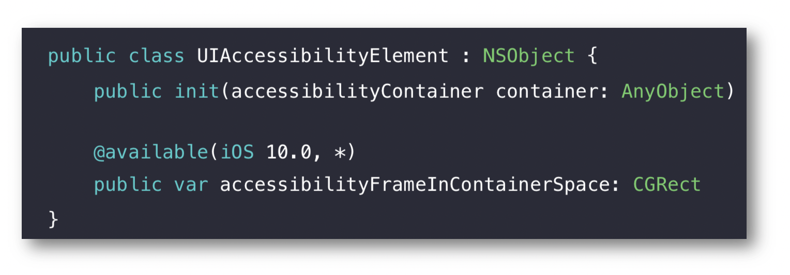
accessibilityCustomRotors (24:19)
Nouveauté iOS 10 qui permet d'ajouter des éléments personnalisés sur le rotor natif d'un terminal.
 La mise en place programmatique de ce type de fonctionnement est aussi présentée dans la partie développement.
La mise en place programmatique de ce type de fonctionnement est aussi présentée dans la partie développement.
tvOS header elements (31:20)
Rappel sur l'implémentation des éléments cités en objet ainsi que sur leur intérêt avec une navigation VoiceOver au sein de l'univers tvOS.
 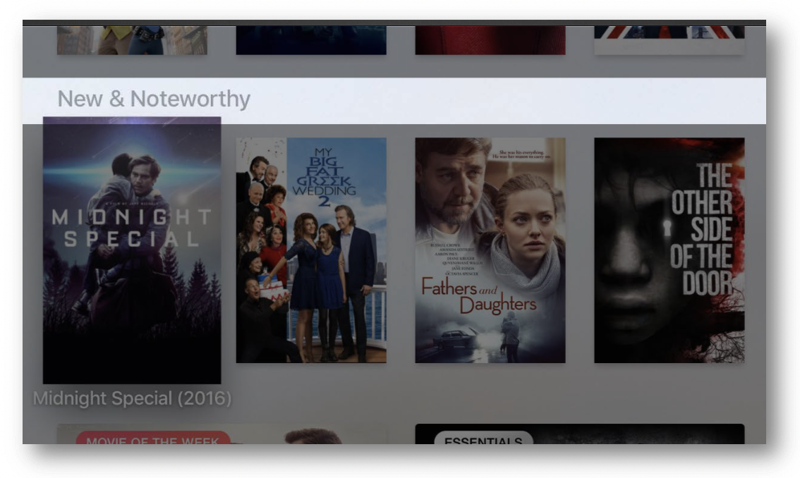
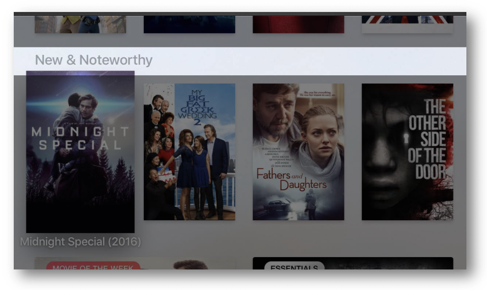
WWDC 2016 : Audit d'une app en accessibilité
Cette présentation visualisable sur le site développeur officiel d'Apple (session 407) a pour but d'expliquer l'outil de développement Accessibility Inspector et comment l'utiliser par le biais d'une application d'exemple très simple.
 Les thèmes abordés ainsi que leur référence temporelle au sein de la vidéo sont décrits ci-dessous :
Les thèmes abordés ainsi que leur référence temporelle au sein de la vidéo sont décrits ci-dessous :
- Accessibility Inspector (09:38)
- Audit (11:21)
- Inspection (20:30)
- Settings (28:33)
À la fin de cette présentation, il est très fortement recommandé de consulter les nouveautés Xcode 11 de l'outil Accessibilty Inspector de façon à connaître parfaitement la toute dernière version. Par la suite, le fait de cliquer sur un titre permet d'ouvrir la vidéo de présentation Apple directement au moment indiqué.
Accessibility Inspector (09:38)
Présentation générale de l'outil en décrivant son contenu ainsi que les différents thèmes autour desquels va s'articuler cette présentation.
 La suite va s'attacher à détailler spécifiquement les parties audit, inspection et settings.
La suite va s'attacher à détailler spécifiquement les parties audit, inspection et settings.
Audit (11:21)
Explications fournies sur l'intérêt et l'utilisation de cette fonctionnalité avec une démonstration par un exemple pratique (12:22) qui permet de mettre en avant la façon de trouver une solution au problème décelé par l'outil (14:24) tout en pouvant remonter rapidement ce problème sous forme de rapport (17:07).
 Ce type d'audit automatique est très important mais un audit manuel complémentaire est indispensable car il permet d'éviter des écueils qui pourraient être dévastateurs dans l'utilisation de l'application (18:55).
Ce type d'audit automatique est très important mais un audit manuel complémentaire est indispensable car il permet d'éviter des écueils qui pourraient être dévastateurs dans l'utilisation de l'application (18:55).
Inspection (20:30)
Seconde fonctionnalité expliquée en s'appuyant sur un exemple (21:58) qui peut permettre de déceler différents types de problèmes :
- Ordonnancement chaotique d'éléments dans la navigation. (23:11)
- Description absconse d'un élément. (23:34)
- Action non souhaitée déclenchée par un élément. (24:02)
Lors de la visualisation de la hiérarchie des éléments par cette fonctionnalité (24:40), il est précisé que les composants gérés par CALayer ne sont pas traités nativement par VoiceOver.

Settings (28:33)
Dernière fonctionnalité de l'outil qui permet d'éviter des allers-retours entre l'application testée et les modifications des principaux réglages d'accessibilité qu'une démonstration met en évidence (30:25).

WWDC 2017 : les nouveautés en accessibilité
Cette présentation visualisable sur le site développeur officiel d'Apple (session 215) a pour but de mettre en avant les principales nouveautés iOS 11 en terme d'accessibilité avec une importance notable pour VoiceOver.
 Les thèmes abordés ainsi que leur référence temporelle au sein de la vidéo sont décrits ci-dessous :
Les thèmes abordés ainsi que leur référence temporelle au sein de la vidéo sont décrits ci-dessous :
- Détection de texte dans une image (07:07) ⟹ nouveauté iOS 11
- Amélioration de la description d'une photo (08:01) ⟹ nouveauté iOS 11
- Ecrire des infos pour SIRI (11:37) ⟹ nouveauté iOS 11
- Accessibility Inspector : cas pratique (15:35)
- Découvrir le protocole UIAccessibility (21:14)
- Attributed Accessibility Properties (26:07) ⟹ nouveauté iOS 11
- Accessibility Container Type (27:20) ⟹ nouveauté iOS 11
- Les actions personnalisées (35:43)
- Action par défaut (37:38)
- Les valeurs continûment ajustables (38:22)
- Sélection en défilement continu (39:40)
- Défilement personnalisé (41:02)
- Drag & Drop (42:54) ⟹ nouveauté iOS 11
Au cours de cette présentation, de nombreuses solutions sont proposées par le biais d'une application d'exemple pour répondre aux questions que se posent les développeurs face aux problèmes rencontrés en accessibilité avec VoiceOver (regarder l'application d'exemple avant de lire la suite) :
- Rendre un élément (in)accessible (31:10)
- Remplir des propriétés
labeletvalue(29:59). - Rassembler plusieurs éléments pour n'en former qu'un seul (31:50).
Par la suite, le fait de cliquer sur un titre permet d'ouvrir la vidéo de présentation Apple directement au moment indiqué.
Détection de texte dans une image (07:07)
Il est désormais possible de déterminer si du texte est incrusté dans une image.
 Cette détection très basique est obtenue en réalisant un tap avec 3 doigts.
Elle permet ainsi de vocaliser cette inscription à une personne qui ne peut initialement pas la détecter.
Cette détection très basique est obtenue en réalisant un tap avec 3 doigts.
Elle permet ainsi de vocaliser cette inscription à une personne qui ne peut initialement pas la détecter.
Amélioration de la description d'une photo (08:01)
La vocalisation de la description d'une photo est une nouvelle fonctionnalité de Voice Over et est obtenue par un simple tap à l'aide de 3 doigts.
 Une détection très simple du contexte, des visages et de leurs expressions est donc exposée à l'utilisateur pour qui ce type d'informations devient plus que jamais un lien fort avec son environnement.
Une détection très simple du contexte, des visages et de leurs expressions est donc exposée à l'utilisateur pour qui ce type d'informations devient plus que jamais un lien fort avec son environnement.
Ecrire des infos pour SIRI (11:37)
Nouveauté très utile pour les personnes ne pouvant pas utiliser SIRI vocalement ou désirant simplement effectuer des requêtes de façon discrète.
Pour utiliser cette fonctionnalité, il faut se rendre dans la partie Accessibilité des Réglages pour rendre l'activation effective.

Accessibility Inspector : cas pratique (15:35)
Dans cette partie, l'outil Accessibility Inspector de Xcode est utilisé pour une démonstration d'audit accessibilité d'une application. Des exemples sont fournis sans expliquer fondamentalement les notions propres à l'outil qui sont détaillées dans la session 407 (2016).
Découvrir le protocole UIAccessibility (21:14)
Petit rappel sur les fondements du protocole informel UIAccessibility qui vont être utilisés dans la suite de la présentation.

Attributed Accessibility Properties (26:07)
iOS 11 permet de transformer les propriétés d'accessibilité label, value et hint de base en NSAttributedString de façon à pouvoir agir sur la façon dont ils vont être vocalisés.
 Parmi les exemples fournis, on trouve la possibilité de vocaliser en langue étrangère un élément accessible bien particulier.
Parmi les exemples fournis, on trouve la possibilité de vocaliser en langue étrangère un élément accessible bien particulier.
 L'ensemble des clés utilisables se trouve sur la documentation officielle Apple.
L'ensemble des clés utilisables se trouve sur la documentation officielle Apple.
Accessibility Container Type (27:20)
Une définition de conteneur typé au niveau accessibilité est disponible en iOS 11.
 La notion de conteneur existait déjà mais rien ne permettait à VoiceOver de savoir ce qu'était réellement ce conteneur.
Ce nouveau typage va donc permettre à VoiceOver de faciliter et de mieux appréhender la façon dont l'utilisateur va pouvoir naviguer au sein de ce conteneur.
La notion de conteneur existait déjà mais rien ne permettait à VoiceOver de savoir ce qu'était réellement ce conteneur.
Ce nouveau typage va donc permettre à VoiceOver de faciliter et de mieux appréhender la façon dont l'utilisateur va pouvoir naviguer au sein de ce conteneur.
Les actions personnalisées (35:43)
Il est possible de définir sur une vue un ensemble constitué de accessibilityCustomAction de façon à lui attribuer différentes actions possibles.
 Dès que cette vue est sélectionnée avec VoiceOver, un swipe vertical avec un doigt permet de déterminer l'action de son choix.
La mise en place programmatique de ce type de fonctionnement est présentée dans la partie développement.
Dès que cette vue est sélectionnée avec VoiceOver, un swipe vertical avec un doigt permet de déterminer l'action de son choix.
La mise en place programmatique de ce type de fonctionnement est présentée dans la partie développement.
Action par défaut (37:38)
Afin de limiter ou de rendre plus faciles les manipulations à réaliser par les utilsateurs de VoiceOver, il est possible de déclencher des actions appropriées dès qu'un élément est activé par un double tap.

Les valeurs continûment ajustables (38:22)
La modification de valeur pour des éléments tels que le slider ou le picker peut se faire de façon très fluide grâce à l'implémentation de deux fonctions :
 Dès que la vue est sélectionnée avec VoiceOver, un swipe vertical avec un doigt permet d'augmenter (vers le haut) ou de diminuer (vers le bas) la valeur.
La mise en place programmatique de ce type de fonctionnement est présentée dans la partie développement.
Dès que la vue est sélectionnée avec VoiceOver, un swipe vertical avec un doigt permet d'augmenter (vers le haut) ou de diminuer (vers le bas) la valeur.
La mise en place programmatique de ce type de fonctionnement est présentée dans la partie développement.
Sélection en défilement continu (39:40)
L'application d'une double pression d'un doigt accompagnée d'un maintien à l'issue sur un défilement panoramique permet de déclencher la fonctionnalité pass-through de VoiceOver.
 Cette fonctionnalité permet d'obtenir une sélection beaucoup plus précise de la valeur remontée.
Il est donc possible de préciser à VoiceOver le focus de l'élément sélectionné grâce à l'attribut accessibilityActivationPoint de façon à indiquer finement à l'utilisateur où il se trouve au niveau du panoramique.
Cette fonctionnalité permet d'obtenir une sélection beaucoup plus précise de la valeur remontée.
Il est donc possible de préciser à VoiceOver le focus de l'élément sélectionné grâce à l'attribut accessibilityActivationPoint de façon à indiquer finement à l'utilisateur où il se trouve au niveau du panoramique.

Défilement personnalisé (41:02)
Le défilement classique de pages proposé par VoiceOver se fait avec un swipe à l'aide de 3 doigts.
Il est toutefois possible de personnaliser le résultat obtenu grâce à la méthode accessibilityScroll présente dans le protocole UIAccessibilityAction.

Drag & Drop (42:54)
Nouveauté iOS11, le drag-and-drop présenté en accessibilité ne décrit pas la nouvelle API mais rappelle les 2 principes primordiaux autour desquels s'appuie son fonctionnement : les drag sources et les drop points.
 Leur utilisation est ensuite succinctement proposée par le biais d'un exemple.
Leur utilisation est ensuite succinctement proposée par le biais d'un exemple.
WWDC 2017 : Application du Dynamic Type
Cette présentation visualisable sur le site développeur officiel d'Apple (session 245) a pour but d'expliquer ce qu'est le Dynamic Type et comment le mettre en oeuvre par le biais de bonnes pratiques.
 Les thèmes abordés ainsi que leur référence temporelle au sein de la vidéo sont décrits ci-dessous :
Les thèmes abordés ainsi que leur référence temporelle au sein de la vidéo sont décrits ci-dessous :
- Styles de texte (06:06) ⟹ amélioration iOS 11
- Police personnalisée (08:17) ⟹ nouveauté iOS 11
- Utilisation de pages web (09:25)
- Affichage sur plusieurs lignes (10:14)
- ConstraintEqualToSystemSpacingBelow (11:31)
- ScaledValue (12:56) ⟹ nouveauté iOS 11
- Grossissement d'éléments voisins (13:36)
- PreferredContentSizeCategory (15:23)
- Table view cells (16:38)
- Images (20:13)
- Exemple (24:32)
Par la suite, le fait de cliquer sur un titre permet d'ouvrir la vidéo de présentation Apple directement au moment indiqué.
Styles de texte (06:06)
Avec iOS 11, tous les styles de texte s'adaptent aux 5 tailles de texte disponibles en accessibilité ce qui n'était le cas que pour le style body auparavant.
Dans l'Interface Builder de Xcode, il suffit d'indiquer le style souhaité dans la partie Attribute Inspector et de cocher la case Dynamic Type qui permettra d'adapter automatiquement la taille selon les réglages.
 Au niveau code, on obtient exactement le même résulat de la façon suivante :
Au niveau code, on obtient exactement le même résulat de la façon suivante :

Police personnalisée (08:17)
L'introduction de la classe UIFontMetrics en iOS 11 permet à une police personnalisée de respecter le comportement du grossissement de caractères.

Utilisation de pages web (09:25)
Afin d'assurer une compatibilité entre le comportement attendu sur un terminal iOS utilisant le Dynamic Type et l'affichage de pages web sur ce même type de terminal, il est possible d'indiquer le style de texte souhaité au niveau CSS :

Affichage sur plusieurs lignes (10:14)
Afin d'éviter la troncature d'un texte trop long dans un label après grossissement, il est conseillé de mettre la valeur 0 dans le nombre de lignes à afficher, ce qui aura pour signification d'afficher l'ensemble des lignes.

ConstraintEqualToSystemSpacingBelow (11:31)
Dans la mise en place de contraintes graphiques entre deux éléments de type label s'appuyant sur leur 'baseline', il est préférable de ne pas mettre de valeur fixe pour ne pas rencontrer la situation ci-dessous lors de grossissement de caractères :
 Une constante égale à 'Standard Value' dans l'Interface Builder de Xcode ou une définition programmatique de la contrainte utilisant
Une constante égale à 'Standard Value' dans l'Interface Builder de Xcode ou une définition programmatique de la contrainte utilisant constraintEqualToSystemSpacingBelow (nouveauté iOS 11) permet de résoudre ce problème.

ScaledValue (12:56)
Introduite en iOS 11, la méthode scaledValue permet de déterminer la hauteur d'un élement graphique contenant du texte selon le grossissement implémenté.
 À utiliser par exemple pour un bouton contenant du texte dont la taille est liée au Dynamic Type et dont on souhaite connaître la hauteur.
À utiliser par exemple pour un bouton contenant du texte dont la taille est liée au Dynamic Type et dont on souhaite connaître la hauteur.
Grossissement d'éléments voisins (13:36)
Arrivé à un certain seuil de grossissement, des éléments verticalement voisins peuvent finir par devenir illisibles et même transformer une interface graphique initialement ergonomique en une juxtaposition grossière d'objets.
Dans ce cas, il est recommandé de passer à un alignement horizontal lorsque le grossisement problématique est atteint.

PreferredContentSizeCategory (15:23)
Il existe 2 familles bien distinctes qui contiennent les paliers de grossissement souhaités :
- La première comprend les 7 seuils de base allant de
extraSmallàextraExtraExtraLarge. - La seconde est spécifique à l'accessibilité et doit être activée pour être prise en compte : elle comprend 5 seuils qui vont de
accessibilityMediumàaccessibilityExtraExtraExtraLarge.
Ces différents seuils sont accessibles depuis le traitCollection de la vue ou bien directement depuis l'application par le biais de la méthode preferredContentSizeCategory.
 Il est possible de mettre en place des conditions pour savoir si un seuil de grossissement a été atteint de façon à faire un réarrangement graphique des éléments quand cela est nécessaire.
Il est possible de mettre en place des conditions pour savoir si un seuil de grossissement a été atteint de façon à faire un réarrangement graphique des éléments quand cela est nécessaire.

Table view cells (16:38)
L'utilisation de table view cells standards va permettre d'adapter automatiquement la disposition d'une cellule en fonction du Dynamic Type grâce au cell-sizing.
 Dans le cadre de cellules personnalisées, il faut mettre en place les contraintes pour définir le rendu souhaité et laisser le cell-sizing opérer.
Dans le cadre de cellules personnalisées, il faut mettre en place les contraintes pour définir le rendu souhaité et laisser le cell-sizing opérer.

Images (20:13)
Le Dynamic Type permet aussi le grossissement des images à la fois sur les vues et les barres de tabulation. Les explications détaillées de ce point se trouvent dans la partie développement.
Exemple (24:32)
Une application d'exemple est proposée pour répondre aux questions que se posent les développeurs face aux éventuels problèmes rencontrés dans l'implémentation du Dynamic Type (regarder l'introduction avant de lire la suite) :
- Pourquoi mon implémentation du Dynamic Type ne fonctionne-t-elle pas ?
(26:19) (aide =
adjustsFontForContentSizeCategory(code) ouAutomatically Adjusts Font(Attribute Inspector) +scaledFontsi police personnalisée) - Comment modifier le positionnement des éléments pour adapter la lisibilité à la largeur maximale de texte ?
(28:01) (aide = mettre en place les contraintes à activer pour un positionnement vertical des éléments impactés + déterminer le moment auquel activer ces nouvelles contraintes avec
preferredContentSizeCategory+traitCollectionDidChangepour être notifié d'un changement de taille de texte) - Comment adapter la taille de mes
table view cellsà leur contenu ? (31:03) (aide =UITableViewAutomaticDimension+estimatedRowHeight) - Pourquoi la taille de mes images ne suit pas le grossissement de texte ? (32:11) (aide =
adjustsImageSizeForAccessibilityContentSizeCategory) - Comment mettre une définition visuelle parfaite aux images après grossissement ? (33:07) (aide =
Preserve Vector Datadans l'Attribute Inspector du .xcassets) - Comment utiliser l'instrument Accessibility Inspector pour vérifer le grossissement de texte ? (34:56)
WWDC 2018 : Fournir une expérience exceptionnelle en accessibilité
Cette présentation visualisable sur le site développeur officiel d'Apple (session 230) a pour but de mettre en avant les éléments essentiels qui permettent à une application de fournir une expérience utilisateur optimale en accessibilité visuelle.
Les thèmes abordés ainsi que leur référence temporelle au sein de la vidéo sont décrits ci-dessous :
- Floutage et transparence (03:07)
- Contraste (04:38)
- Grossissement (07:04)
- Mouvement (08:48)
- UIAccessibilityElement (21:03)
- Les valeurs continûment ajustables (21:44)
- Les actions personnalisées (23:49)
- Élément au premier plan (25:02)
- Notifications (25:13)
- Exemple
- Comment rendre un carrousel parfaitement interprétable par VoiceOver ? (25:53)
- Comment synchroniser la mise à jour de données avec l'élément du carrousel sélectioné ? (30:53)
- Comment associer des actions à un regroupement d'éléments ? (33:05)
- Comment éviter la sélection d'éléments derrière une 'Modal View' ? (34:32)
- Rendu final de l'application avec VoiceOver optimisé (35:38)
Le dernier thème développe un exemple d'application particulièrement intéressant pour :
- Les développeurs qui souhaitent trouver des réponses détaillées aux problèmes d'implémentation avec VoiceOver.
- Celles et ceux qui souhaitent découvrir comment une application doit interagir avec VoiceOver pour que le parcours utilisateur soit optimal (voir 'Rendu final de l'application avec VoiceOver optimisé').
Par la suite, le fait de cliquer sur un titre permet d'ouvrir la vidéo de présentation Apple directement au moment indiqué.
Floutage et transparence (03:07)
Depuis iOS 8, des classes telles que UIBlurEffect et UIVisualEffectView permettent de gérer parfaitement l'effet de flou d'une image.
Cependant, cela peut entraîner des difficultés occulaires pour les personnes ayant des problèmes visuels.
L'utilisateur peut alors atténuer très fortement ces effets néfastes en activant l'option d'accessibilité appropriée dans ses réglages.
 Le résultat conduit à un fond d'écran beaucoup plus sombre voire uni dans certains cas.
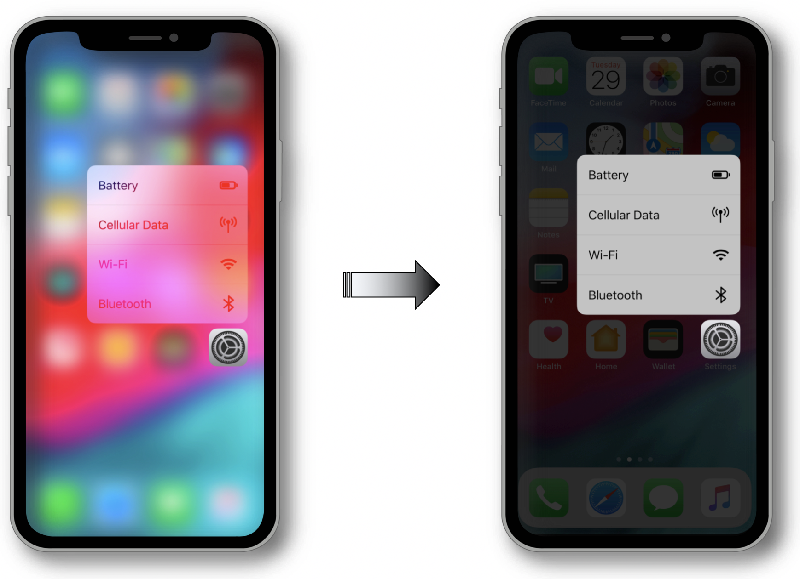
Côté développement, il est possible de connaître la valeur de la propriété
Le résultat conduit à un fond d'écran beaucoup plus sombre voire uni dans certains cas.
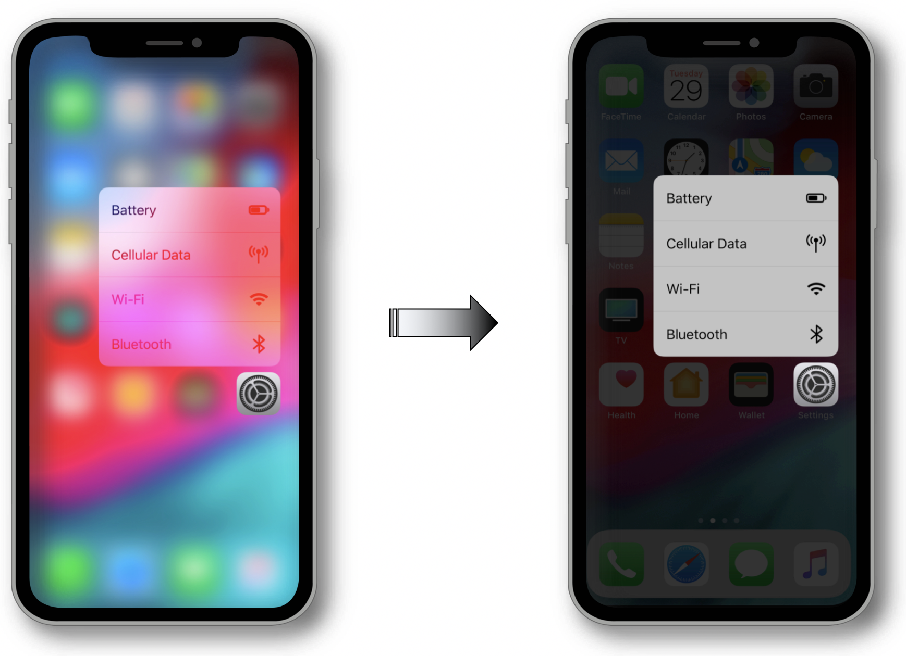
Côté développement, il est possible de connaître la valeur de la propriété isReduceTransparencyEnabled.

Contraste (04:38)
Le contraste {couleur du contenu exposé / couleur du fond d'écran} est très important et repose beaucoup sur les propriétés de la police affichée détaillées dans la partie conception de ce site.
Il est possible d'augmenter nativement le contraste des couleurs en activant l'option d'accessibilité appropriée dans les réglages du terminal, pouvant ainsi favoriser un confort de lecture.
 Côté développement, le suivi de la modification de ce réglage se fait grâce à la valeur de
Côté développement, le suivi de la modification de ce réglage se fait grâce à la valeur de isDarkerSystemColorsEnabled.
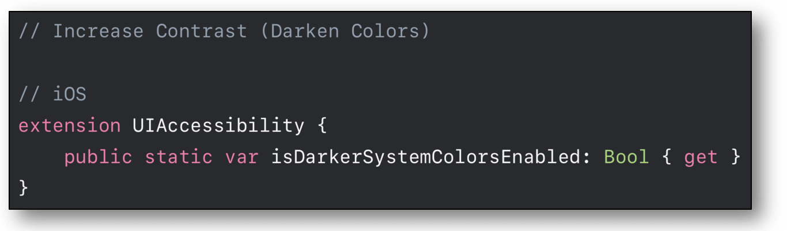
Grossissement (07:04)
Les quelques points concernant le Dynamic Type sont largement expliqués dans la section développement iOS et font référence à une autre présentation parfaitement détaillée dans la partie WWDC de ce site.
Le simple fait de passer une police en gras peut nettement améliorer le rendu visuel pour certains utilisateurs sans avoir à en grossir démesurément la taille.
Ici encore, les réglages du terminal permettent d'activer cette option d'accessibilité.
 Côté développement, le suivi de la modification de ce réglage se fait grâce à la valeur de
Côté développement, le suivi de la modification de ce réglage se fait grâce à la valeur de isBoldTextEnabled.

Mouvement (08:48)
Certaines animations peuvent entraîner des problèmes d'équilibre voire de nausées à certaines personnes.
Les réglages utilisateurs permettent de réduire fortement tout type d'animations natives en activant l'option d'accessibilité appropriée.
 Côté développement, le suivi de la modification de ce réglage se fait grâce à la valeur de
Côté développement, le suivi de la modification de ce réglage se fait grâce à la valeur de isReduceMotionEnabled et permet d'adapter les effets de l'application aux souhaits de l'utilisateur s'ils ne sont pas automatiquement pris en compte.

UIAccessibilityElement (21:03)
L'intérêt de cet élément ainsi que son implémentation sont expliqués et mis en situation au sein de l'application de démonstration.

Les valeurs continûment ajustables (21:44)
Cette fonctionnalité implémentable par définition de trait spécifique est présentée ici de façon à fluidifier la sélection d'éléments dans une CollectionView.
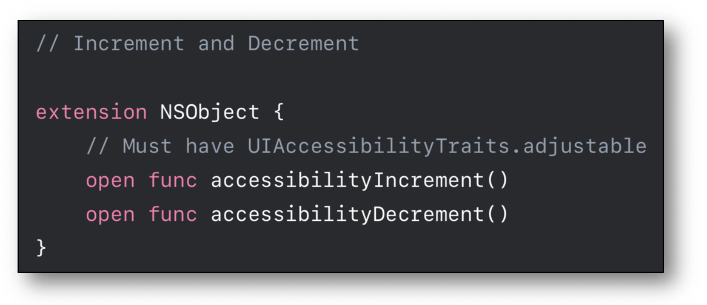
Un aperçu différent de cette utilisation a déjà été développé dans une autre vidéo détaillée de la partie WWDC de ce site.
Les actions personnalisées (23:49)
Sur une unique sélection, il est possible de regrouper un ensemble d'actions proposées sur différents éléments graphiques.
 Les explications fournies ici sont aussi développées dans une autre vidéo détaillée de la partie WWDC de ce site.
Les explications fournies ici sont aussi développées dans une autre vidéo détaillée de la partie WWDC de ce site.
Élément au premier plan (25:02)
Lorsqu'une vue est simplement présentée comme étant "en haut" de la hiérarchie des vues, VoiceOver ne sait pas nativement qu'il ne faut pas traiter les éléments présents en fond d'écran.
La solution consiste à modifier accessibilityViewIsModal de façon à ce que VoiceOver n'analyse que les éléments de la vue mise en avant.

Notifications (25:13)
Petit rappel pour notifier les utilisateurs de modifications sur l'écran.
 Des explications plus détaillées sur ce point sont fournies dans la partie développeur de ce site.
Des explications plus détaillées sur ce point sont fournies dans la partie développeur de ce site.
Exemple
Un exemple d'application est proposé pour répondre aux questions que se posent les développeurs face aux éventuels problèmes rencontrés dans la mise en oeuvre de l'accessibilité avec VoiceOver. La présentation de l'exemple ainsi que le rendu VoiceOver non optimisé sont absolument à visionner afin de mieux comprendre la logique des solutions apportées par tous les éléments exposés précédemment.
Comment rendre un carrousel parfaitement interprétable par VoiceOver ? (25:53)
- Création d'un élement accessible pour définir le carrousel. (26:11)
- Implémentations des propriétés
labeletvalue. (26:43) - Spécification de
adjustableTraitavec définitions deincrementetdecrement. (26:58) - Création d'une fonction de défilement. (27:14)
- Ajouter l'élément du carrousel en tant qu'élément sélectionnable par VoiceOver. (28:38)
- Mise à jour de l'élément affiché en fonction de la sélection. (29:51)
- Notification de mise à jour d'écran dès qu'un nouvel élément du carrousel est sélectionné. (30:14)
Comment synchroniser la mise à jour de données avec l'élément du carrousel sélectionné ? (30:53)
- Grouper des données pour améliorer significativement la sélection d'éléments. (31:14)
- Synchronisation des données regroupées avec l'élément du carrousel sélectionné. (32:46)
Comment associer des actions à un regroupement d'éléments ? (33:05)
Comment éviter la sélection d'éléments derrière une 'Modal View' ?
- Modifier
accessibilityViewIsModalenoverride. (34:33) - Penser à notifier l'utilisateur de l'apparition d'un nouvel écran. (35:00)
Rendu final de l'application avec VoiceOver optimisé. (35:38)
Le code présenté lors de cette vidéo ainsi que des explications sur son implémentation sont accessibles sur le site développeur d'Apple.
WWDC 2018 : Utiliser une voix synthétisée avec AVSpeechSynthesizer
Cette présentation visualisable sur le site développeur officiel d'Apple (session 236) a pour but de mettre en avant les éléments essentiels qui permettent à une application iOS d'utiliser une voix synthétisée en s'appuyant sur AVSpeechSynthesizer.
Les thèmes abordés ainsi que leur référence temporelle au sein de la vidéo sont décrits ci-dessous :
- Cas d'usage (00:48)
- Par où commencer ? (02:03)
- AVSpeechSynthesizerDelegate (03:20)
- Démonstration (04:11)
- Choix de la voix synthétisée (04:31)
- Débit vocal (05:32)
- Hauteur tonale et volume (06:15)
- Phonétique (06:54)
Par la suite, le fait de cliquer sur un titre permet d'ouvrir la vidéo de présentation Apple directement au moment indiqué.
Cas d'usage (00:48)
Les différentes utilisations possibles de cette fonctionnalité sont décrites dans cette partie.
Par où commencer ? (02:03)
Pour utiliser une voix synthétisée, il est primordial de créer tout d'abord une instance AVSpeechSynthesizer en s'assurant de son existence programmatique jusqu'à la fin de la vocalisation souhaitée.
 Il faut ensuite décrire sous forme de texte ce qui doit être vocalisé et fournir le résultat obtenu à l'instance précédente.
Il faut ensuite décrire sous forme de texte ce qui doit être vocalisé et fournir le résultat obtenu à l'instance précédente.
 Dans ce cas, une session
Dans ce cas, une session AVAUdioSession est automatiquement activée et peut être utilisée conjointement avec la vocalisation créée.
 Cette session devra être explicitement désactivée à la disparition de l'instance
Cette session devra être explicitement désactivée à la disparition de l'instance AVSpeechSynthesizer.
AVSpeechSynthesizerDelegate (03:20)
Ce protocole comprend un ensemble de méthodes optionnelles permettant de gérer certains événements du synthétiseur vocal :
- Pauses et reprises.
- Débuts et fins des vocalisations
AVSpeechUtterance. - Position de l'élément vocalisé au sein du texte auquel il appartient.

Démonstration (04:11)
Exemple très simple d'une vocalisation synthétisée s'appuyant sur les méthodes du protocole AVSpeechSynthesizerDelegate.

Choix de la voix synthétisée (04:31)
La voix synthétisée par défaut est celle du langage défini dans les préférences du terminal.
 Il est toutefois possible de définir cette dernière en spécifiant le langage désiré ou en utilisant un identifiant propre à une voix téléchargée.
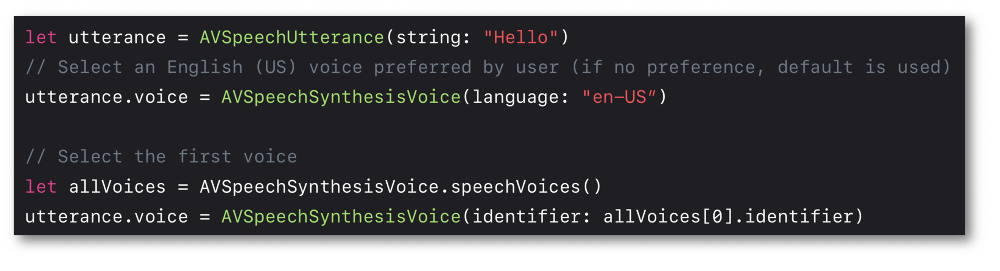
Il est toutefois possible de définir cette dernière en spécifiant le langage désiré ou en utilisant un identifiant propre à une voix téléchargée.
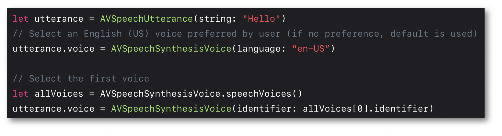
Débit vocal (05:32)
La vitesse du débit vocal peut être modifiée avec des coefficients multiplicateurs plus ou moins importants selon la valeur programmatique implémentée.

Hauteur tonale et volume (06:15)
Ces deux propriétés vocales sont facilement personnalisables en notant bien que l'augmentation du volume de la voix ne modifie absolument pas le volume système. 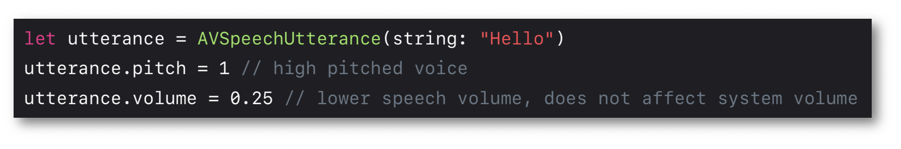
Phonétique (06:54)
La prononciation de certains mots pouvant parfois prêter à confusion, il est très pratique d'utiliser la phonétique pour s'assurer de la vocalisation appropriée.
Côté développement, on s'appuie sur les Attributed Strings pour utiliser l'alphabet phonétique international (IPA), ces éléments pouvant aussi servir à spécifier une langue différente uniquement pour une partie de la phrase à vocaliser par exemple.

WWDC 2019 : Quelques enseignements en accessibilité
Cette session regroupe quatre courtes interventions toutes visualisables sur le site développeur officiel d'Apple:
- Nouveautés iOS 13 pour l'accessibilité visuelle
- Découvrir Accessibility Inspector
- La bonne rédaction des labels
- Utiliser les actions personnalisées
Par la suite, selon la configuration de la présentation, le fait de cliquer sur un titre ou un temps indiqué permet d'ouvrir la vidéo Apple directement au moment spécifié.
Nouveautés iOS 13 pour l'accessibilité visuelle
Cette présentation visualisable sur le site développeur officiel d'Apple (session 244) développe certains points pour rendre une application la plus accessible possible au niveau visuel.
 Les thèmes abordés au sein de la vidéo sont détaillés ci-dessous :
Les thèmes abordés au sein de la vidéo sont détaillés ci-dessous :
- DYNAMIC TYPE
- Les quatre principes
- Les styles de texte
- Xcode ⟹ nouveauté iOS 13
- RÉDUCTION DE MOUVEMENT
- Fondamentaux
- Prévisualisation vidéo ⟹ nouveauté iOS 13
- Transitions entre écrans ⟹ nouveauté iOS 13
- COULEUR
- Fondamentaux
- Couleur et forme ⟹ nouveauté iOS 13
DYNAMIC TYPE
Dynamic Type s'appuie sur quatre principes qu'il est vivement recommandé de suivre :
- Tout texte dont la taille peut être augmentée se doit d'être implémenté de cette façon.
- Toute la largeur de l'écran doit être utilisée.
- Ne pas ajouter une troncature de mots si elle n'est pas présente sur le grossissement "standard" de l'application.
- La taille des textes et celle des éléments graphiques doivent augmenter conjointement de façon à conserver un ensemble visuel équilibré.
 ... ainsi que sur la façon programmatique de les implémenter :
... ainsi que sur la façon programmatique de les implémenter :
 Une explication détaillée de l'implémentation du
Une explication détaillée de l'implémentation du Dynamic Type est disponible dans la partie guide pour les développeurs.
RÉDUCTION DE MOUVEMENT
Réduire les animations est activée.
Elle permet un passage entre les différentes écrans moins perturbant pour certains utilisateurs dont l'adaptation visuelle aux mouvements est particulièrement sensible.
 Une fois activée, l'option
Une fois activée, l'option Préférer les transisitions en fondu enchaînées fonctionne automatiquement tant qu'on utilise les éléments standards de UIKit (navigation, vues modales...).
COULEUR

Différencier sans couleur permet à l'utilisateur d'indiquer sa préférence à ne surtout pas utiliser la couleur pour faire passer une information.
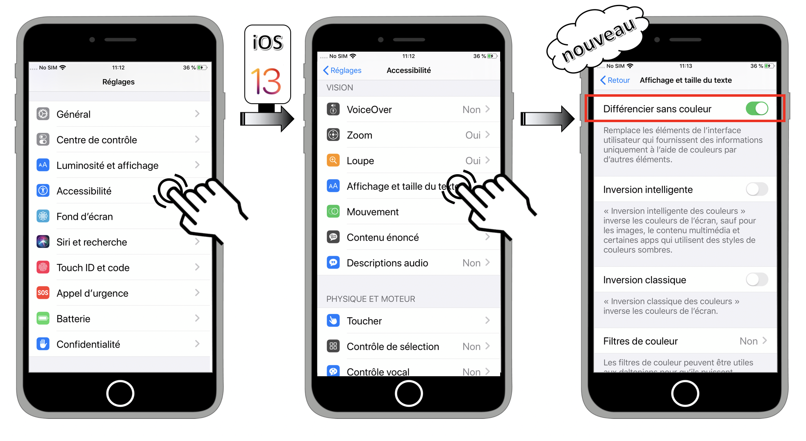
La valeur de cette option est accessible de façon programmatique afin d'adapter subséquemment le visuel d'une application :
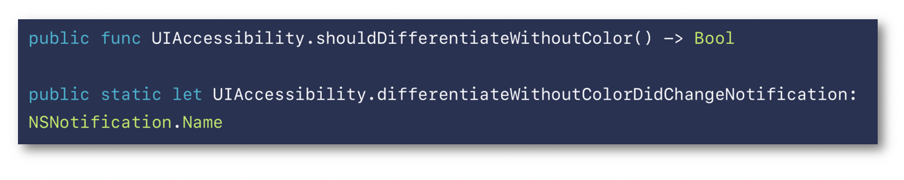
Il est bien évidemment recommandé de ne jamais faire passer une information par la couleur uniquement mais il y a des cas spécifiques où ce type de configuration est primordial et où l'intérêt de rajouter des éléments graphiques pour différencier les couleurs a un intérêt non négligeable (jeu vidéo par exemple).
Découvrir Accessibility Inspector
Cette présentation visualisable sur le site développeur officiel d'Apple (session 257) a pour but de présenter l'outil Accessibility Inspector ainsi que quelques nouveautés Xcode 11 qui vont permettre de résoudre certains problèmes exposés au sein de l'application de démonstration. Les thèmes abordés ainsi que leur référence temporelle au sein de la vidéo sont décrits ci-dessous :
- Présentation (00:51)
- Audit (02:26)
- Inspection (03:40) incluant une nouveauté Xcode 11
- CATextLayer (05:26)
- Contraste des couleurs (06:26) incluant une nouveauté Xcode 11
- Bilan (08:24)
Présentation (00:51)
 L'application de démonstration qui va servir tout au long de cette présentation est expliquée de façon à mieux comprendre la future problématique remontée par l'outil avec mise en avant de :
L'application de démonstration qui va servir tout au long de cette présentation est expliquée de façon à mieux comprendre la future problématique remontée par l'outil avec mise en avant de :
- La façon d'accéder à Accessibility Inspector (01:34).
- La fonctionnalité de grossissement
hover text(01:43).
Audit (02:26)
Cette fonctionnalité a pour but de présenter une liste de problèmes potentiels détectés par l'outil en accessibilité.

Inspection (03:40)
Après avoir montré comment activer une sélection d'éléments graphiques concomittante à la description affichée, la nouvelle fonctionnalité Xcode 11 qui permet la vocalisation et la sélection d'éléments sur simulateur (04:11) est enfin dévoilée.

CATextLayer (05:26)
Cet exemple met en avant le fait que l'accessibilité pour ce type d'élément n'est pas du tout géré automatiquement par le système et doit absolument être implémenté de façon programmatique.
Contraste des couleurs (06:26)
Hormis le fait d'avoir des polices de taille suffisamment grande pour être perçues par tous, il est aussi primordial de respecter un contraste de couleurs pour permettre à l'ensemble des personnes ayant des troubles visuels de distinguer parfaitement ce qui est sur l'écran. Une fois le problème décelé, une solution est apportée par la nouvelle fonctionnalité Xcode 11 : Color Contrast Calculator.
Bilan (08:24)
Utilisations des outils présentés lors de la session pour visualiser le rendu final et s'assurer que les solutions avancées fonctionnent parfaitement.
La bonne rédaction des labels
Cette présentation visualisable sur le site développeur officiel d'Apple (session 254) est réalisée par une personne non voyante qui explique l'importance de bien vocaliser les éléments accessibles par le biais d'exemples concrets et de bonnes pratiques. 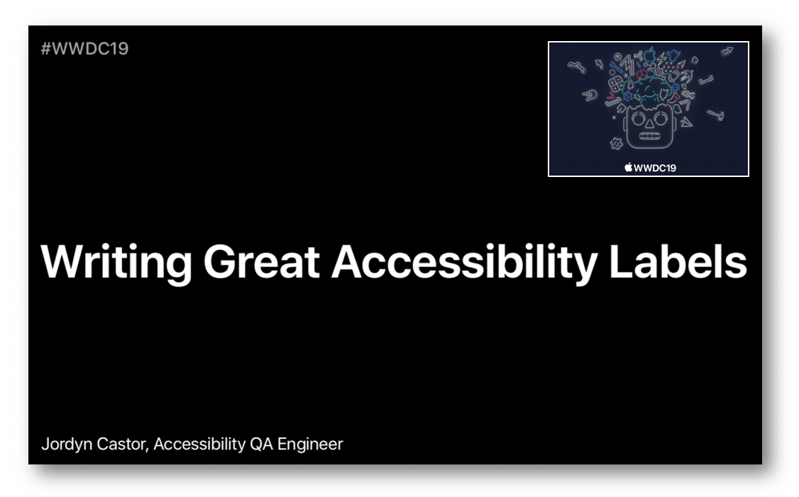 Après une brève introduction concernant les attentes d'un utilisateur VoiceOver sur le premier lancement d'une application mobile inconnue pour lui (00:13), la définition d'un label est présentée en détails (01:53) suivie d'explications sur différents contextes qui induisent une vocalisation adaptée pour un même élément accessible (02:41). La seconde partie de la présentation consiste à développer un ensemble des bonnes pratiques agrémentées d'exemples concrets : (04:24)
- Toujours ajouter des labels appropriés aux éléments accessibles (04:33).
- Ne pas insérer le type de l'élément accessible dans son label (05:22).
- Notifier l'utilisateur lors de mises à jour informatives de l'interface graphique (05:46).
- Ajouter une clarification sur le contexte quand cela est nécessaire pour la compréhension (06:07).
- Éviter les répétitions lorsqu'il n'y a pas d'équivoques (06:42).
- Penser aux notifications vocales pour les animations porteuses de sens (chargement de données...) (07:08).
- Éviter les labels prolixes (07:24) sauf lorsque cela permet d'apporter de l'information nécessaire et non verbeuse (07:48).
Utiliser les actions personnalisées
Cette présentation visualisable sur le site développeur officiel d'Apple (session 250) met en avant l'intérêt et l'implémentation des actions personnalisées pour le lecteur d'écran et le contrôle de sélection en s'appuyant sur une application qui permet de comprendre directement les concepts développés.
 Les thèmes abordés ainsi que leur référence temporelle au sein de la vidéo sont décrits ci-dessous :
Les thèmes abordés ainsi que leur référence temporelle au sein de la vidéo sont décrits ci-dessous :
- Introduction (00:12)
- Actions personnalisées : lecteur d'écran (03:10)
- Actions personnalisées : contrôle de sélection (04:28)
- Implémentation (07:59) ⟹ nouveauté iOS 13
Introduction (00:12)
Présentation rapide de VoiceOver ainsi que de la problématique liée à une implémentation insuffisante mise en exergue par l'application de démonstration utilisée tout au long de la session.
Actions personnalisées
 L'utilisation d'actions personnalisées dans ce contexte va permettre une diminution drastique du nombre de sélections/activations à réaliser par l'utilisateur pour aboutir à un même résultat.
L'utilisation d'actions personnalisées dans ce contexte va permettre une diminution drastique du nombre de sélections/activations à réaliser par l'utilisateur pour aboutir à un même résultat.
Implémentation (07:59)
Depuis iOS 8, la création d'actions personnalisées s'appuie sur une syntaxe ObjectiveC qui s'est adaptée à Swift en incluant désormais une closure en iOS 13.

WWDC 2019 : Large Content Viewer
Cette présentation visualisable sur le site développeur officiel d'Apple (session 261) détaille les nouveautés iOS 13 de la fonctionnalité Large Content Viewer utilisée par les personnes souhaitant visualiser l'écran avec une taille de police personnalisée et implémentée de concert avec le Dynamic Type depuis iOS 11. Les thèmes abordés ainsi que leur référence temporelle au sein de la vidéo sont décrits ci-dessous :
- Dynamic Type (00:57)
- Large Content Viewer (01:54)
- Images (04:02)
- Custom Views (04:52) ⟹ nouveauté iOS 13
- Exemples (09:15)
Par la suite, selon la configuration de la présentation, le fait de cliquer sur un titre ou un temps indiqué permet d'ouvrir la vidéo Apple directement au moment spécifié.
Dynamic Type (00:57)
Petit rappel sur la fonctionnalité Dynamic Type dont le but est de permettre l'adaptation graphique à la taille des polices modifiable dans les réglages utilisateurs
 Une explication détaillée de l'implémentation de cette fonctionnalité est disponible dans la partie guide pour les développeurs.
Une explication détaillée de l'implémentation de cette fonctionnalité est disponible dans la partie guide pour les développeurs.
Large Content Viewer (01:54)
Cette fonctionnalité iOS 11 disponible uniquement quand l'option Tailles de police plus grandes est activée permet de rendre très efficace le grossissement des éléments de barres (navigation, onglets...) pour les personnes souhaitant grossir la taille des polices à l'aide du Dynamic Type.
 Le déclenchement de cette fonctionnalité s'effectue par un appui long sur l'élément concerné que l'on peut laisser glisser sur les éléments voisins pour les grossir à leur tour et finalement activer celui sur lequel on relève le doigt de l'écran.
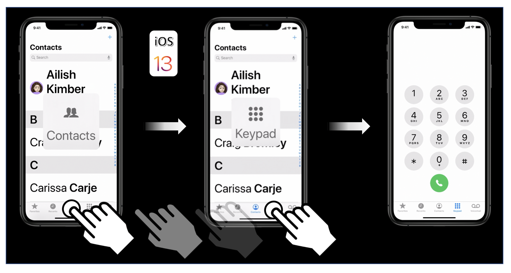
Il est très important d'avoir à l'esprit que les modifications de taille liées au Dynamic Type doivent toujours être implémentées de façon P.R.I.O.R.I.T.A.I.R.E. : le Large Content Viewer n'est à utiliser qu'à partir du moment où l'élément graphique impacté ne peut pas répondre aux changements souhaités.
Le déclenchement de cette fonctionnalité s'effectue par un appui long sur l'élément concerné que l'on peut laisser glisser sur les éléments voisins pour les grossir à leur tour et finalement activer celui sur lequel on relève le doigt de l'écran.
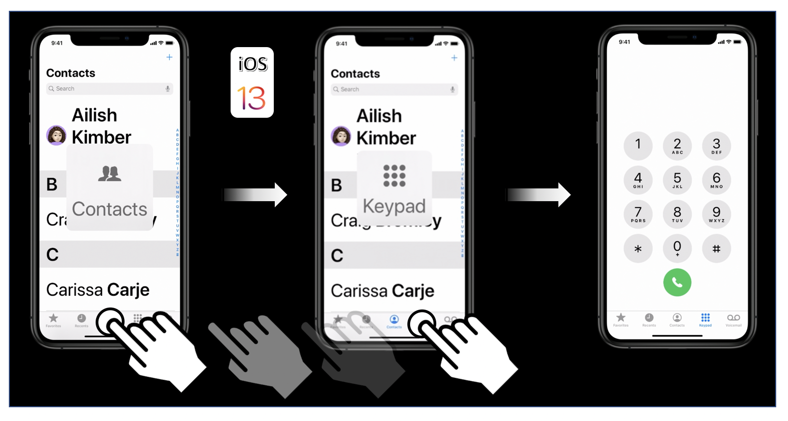
Il est très important d'avoir à l'esprit que les modifications de taille liées au Dynamic Type doivent toujours être implémentées de façon P.R.I.O.R.I.T.A.I.R.E. : le Large Content Viewer n'est à utiliser qu'à partir du moment où l'élément graphique impacté ne peut pas répondre aux changements souhaités.
Images (04:02)
Dans cette partie de la vidéo, toutes les caractéristiques des images à importer sont passées en revue pour obtenir une excellente définition du rendu après grossissement comme détaillé dans la partie guide pour les développeurs. L'interface graphique de Xcode peut être utilisée conjointement à du code pour obtenir le résultat escompté :
Custom Views (04:52)
En implémentant le Dynamic Type, iOS 13 rend possible un même rendu graphique pour un élément standard UIKit d'une barre (navigation, onglets...) et pour une UIView en suivant les étapes ci-dessous :
 Le protocole
Le protocole UILargeContentViewerItem (05:35) définit toutes les informations nécessaires au Large Content Viewer ⟹ la classe UIView se conforme à ce protocole par défaut :
 L'ajout d'une interaction tactile (06:52) est aussi nécessaire pour finaliser l'implémentation de cette fonctionnalité :
L'ajout d'une interaction tactile (06:52) est aussi nécessaire pour finaliser l'implémentation de cette fonctionnalité :
 Quelques propriétés liées à cette interaction tactile (07:11) permettent d'obtenir et/ou de définir certains types de détails :
Quelques propriétés liées à cette interaction tactile (07:11) permettent d'obtenir et/ou de définir certains types de détails :
 Pour finir, le
Pour finir, le delegate de cette interaction tactile contient un ensemble d'options (07:52) qui permettent de réaliser certaines actions :

Exemples (09:15)
Le premier exemple concerne les éléments UIKit standards :
 Le second exemple traite de classes personnalisées pour des boutons (09:53) dont certaines propriétés doivent être redéfinies pour une parfaite implémentation du Large Content Viewer :
Le second exemple traite de classes personnalisées pour des boutons (09:53) dont certaines propriétés doivent être redéfinies pour une parfaite implémentation du Large Content Viewer :
 Enfin, le dernier exemple détaille les modifications à apporter à un bouton ayant déjà une action prévue suite à un appui long (10:36) pour ne pas avoir de conflit avec le Large Content Viewer.
Enfin, le dernier exemple détaille les modifications à apporter à un bouton ayant déjà une action prévue suite à un appui long (10:36) pour ne pas avoir de conflit avec le Large Content Viewer.
Recommandations accessibilité Orange pour les mobiles
L’accessibilité, une nécessité pour certains, un avantage pour tous !
Définition de l’accessibilité mobile
C’est une application utilisable par tous
- personnes valides.
- seniors.
- personnes en situation de handicap (temporaire ou permanent).
et dans tous les contextes
- avec tous types de matériel : navigateurs mobiles, Android, iOS, tablette.
- dans un contexte dégradé : mauvaise luminosité, etc...
- avec des logiciels spécifiques de compensation du handicap.
Organisation de ce site
Android
1. Critères de conception
Liste des différents critères à respecter pour obtenir une application mobile accessible.
Un bon moyen de prendre connaissance des éléments importants à respecter pour s’engager vers une démarche de mise en accessibilité.
2. Guide pour les développeurs
Section à destination des développeurs.
Tout ce qu’il faut savoir pour coder accessible sur mobile.
3. Talkback
Guide simple pour utiliser le lecteur d’écran natif qui détaille toutes les gestuelles nécessaires pour maîtriser Talkback, outil incontournable dans une démarche d'accessibilité mobile.
4. Tests
Comprend de façon synthétique les tests à mettre en oeuvre pour s'assurer que les recommandations android sont bien prises en compte avant mise en production de l'application.
iOS
1. Critères de conception
Liste des différents critères à respecter pour obtenir une application mobile accessible. Un bon moyen de prendre connaissance des éléments importants à respecter pour s’engager vers une démarche de mise en accessibilité.
2. Guide pour les développeurs
Section à destination des développeurs. Tout ce qu’il faut savoir pour coder accessible sur mobile.
3. VoiceOver
Guide simple pour utiliser le lecteur d’écran natif qui détaille toutes les gestuelles nécessaires pour maîtriser VoiceOver, outil incontournable dans une démarche d'accessibilité mobile.
4. WWDC
Section qui détaille des présentations Apple faites au World Wide Developers Conference ayant un impact fort dans la démarche d'accessibilité mobile.
5. Tests
Comprend de façon synthétique les tests à mettre en oeuvre pour s'assurer que les recommandations iOS sont bien prises en compte avant mise en production de l'application.
Démonstrateur mDAN
Présentation de l’application mDAN, le démonstrateur d’accessibilité numérique pour mobile.
Liens utiles
Quelques liens utiles qui pourront compléter les explications de ce site.
Guide d’utilisation de VoiceOver
VoiceOver est le lecteur d’écran natif iOS qui décrit à haute voix les éléments qui apparaissent sur l’écran de votre terminal. Il permet à un utilisateur malvoyant ou nonvoyant, dyslexique ou illettré de pouvoir vocaliser tous les éléments visibles contenus dans la page.
L'activation de VoiceOver se fait via le menu Réglages du téléphone :
Lorsque l'activation est effective, les gestes standards effectués sur l’écran tactile donnent des résultats différents. Cependant, des gestes supplémentaires permettent de se déplacer à l’écran et de contrôler des éléments sélectionnés.
Il est préférable mais non obligatoire d'activer la vibration pour percevoir le point de déclenchement de certaines fonctionnalités.


Si cette fonction est désactivée, il est toutefois possible d'entendre un bip signalant le déclenchement qui risque néanmoins d'être parasité par la vocalisation.
Deux mouvements principaux sont importants à maîtriser pour appliquer sans problème les détails fournis par la suite :
 Le balayage qui consiste à décoller le doigt de l'écran à l'issue du mouvement tout en le poursuivant.
Le balayage qui consiste à décoller le doigt de l'écran à l'issue du mouvement tout en le poursuivant.
 Le glissement qui consiste à réaliser le mouvement défini en gardant continuellement le contact entre le doigt et l'écran.
Le glissement qui consiste à réaliser le mouvement défini en gardant continuellement le contact entre le doigt et l'écran.
Dans une première partie, nous décrirons les gestes de base liés à une utilisation courante de VoiceOver pour ensuite traiter le cas spécifique de l'iPhone X et finir avec des manipulations peu courantes mais néanmoins très utiles pour l'utilisateur avancé.
Gestes de bases
-

Se déplacer avec un doigt sur l’écran
Explorer l’écran et entendre la vocalisation de l’élément qui est touché.
-

Double-cliquer n’importe où sur l’écran
Ouvrir ou activer l’élément qui a été touché (vocalisé) en dernier.
-
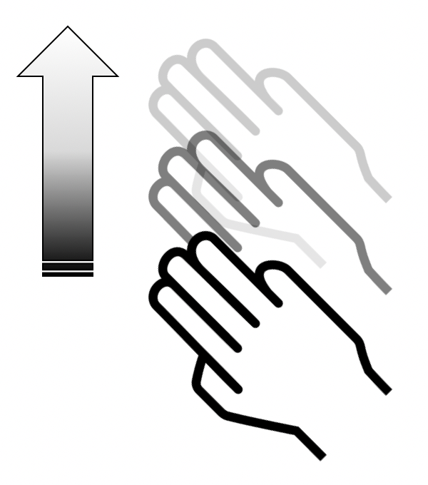

Balayer vers le haut ou le bas en utilisant trois doigts
Se déplacer verticalement sur une liste ou sur une page à condition qu’elle soit sélectionnée. Correspond à un balayage vertical.
-


Balayer vers la gauche ou la droite en utilisant trois doigts
Changer de page ou d’écran quand c’est possible. Correspond à un balayage horizontal.


Balayer vers la gauche (resp. droite) en utilisant un doigt
Déplacer le focus VoiceOver sur le prochain (resp. précédent) élément.
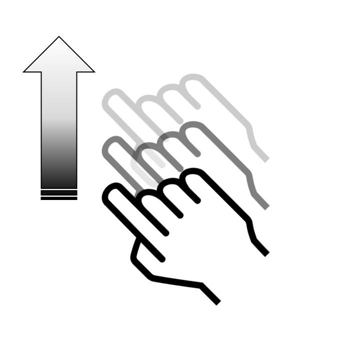

Balayer vers le haut (resp. bas) en utilisant un doigt
Permet d’augmenter (resp. diminuer) la valeur d’un élément ajustable.
iPhoneX
L'arrivée sur le marché de ce terminal sous iOS11 avec l'absence de bouton principal a quelque peu bouleversé la gestuelle classique dont on avait l'habitude. Ces nouveaux gestes de base ont donc fortement impacté les manipulations VoiceOver dont les principales sont fournies ci-dessous.
- Revenir à l'écran d'accueil.
- Accéder au multitâche.
- Accéder au centre de contrôle.
- Accéder au centre de notifications.
Mouvement : balayage à partir du bas de l'écran avec un doigt jusqu'à sentir l'émission d'une simple vibration (environ au premier quart inférieur de l'écran).

Mouvement : balayage à partir du bas de l'écran avec un doigt jusqu'à sentir une double vibration (environ à la moitié de l'écran).

Mouvement: balayage avec 1 doigt à partir du haut de l'écran jusqu'à sentir l'émission d'une simple vibration (environ au premier quart supérieur de l'écran).
Mouvement: balayage avec 1 doigt à partir du haut de l'écran jusqu'à sentir l'émission d'une double vibration (environ à la moitié de l'écran).
Trucs & Astuces
Cette partie contient des manipulations qui ne sont pas forcément toutes très connues mais qui peuvent s'avérer très utiles sur tout type de terminal :
- Lire tous les éléments à partir du haut de la page.
- Lire tous les éléments à partir de la sélection.
- Arrêter/redémarrer la lecture automatique des éléments.
- Localiser l'élément sélectionné.
- Arrêter/redémarrer l'énonciation VoiceOver.
- Accéder au centre de contrôle.
- Accéder au centre de notifications.
- Activer un élément sélectionné.
- Revenir à la page précédente.
- Trouver un élément avec le sélecteur d'éléments.
- Sélectionner le premier élément d'une page.
- Sélectionner le dernier élément d'une page.
- Activer/désactiver l'écran "rideau".
- Changer la vocalisation d'un élément.
- Lancer une recherche.
- Réaliser un appui long
- Ouvrir un lien dans une vue.
Mouvement : balayage avec 2 doigts du bas vers le haut n'importe où sur l'écran.
Mouvement : balayage avec 2 doigts du haut vers le bas n'importe où sur l'écran.
Mouvement : simple tap avec 2 doigts n'importe où sur l'écran.

Mouvement : simple tap avec 3 doigts n'importe où sur l'écran.

Mouvement : double tap avec 3 doigts n'importe où sur l'écran.
Si la fonctionnalité zoom est activée dans les réglages, il faudra réaliser un triple tap pour obtenir le résultat souhaité.

Il faut au préalable sélectionner un élément de la barre d'état en haut de l'écran.
Mouvement: balayage avec 3 doigts du bas vers le haut n'importe où sur l'écran.

Il faut au préalable sélectionner un élément de la barre d'état en haut de l'écran. Mouvement: balayage avec 3 doigts du haut vers le bas n'importe où sur l'écran.
Mouvement : sélectionner l'élément désiré avec un doigt en maintenant la pression puis effectuer un simple tap avec un autre doigt n'importe où sur l'écran. Cette gestuelle est très pratique pour taper au clavier en utilisant l'index pour sélectionner la lettre et le majeur pour réaliser le simple tap.
Mouvement : glissement avec 2 doigts en dessinant un 'Z' n'importe où sur l'écran. Cette manipulation aboutit exactement au même résultat que l'appui sur le bouton retour natif d'un écran.
Mouvement : triple tap avec 2 doigts n'importe où sur l'écran.

Mouvement : simple tap avec 4 doigts dans la moitié supérieure de l'écran.
Mouvement : simple tap avec 4 doigts dans la moitié inférieure de l'écran.
Mouvement : triple tap avec 3 doigts n'importe où sur l'écran.
Si la fonctionnalité zoom est activée dans les réglages, il faudra réaliser un quadruple tap pour obtenir le résultat souhaité.
Cette fonctionnalité permet de continuer la navigation avec VoiceOver en ayant un écran éteint favorisant ainsi à la fois la confidentialité et la longévité de la batterie.
Mouvement : double tap avec 2 doigts en maintenant la pression n'importe où sur l'écran.

Mouvement : balayage avec 3 doigts vers le bas n'importe où sur l'écran.

Mouvement : double tap avec 1 doigt en maintenant la pression (iOS 12) ou triple tap avec un doigt (iOS 13) n'importe où sur l'écran.

Mouvement : double tap avec 1 doigt en maintenant la pression n'importe où sur l'écran. Sélectionner l'option 'Liens' du rotor avant de balayer vers le haut pour atteindre le lien souhaité. Ensuite, effectuer un double tap avec 1 doigt en maintenant la pression jusqu'à l'apparition d'une popup au-dessus du lien qui affichera une fenêtre d'actions en bas d'écran.
Rappels sur les gestes de base avec un iPhone X
Cette page décrit de façon non exhaustive les gestes spécifiques de l'iPhone X à l'aide d'explications textuelles et de schémas permettant de visualiser plus facilement les manipulations à réaliser.
Par la suite, la gestuelle graphique sur un terminal possédant un bouton principal est mise en parallèle de façon à s'approprier plus facilement cette nouvelle logique de manipulation.
- Revenir à l'écran d'accueil.
- Déverrouiller l'écran.
- Allumer l'écran verrouillé.
- Accéder au centre de contrôle.
- Accéder au multitâche.
- Changer d'application ouverte.
- Activer la fonctionnalité accès facile.
- Poser une question à Siri.
- Accéder à Apple Pay.
- Prendre une capture d'écran.
- Éteindre le terminal.
Mouvement : balayage vers le haut à partir du bas de l'écran avec 1 doigt.

Déverrouiller l'écran
Mouvement : balayage vers le haut à partir du bas de l'écran avec 1 doigt sur l'écran verrouillé. Résultat : déverrouillage automatique de l'écran avec la fonctionnalité faceID activée. La manipulation est exactement la même que précédemment mais elle s'applique ici sur un écran verrouillé.
Mouvement : simple tap sur l'écran avec 1 doigt. Résultat : l'écran verrouillé s'affiche immédiatement.
Mouvement : balayage vers le bas à partir du coin à droite en haut de l'écran avec 1 doigt.
Quel que soit le modèle de l'iPhone, il est obligatoire de sélectionner un élément de la barre d'état avant de réaliser la gestuelle à 3 doigts.

Mouvement : glissement avec 1 doigt vers le haut à partir du bas de l'écran et maintenir la pression. Ce glissement peut aussi être effectué vers la droite de l'écran toujours à partir du bas de l'écran pour obtenir le même résultat. Résultat : apparition de toutes les applications actuellement ouvertes sur le terminal.
Mouvement : glissement avec 1 doigt vers la gauche ou la droite dans la limite la plus basse de l'écran correspondant à la barre d'accueil de l'application ouverte.
Mouvement : balayage avec 1 doigt vers le bas sur la barre d'accueil. Le même mouvement vers le haut permet la désactivation.
Mouvement : maintenir la pression sur le bouton latéral droit. Résultat : lancement de Siri après une à deux secondes.
Mouvement : effectuer une double pression sur le bouton latéral droit. Résultat : ouverture de l'Apple Pay avec authentification faceID.
Mouvement : effectuer une pression rapide sur le bouton latéral droit et sur le bouton d'augmentation de volume de façon simultanée.
Résultat : capture d'écran enregistrée dans l'application Photos du terminal.
Mouvement : effectuer une pression prolongée sur le bouton latéral droit et sur le bouton d'augmentation de volume de façon simultanée.
Résultat : mise à jour de l'écran avec proposition d'éteindre le terminal.

Démonstrateur d’accessibilité sur mobile mDAN
mDAN, kesako ?
mDAN est une application mobile (Android et iOS) visant à présenter l’accessibilité d’un système mobile sous toutes ses formes. Ses objectifs sont :
- présentation de l’accessibilité,
- critères d’accessibilité mobile,
- guide pour les développeurs,
- guide d’utilisation du lecteur d’écran (Talkback ou VoiceOver),
- présentation des options d’accessibilité par plate-forme,
- contact, etc.
mDAN, oui, mais pour qui ?
mDAN, de par son contenu riche, cible la plupart des corps de métier susceptibles d’être impactés par l’accessibilité :
- testeurs : avec les critères d’accessibilité et le guide d’utilisation du lecteur d’écran ;
- développeurs : avec le guide de développement ;
- managers, designers, etc : pour la sensibilisation à l’accessibilité.
Pour tout le monde en somme !
Je veux mDAN !
Le code source est disponible sur github
Vous pouvez déjà télécharger la version Android
Guide d’utilisation des lecteurs d’écran TalkBack et VoiceOver
À travers cette section, nous allons présenter les gestes de base pour une utilisation des lecteurs d’écran d’Android et iOS. Ces outils sont riches en fonctionnalités mais nécessitent une connaissance minimale pour être utilisés efficacement. C’est cette utilisation standard qui sera présentée ici.
Deux versions sont disponibles :
- TalkBack le lecteur d’écran intégré à Android.
- VoiceOver le lecteur d’écran intégré à iOS.


Guide d’utilisation de TalkBack
TalkBack est un lecteur d’écran intégré à Android qui décrit à haute voix les éléments qui apparaissent sur l’écran du téléphone. Il est gratuit et permet à un utilisateur non- ou malvoyant, dyslexique ou illettré de pouvoir vocaliser tous les éléments visibles contenus dans la page. Un outil comme TalkBack est appelé indifféremment lecteur d’écran ou synthèse vocale, même si un lecteur d’écran est en fait un logiciel associé à une synthèse vocale.
Lorsque TalkBack est activé, les gestes standards effectués sur l’écran tactile donnent des résultats différents. En outre, des gestes supplémentaires permettent de déplacer le focus à l’écran et de contrôler les éléments sélectionnés. TalkBack comprend des gestes de toucher et de balayage à un, deux et trois doigts. Nous décrivons ici les gestes de base pour une utilisation courante de TalkBack. À noter : TalkBack n’est considéré comme accessible qu’à partir de la version JellyBean (4.1) car on peut naviguer séquentiellement.
Avant toute chose, commencez par mettre à jour TalkBack : page de l’application sur le PlayStore
Gestes de bases
- Se déplacer avec un doigt sur l’écran
-
Explorer l’écran et entendre la vocalisation de l’élément qui est touché.
- Double-cliquer n’importe où sur l’écran
-
Ouvrir ou activer l’élément qui a été touché (vocalisé) en dernier.
- Slide vers le haut ou le bas en utilisant deux doigts
-

 Se déplacer verticalement sur une liste ou sur une page à condition qu’elle soit sélectionnée. Correspond à un slide vertical.
Se déplacer verticalement sur une liste ou sur une page à condition qu’elle soit sélectionnée. Correspond à un slide vertical.
- Slide vers la gauche ou la droite en utilisant deux doigts
-

 Changer de page ou d’écran quand c’est possible. Correspond à un slide horizontal.
Changer de page ou d’écran quand c’est possible. Correspond à un slide horizontal.
- Slide vers la droite en utilisant un doigt
-
Déplacer le focus TalkBack sur l’élément suivant.
- Slide vers la gauche en utilisant un doigt
-
Déplacer le focus TalkBack sur l’élément précédent.
- Slide vers le haut en utilisant un doigt
- Changer de mode de lecture : « par défaut (éléments) », « caractères », « mots », « lignes », « paragraphes », « en-têtes », « liens » et « commandes ».
- Slide vers le bas en utilisant un doigt
-
Changer de mode de lecture comme le geste précédent mais dans le sens inverse : « par défaut (éléments) », « commandes », « liens », « en-têtes », « paragraphes », « lignes », « mots » et « caractères ».
These images are licensed under a Creative Commons Share Alike 2.0 license. Photo credit: openexhibits
Pour plus d’information sur TalkBack et une description détaillée de ses fonctionnalités, nous vous invitons à lire la documentation officielle de Google sur TalkBack.
Liens utiles
En complément
Vous trouverez de l’information sur le développement accessible pour iOS et Android sur le dépôt github de la DISIC (Direction Interministérielle des Systèmes d’Information et de Communication) :
- Guide d’audit d’applications mobiles
- Guide de conception d’applications mobiles accessibles
- Guide de développement d’applications mobiles hybrides accessibles avec Ionic et OnsenUI
Pour Android
Présentation de l’accessibilité sous Android et de l’API Google
Application AccessibilityScanner pour vous aider à tester une partie de l’accessibilité de vos applications rapidement et simplement
Pour iOS
Présentation de l’accessibilité sous iOS et de l’API Apple